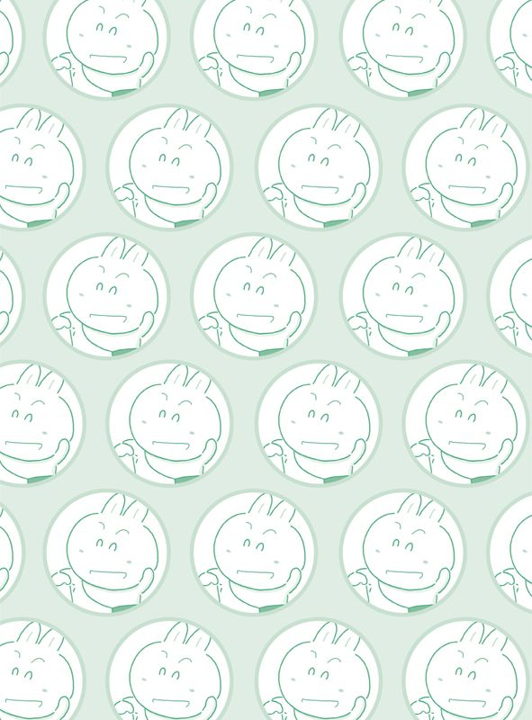
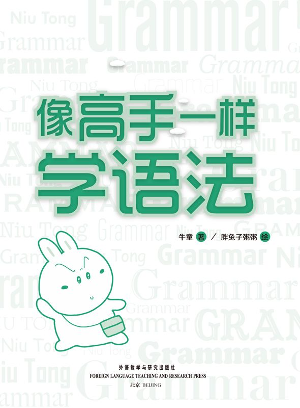
Copyright © Foreign Language Teaching and Research Press 2013
All rights reserved. No part of this publication may be reproduced or distributed by any means, or stored in a database or retrieval system, without the prior written permission of Foreign Language Teaching and Research Press.
本书版权由外语教学与研究出版社独家所有。如未获得该社书面同意，书中任何部分之文字及图片，不得用任何方式抄袭、节录、翻印或存储利用于任何数据库及检索系统等。
Published by Foreign Language Teaching and Research Press
No. 19 Xisanhuan Beilu
Beijing, China 100089
http://www.fltrp.com
图书在版编目(CIP)数据
像高手一样学语法/牛童著.—北京：外语教学与研究出版社,2013.1
ISBN 978-7-5135-2735-4
I. ①像… II. ①牛… III. ①英语—语法 IV. ①H314
中国版本图书馆CIP 数据核字(2013) 第011041 号
出版人：蔡剑峰
责任编辑：吕游
封面设计：姜凯
出版发行：外语教学与研究出版社
社址：北京市西三环北路19号(100089)
网址：http://www.fltrp.com
版次：2013年1月第1版 2013年1月第1次印刷
书号：ISBN 978-7-5135-2735-4
* * *
制售盗版必究 举报查实奖励
版权保护办公室举报电话：(010)88817519
• 一个很必要的问题——语法重要吗？
有人说：“语法不值得学，因为语言是一门艺术。”
一听到这种似是而非、误人子弟的“理论”，我就想踹说话的人一脚。相信你读完这本书后，也会非常乐意再补上几砖。其实，世界上根本不存在纯粹的“科学”或“艺术”——没有一门学科，是单凭理性思维或感性思维就可以完成的。我们只能说，“这个学科偏向于艺术”，或“那个学科科学成分更多”。
比如语言，就是“艺术”大于“科学”；而语法，则恰好是语言学习的“科学”部分。这就意味着，英语学不好的只可能有两种人：第一种，一点脑子都不动的，这些人无法理解英语中的“科学”部分；第二种比较冤——想太多的，这些人往往会忽略其中的“艺术”部分。
为什么说第二种人冤呢？正因为英语是“艺术”部分大于“科学”部分，所以什么都不想的“傻子”，往往比什么都想的“聪明人”更容易学好；而进步最快的，则是那些介乎于“傻子”和“聪明人”之间的人——这种人既能理解必要的语法知识，又不会仅仅拘泥于这些知识。
既然在英语中，语法只占较小的比重，那为什么还要学呢？语法与英语学习的关系，可以通过发声技巧和唱歌来作类比：
• 不学发声技巧，也有人能把歌唱得很好；
• 学了发声技巧，不一定就能把歌唱好；
• 但对于同一个人来说，学了发声技巧就比不学强。
同样：
• 不学语法，也有人能把英语学好；
• 学了语法，不一定就能把英语学好；
• 但对于同一个人来说，学了语法就比不学强。
所以，语法对于英语学习者来说虽不“必要”，却很“重要”。
看到这儿你可能要问了：老外也没学过语法，凭什么英语比我们好呢？因为他们虽然可能不会教，但是很会用。你和老外最大的区别是：你需要努力地学，而他们只需要下意识地学。那你可能又会问：我有没有可能也下意识地学呢？答案是：有可能——把自己扔到一个纯英语的环境，然后让一个完全不会中文的人像教小孩一样教你就行。我曾经在一个美国家庭里见到过四个被领养的中国孤儿，最长的一个也只用了一年就没有交流障碍了。当然，我们大多数人没有这样的条件，所以需要走一条相对艰辛的路来学。
• 本书的两大特点
本书的第一大特点是“简单”。因为它不但涉及的知识相当“通用”，而且纯粹以对话的形式完成（往后随便翻开一页，你就会明白什么叫“纯粹以对话的形式完成”）。
我相信，肯定会有很多“专家”对此书不屑一顾——“就这点儿东西也敢拿出来显摆？我看过的语法书比你这个全多了！”但本书针对的，并不是把英语当成“可以兑换文凭的专业”来学的人，而是只把这门语言当成工具的人——它不要“全”，不要perfect，而只是把good enough和necessary的知识呈现给你。所以，我希望它越薄越好，内容越通用越好，能不用专有名词就不用专有名词。
当然，即使把书写得如此通俗易懂，我相信还是会有人怀疑自己——“老师，我基础很差，能读这本书吗？”让我来给你讲个故事。
2006年9月10日，一位同学像往年一样回到母校，看望自己的英语老师。老师问他现在在做什么，他低着头小声说：“一边上学一边教英语。”虽然那个时候还没读过Paul Ekman的Telling Lies，但他分明从老师脸上看到了“surprise”的微表情——眉毛上扬、双眼圆睁、嘴巴大张，且持续时间不超过一秒钟。惊讶过后，就是搭着他的肩头狂笑不止。这位同学突然意识到：这可能是他自打认识老师以来，给她讲过的最好笑的笑话。原因只有一个——他是当年全班英语倒数第二名。而他的名字也正如你所料——牛童。
所以，千万别在本作者面前说你“基础差”。
也正是为了足够“简单”，这本书将通过其第二大特点——“创新”——完全颠覆你以前的语法学习观念。本书会用你前所未见的“五元素法”，教会你如何驾驭各种“诡异”的时态——哪怕是“过去将来完成进行时”；会用你意想不到的“降时态”模式，让你从心所欲地使用那些奇奇怪怪的虚拟语气；会利用语序上看似无关紧要的细微调整，带领你轻松造出令英语学习者困惑不已的变态从句。而且，作者还将向你证明：完成这三项任务其实只需要不到四章的篇幅。
• 本书会涉及什么知识，同时尽量避免涉及什么知识
这本书主要讨论的不是如何“看懂”句子，而是如何“制造”句子。许多人阅读能力很强，但说出来的句子却狗屁不通，说明问题出在“制造”上。
我对于“制造”句子的要求很简单：首先，所学语法知识足够表达基本感情；第二，就算别人写的语法自己不会用也没关系，只要能看懂并且大脑中有可以代替它的表达方法就行。例如，部分“倒装句”就是本书不会涉及的内容。因为如果你能说出 I had never talked to her，就一定能看懂 Never had I talked to her.
另外，本书也不会带给你太过基础的知识——如果你还不知道 I love her 不能说成 I love she 的话，那还是只看看前言和后记吧。有意思的是，读者最好还具备一点额外的“基础”。这个基础说来很可笑——就像老板招聘员工时要求他们有工作经验一样，读这本书你也最好有接受过应试英语教育的“经验”。检验方法是——回首往事，发现自己学了五年以上英语但还不能用英语自如对话，并伴之以一声习惯性的长叹。如果你是这样的人（不是的几率其实很小），那么恭喜，你将从本书中获得最大的震撼与快感！其实，我写这本书心情是很矛盾的——期待它成为畅销书，但同时又希望它有一天会没人买。因为只有到那时，我们的英语教育才算真正过关了。
一些语法细节——比如help sb to do sth中的to可以省略——也会被无情地忽略，因为它们可能是只适用于某个单词的规律，而不是可以应用在成千上万个句子中的定理。可见，这并不是一本完美的书。不过我很中意这种“不完美”——因为若非如此，就没人能看得下去了，就像现在几乎所有的语法书一样。
在写作过程中，我尽量优先从电视剧里挑选例句，其次是电影。这并不是说我笨到了在书里找不出句子的程度，而是因为电视剧和电影更贴近生活。我希望所有读者都能明白一件事：我们误以为很不好学的语法，其实对于以英语为母语的人来说就像家常便饭一样。
本书也会为你带来额外的收获。如果你是一名在校生，那么恭喜——你将通过本书极大地提升独立思考能力。有些人可能会担心：看这本书会不会影响我的升学考试？毕竟现在中国还是应试教育为主。答案是：当然会影响——而且是绝对正面的。与本书所涉及的内容相比，你那些英语考试实在是太小儿科了——还是多放点精力在真正有用的知识上吧。再比如，你将来想当一名好老师，那一定要仔细阅读第五章；如果你希望学好英语以外的其他语种，本书的第一章则对你至关重要；甚至如果你想多懂得一些为人处世的道理，也能在第七章找到答案。
• 几点小要求
为了让这本《像高手一样学语法》真正“书尽其用”，我要先给出一些小提示：
1 不要在意书中主人公的真实身份。
如果愿意的话，你大可将Ben（老师）和Bob（学生）这两个名字替换成“机器猫”“东方不败”之类的。这俩人是谁一点儿都不重要，重要的是他们谈话的内容和其中蕴含的道理。
2 完成每一章后的作业和练习。
我坚信，书中Ben老师留的作业，也是每一位读者所应该做的。只有认真完成的人，才能最大限度地体会到本书的价值。
大部分章节都有课后练习。除最后一章外，其余章节的练习方式都很简单——先看五个例句，然后把所有例句捂上做下面的填空练习。之所以将练习设计成“填空”而不是“单选”，实在是因为“干扰选项”是世界上最无聊、最无用的事物之一。它们存在的唯一价值是考试判卷子的时候节省人力，可是对学习的害处也是显而易见的——它们能干扰你做题，就能干扰你的正常学习。
3 读这本书时最好“思维重启”。
《像高手一样学语法》几乎会推翻你以前英语学习的一切。以你“科班出身”学到的知识来评判这本书显然是大脑进水的表现——因为如果你以前的方法是对的，就不用学五年，甚至十年以上，还不能用英语自如交流了。
4 避免“跳读”。
为了增加可读性，本书中难免会加入很多“扯蛋”的部分。在出版前的“试读期”里，我发现有很多人跳过所有英文部分，直接张开双臂扑向这些“蛋”——注意：这样做确实能给你带来极大的快感，但几乎无法带给你太多有用的知识。这本书可能是你人生中唯一 一次快乐学习语法的机会了，一定要珍惜。
最后祝阅读愉快！我认为一个读者能对这本书做出的最高评价并不是“它教会了我什么什么”（因为每本书都会或多或少教会你一些东西），而是“它是我这辈子第一本能从头看到尾的语法书”。
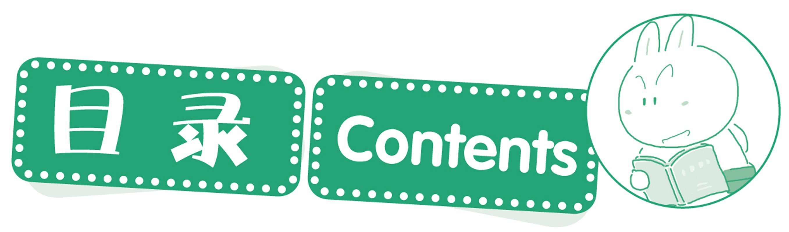
第零章 拜师
第一章 改变语法思维
第二章 英语是一种“后找补”的语言
第三章 工欲善其事
第四章 并不简单的“简单时态”
第五章 The Best Way to Learn Is to Teach
第六章 英语中用于“意淫”的句型
第七章 变态从句

给他讲完语法的当天晚上，我手机“biu”地一响：
2012/05/26 22:40
爸觉得你的东西真的很不错！是自己想的还是结合各家所长？
这条短信对我意义重大！我对着手机无声地笑着……
当然，原因肯定不是你想象的那样，什么“来自家人的鼓励”之类的。短信里的“爸”并非我的亲爹，而是初中同学，我最好的朋友之一。近十二年来，我俩长期处于谁也不服谁的状态——从初一开始就互相管对方叫“儿子”；即使一方取得再大的成就，另一方也要想方设法挤兑一番。就连当初我顶着天之骄子的光环考入清华，他都警告我说那儿“河臭恐龙多”，预测我将在大三上半学期投邻家的未名湖以图自尽（后来我实地考察才发现，在未名湖头下脚上都淹不着）。面对“儿子”的赐死，我也无话可说——谁让这厮混得比我还好呢？
我翘起八零后独有的两根健壮的大拇指回短信：
2012/05/26 22:44
爸是经牛人指点的！服了吧？
近半年来，我不断与身边各行各业的人分享这种学习语法的方式——有准备去World Bank应聘的白领，有我敬爱的母校的英语老师，也有像我一样疯狂进军美国Top 10大学的学生。他们无一例外，都被我的方法“讲服了”。看着他们“朝闻道，夕死可矣”的表情，我就仿佛看到了半年前的自己。那时我在英语上吃过的亏，比小朋友们走过的路还多——给美国教授打电话，只能一个一个专业词汇往外蹦，很少能连成一句人话，搞得明明对我学术背景很感兴趣的老师最终发来拒信；去Morgan Stanley应聘倒是成功了，但经历的七场面试都是全英文的，我糟糕的表现让经理近半年都不敢派我去国外工作。
其实我单词量理应够用——大学英语六级702的变态分数（满分710）不是谁都能考出来的；我也不相信自己没有语言天赋，因为至少我的中文天赋非同一般——从初中开始就在报纸杂志上发表不计其数的文章。对我来说，英语就像个“卓尔不群”的犯人。其他人都是吓唬一次就招了，唯有这一个，被我连续折磨十几年，每天上刑，上不同的刑，就是不招供！于是给我的感觉就成了：这个犯人反过来折磨了我十几年。当然，从这个类比可以看出，英语是很无辜的，它不会主动折磨你。相反，如果我们将英语想成一个有灵魂的生物的话，我把它用成这个德性，它早就该跟我急了。
能在这样的“崩溃时期”遇到Ben老师纯属偶然。当时我一个朋友正好在Ben的学校里实习，我在MSN上问他这老师怎么样，是否能解决我现在的困惑。他只说了句“不听他的课人生不完整”，就给我发过来一小段Ben上课的视频。
“能找他单学吗？！”这是我看过视频后的第一反应。
“他现在很少教课了，要不给你问问？”
“多谢！”我赶紧把自己遇到的困难详细写出来发给朋友，请他转交给Ben。
这一“问”就是两天时间。还好我也没抱太大希望——指望一校之长给我一个素不相识的学生讲课，如果是我我好像也不会答应。就算答应了，还不定一个小时要耗我多少银子呢。所以当我接到Ben亲自打来的电话，并告诉我课程完全免费时，我的表情只能用“见鬼了”来形容。
“当然，免费上课是有条件的。”电话里Ben的声音极富磁性，让人很难将其与他视频里困难的长相联系起来。“你朋友说你文笔极好，我也特意去你博客证实了一下。我要求，课全部上完后，如果你认为我的方法确实有效，就写一本相关的书，并通过正规出版社出版，让更多人有机会了解到这种方法。如果你能答应，我就将自己胸中所学倾囊相授。”
写书？！这可比学语法简单多了！我毫不犹豫地答应了他的要求。
随后，Ben跟我“约法四章”：
1 只讲方法。
大量练习是你自己的事。上课不要问我某个单词怎么拼，更不要问我它的发音是什么，因为用词典完全可以解决。
2 完成作业。
我每次都会留大量作业。只要有一次不完成，那么那一次就自动变为我们的最后一课。
3 只要有一次感觉没效果，就立刻叫停，不要不好意思说。
4 每次上课时间不超过35分钟。
前三条对我来说不是问题——尤其第二条。从重点学校一路走来的学生是不知道什么叫“大量作业”的。不过第四条让我很意外——我这辈子上过最短的课也是45分钟。况且去Ben的学校要开一个小时的车，也就是说来回两个小时；而他每次35分钟就把我打发了，还真不怕我折腾。但再一想，如果他的方法无效，我可以立刻选择不学，无非就是一次性损失两个半小时而已；再说，是我主动找的他，而不是他找我。于是我向Ben保证一定会严格遵守这些规则，并和他约定了时间——下星期三晚7：00，地点就在他位于金融街的办公室。
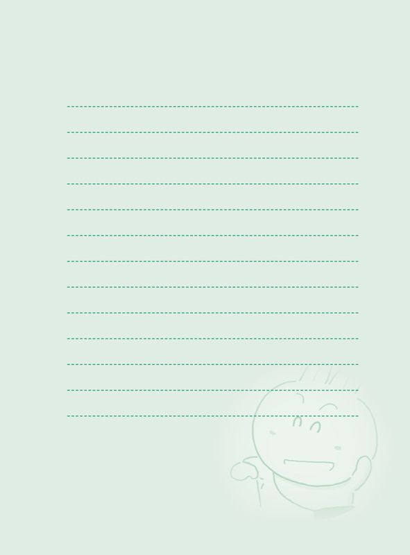
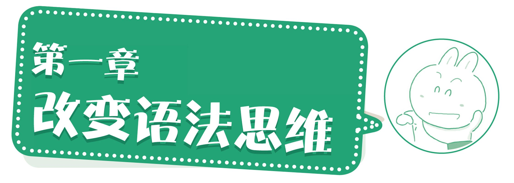
走进Ben的办公室，第一感觉就是书实在太多，满满几个架子。而Ben却好像和这些书没什么关系，正拿着一本电纸书在那儿看。他真人长得比视频里的还要难看一些，这让我反倒又心生几分好感。因为我曾经遇到的超强的老师，每个都有极其恐怖的长相。这也难怪——帅哥美女们一到青春期，就会被各式各样的异性骚扰，从概率上讲更不容易静下心来学习。
闲聊几句后，Ben说：
“在我正式开讲之前，你先帮我翻译四句话：
1．他是她的爸爸吗？
2．我想让你去睡觉。
3．你动我椅子干什么？！
4．我的鞋怎么会在教室里？
我要求你的句子能精确表达这四句话的感情。”
我以为这四句话对我来说没有任何问题——毕竟也是过了六级的人了，没想到从第一句我就开始犹豫。我不想在Ben面前丢人，让他第一次课就认为我能力低下。可明明这几句的关键词我都会，我还是用了将近五分钟，才向Ben展示了翻译成果：
“1. Is he her father?
2. I want to you go to sleep.
3. Why do you move my chair?
4. Why are my shoes in the classroom?”
Ben眼睁睁地看着我一下子耗掉了一节课中1/7的时间，却并不感到意外。他说：“第一句你造得没问题，但不能原谅的是你用的时间。”
我点头道：“is, he, her, father这些词都是我在小学一年级上半学期就学过的，但我却足足考虑了二十多秒。按说不应该啊！看来，单词量和造句子的能力真不一定成正比。”
“确实如此，你能很快想到这儿，证明悟性不错。我们之所以学语法，是为了把单词连接起来，而不是注重单词本身。你发现没有，以你的单词量对付阅读和听力都完全够用了，但你说这么简单的句子时却有困难。所以，千万不要误以为只要能看懂听懂，就一定能说对。
“对于你翻的这句话，我换个角度问，你肯定马上就能说上来。‘他是她的爸爸’怎么说？”
“He is her father.”我毫不犹豫地答道，然后突然“噢！”了一声，说：“对，所以问句肯定是Is he her father?我本来用不着想那么长时间，只是总觉得he和her放在一起很别扭。”
“再看第二句。你造的是I want to you go to sleep，这就有点过分了，应该是 I want you to go to sleep才对。”
“真的？我说的那句不行？”我的语感让我有点儿怀疑Ben的句子。
Ben无奈地用一只手托着腮帮子，说：“这样吧，你把笔记本的第一页空出来，先写一句‘牛主席语录’。”
“‘牛主席语录’？”
“我姓牛，我说的话叫‘牛主席语录’。以后所有的语录都记在第一页。我送你的第一句话是：‘Ben说的就是对的。’根据这句话，我刚才那句I want you to go to sleep对不对呢？”
“……要是这样，那肯定对了呀。”我突然羡慕起教师这个行业来——似乎他们永远有不讲理的特权。
Ben看着我明显不服气的表情，说：“哈哈，当然，我也没这么霸道。这句话是从美剧里摘出来的，而且我还看到了不止一次两次。这回放心了吧？”看到我点头，Ben接着说，“现在我们已经知道这句子是对的，那如果将来我想表达类似的感情，也就是‘想让某人做某事’，应该怎么说呢？”
“want sb to do sth。”
“对。我管这样有可替换部分的句子叫‘套儿’，很明显套儿可以帮我们更容易地造句。那现在跟我说：‘我想让你知道这件事。’”
“I want you to know this.”
“我想让他帮我个忙。”
“I want him to do me a favor.”
“你看，只要我给了你正确的套儿，你就不可能再造错。因为你的思维可以简化到如此的程度，以至于只需要换几个关键词就行了。其实，你的母语就是这么学会的。比如你躺在摇篮里，听到左边爸爸跟右边妈妈说：‘老婆，把那本书递给我。’你当然听不懂这句话，但你会意识到这句话一说，那本书就动了；下次爷爷跟爸爸说：‘孩子，把那水壶递给我。’你又亲眼目睹了水壶的移动。就算你再傻，看上100次相似的句型，也应该知道‘把……递给我’有移动物体的作用了吧？于是，有一天你会突然说：‘妈妈，把奶递给我！’你妈估计‘啊’的一声就愣了！其实你突然说出一个整句子并不奇怪——只是因为你下意识地掌握了一个套儿而已。
“所以说，学习语言靠的并非是‘模仿能力’，而是‘类比能力’。人和鹦鹉都会模仿别人说话，但他们最大的区别是：如果你给人类一个句子——‘我想吃香蕉’，然后再让他认识‘苹果’这个词，他就有能力说出新句子——‘我想吃苹果’。但是鹦鹉却做不到这一点，它只能不加任何变化地人云亦云。”
我若有所思地说：“好像还真是这么回事。这本是我天生就会的技能，等用它学会母语后，就忘得一干二净，以至于现在还得再找到你，请你传授我一岁以前就会的东西。”
“我能悟到这些，也是因为从小类比能力就很强。”Ben笑道，“小时候我哥总欺负我。有一次把我打得哭得稀里哗啦的，导致我日记本里从此多了一句话：‘我的忍耐力是有限的，而我哥打我是无限的。我不想把有限的忍耐力投入到无限的被我哥打的过程中去。’”
原来高手都是这么学雷锋啊！我笑道：“这真是字字泣血的类比！”
“现在回到刚才want sb to do sth的套儿。要注意，这里的do代表几乎所有的动词原形。所以我应该如何表达‘我想让你当我的女朋友’？”
“I want you to be my girlfriend.这里be是动词原形。”
“很好。现在可以回头反思一下了，之前为什么说成I want to you go to sleep？”
“因为当初没好好学？”
“没这么简单。想想，你——或者说绝大多数中国的英语学习者——都如何巩固自己的语法知识？”
“做题。”
“好，那语法题来了，别想，迅速答！”Ben突然像连珠炮一样发问，“want后面应该加to do, do, done还是doing？”
“to do。”我来不及反应，顺口作答。
“对。可是你想过没有，如果做语法题的话，你只要知道want后面应该加to do，就足以把题选对了。但具体to和do分别放哪儿，如何用这个句型来表达自己的感情，你从来没关心过——因为本来也不需要关心——题都做对了，还造句子干什么！”
Ben的话让我有茅塞顿开的感觉！
“难怪我说不出完整句子，原来恰恰是被自己练习的方式害了。我以前准备考试的时候确实是只想着怎么高效做题。”
“要说害处的话还远不止于此——我问你，语法题都是什么题型？”
“选择题。”
“是啊。选择题最大的特点就是：你看一遍正确答案的同时，还会看三遍错误答案。这对英语学习来说简直是致命的。比如我考你一道题：世界第一人口大国是哪国？”
“中国。”
“对，千万不要记成老挝、越南和柬埔寨。记好了啊，老挝、越南和柬埔寨这三个答案是错的。你跟我说说，哪三个答案是错的？”Ben好像打定主意要给我催眠一样，不厌其烦地提这几个国家。
我一边点头一边笑道：“老挝、越南和柬埔寨。”
“所以啊，以后你再看到相同的问题，脑子里几个答案？”
“四个！”
“所以说，选择题严重破坏语感。我们总说英语为母语国家的人语感好——什么叫语感？比如说他看你写的英文文章，读到不通顺的地方会皱眉头，为什么？是因为他知道你为什么错吗？”
“我觉得他可能只知道我错了——因为我写的东西和他们自己国家的人写得不一样——但不一定知道为什么错。”
“这就是我要跟你说的第二句‘牛主席语录’了：‘语感来源于——我只认识正确的句子。’我直到高三才终于想明白这个道理。当时由于厌倦了在四个选项中猜来猜去的生活，我对付所有选择题都只剩一招——抄答案！抄完之后，把答案代入句子里读。每读过十道题，就把选项都捂上，拿选择题当填空题做。第二天再拿出第一天的题，直接捂住选项做一遍。只过了两个月，我就发现自己做题的时候眼睛里只能看见正确答案，错误选项实在是看不到！为什么呢？因为我这两个月就没见过错误句子，以至于语感在一片净土中茁壮成长。再后来有些题甚至都不用看选项，因为我已经熟悉出题人的用词习惯和语言风格了。更重要的是，这个方法不但可以应对较低级别的考试，还可以用来备考SAT，GRE，GMAT这些更高级别的考试。所以说，要想学好英语，重要的不光是不断‘积累正确’，还要让自己‘远离错误’。那现在我要问问你了——应该怎么积累正确句子？”
“我自己造的句子当然很多都是错的了，尤其是一开始学的时候。我想，要积累绝对正确的句子，最好从英文电影、电视剧或者书里收集——Ben，你不会是想建议我背课文之类的东西吧？这个方法我试过，不怎么样。”
“背课文还是有点效果的，但同时也有两个严重的问题。首先，背课文时，你必须记住所有句子的顺序——而我们本来不需要在这点上浪费精力。另外，你有背课文的工夫，还不如把每个套儿多用几次呢！更重要的是，你背的那些句子都是谁想表达的感情？”
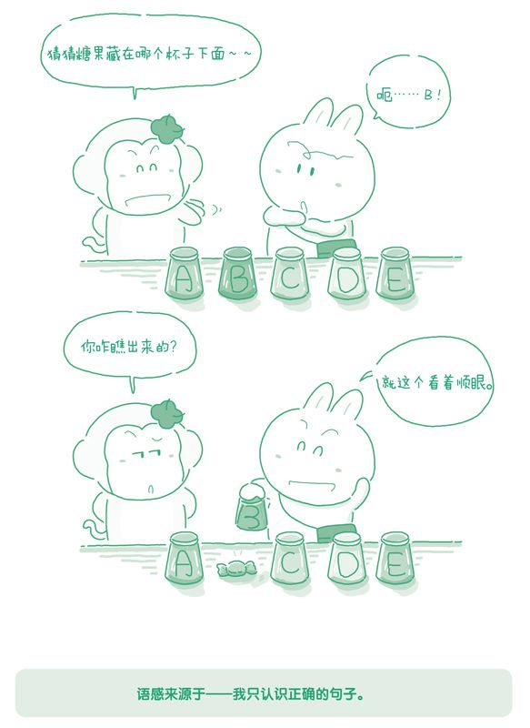
“是作者想表达的感情。”
“对，换句话说，就是几乎没有一句是你自己想说的。”
“嗯，如果不是自己想表达的感情，恐怕即使学起来也没什么动力。我之前学习的时候就经常会想：这句子跟我有什么关系？！我想你的建议是：无论用什么材料学，比方说《新概念》，都要用‘套儿’的思想造出很多自己的句子，而不是傻了吧唧地在那儿背课文——因为毕竟‘背’只是一种单纯的‘模仿’，只有‘造句’才是‘类比’的过程。”
“确实如此。一定要用套儿，否则你就等于是在一个单词、一个单词地憋句子。而‘憋’出来的句子十之八九都是错的，那样你就会积累无数个错误句子，语感越来越差。记住我的下一句‘牛主席语录’：以用上一个老句子为荣，以憋出一个新句子为耻。”
“哈哈！想想还真是这么回事。我刚才造的四句话都属于不折不扣的‘憋’出的句子——先想关键词，再组整句。那第三句我‘憋’得如何？”
“第三句你造的是Why do you move my chair?这表示‘为啥你总是动我的椅子呢？’， 根本体现不出那种‘你动我椅子干什么？！’的强烈感情。看看我的句子吧——What are you doing moving my chair?!”
doing怎么能和moving放一起？！
Ben看我皱眉头，说：“要是感觉别扭就对了，我教过的学生没有一个不这么想。但你好好思考一下，它是正确的句子吗？”说着，他冲我诡异地微笑。
我当然知道这笑的含意，无奈地说：“肯定正确。因为你说的就是对的……”
“哈哈，‘牛主席语录’很好用对不对？其实这是电影里的原句——对是肯定对了，不过你还是很想知道为什么可以把doing和moving放在一起，是不是？”
Ben确实看穿了我的心思，我点头。然后他说了一句让我直接崩溃的话：
“但我就不告诉你。”
……
Ben不理会我的情绪，自顾自地说：“我们学语法要考虑的不是‘为什么’，而是‘怎么用’。记住，你的思考重心应该有且只有一个，那就是‘特定套路表达特定感情’。我问你，以后如何表达‘你……干什么？！’这类的感情？”
我发现自己开始跟上了Ben的思路，说：“应该是What are you doing之后再加doing sth，其中第二个doing可以换成任意动词的-ing形式。”
“造句。”
我毫不犹豫地说：“What are you doing using my computer?! What are you doing kissing me?!……”我一口气造了四五句，Ben才微笑着让我停下来。我突然发现，原来不知道“为什么”也是可以造句的！
“其实不但后面可以换，前面的are you也行——比如What is she doing looking at me?!”
“Ben，现在我句子已经会造了，不过‘不知道为什么’还是让我觉得不踏实。你哪怕告诉我这个语法现象叫什么名字都行——就是这种doing后面再加个doing的句子？”
Ben一脸无奈的表情：“也不是不能告诉你，只是告诉你也没什么用。你想，我就算管这种语法现象叫‘香蕉’，叫‘猩红热’，这句子不是还得这么说吗！”
原来道理如此简单！
我顿悟道：“我理解你的思路了！看来以前学英语的方式还真是害人不浅，我总是不由自主地想些用不上的东西！”
“呵呵，你终于开始意识到给语法现象起名字没用了。其实不但没用，而且还有反效果。因为首先，‘起名字’会给我们带来愚蠢的快感；第二，它会使我们心生恐惧。
“第二点就不用细说了——如果我笑嘻嘻地告诉你，我们今天要学习‘过去将来完成进行时的被动语态’，你脑子里肯定‘嗡嗡’一片吧？其实学到后面你就会发现了，刚才说的这一长串儿用起来很简单，至少比它名字本身好学多了。不过关于第一点，我还得给你举个例子。什么叫‘愚蠢的快感’呢？比如说你现在头上长了个大包，包上长了个小树苗，小树苗上又长了几个蘑菇……”
我一边听他说一边目瞪口呆地想象自己得了这种“病”的样子……
“你发现后肯定疯了，于是来找Ben医生。如果我一看到你就大叫：‘哇靠！！这是什么呀？！我行医40年从来没遇到过！’你觉得你还有救吗？”
“那估计是没救了……”
“可如果我说：‘咳！这不就是大包树苗蘑菇症吗！’这回你觉得有救吗？”
“有救！”
“可是你觉得我会治吗——虽然我把名字叫出来了。”
“不一定会治……”
“没错。可是，我起的这个名字确实给你带来了‘愚蠢的快感’，让你有‘我肯定能治’的幻觉，对不对？”
我点头。
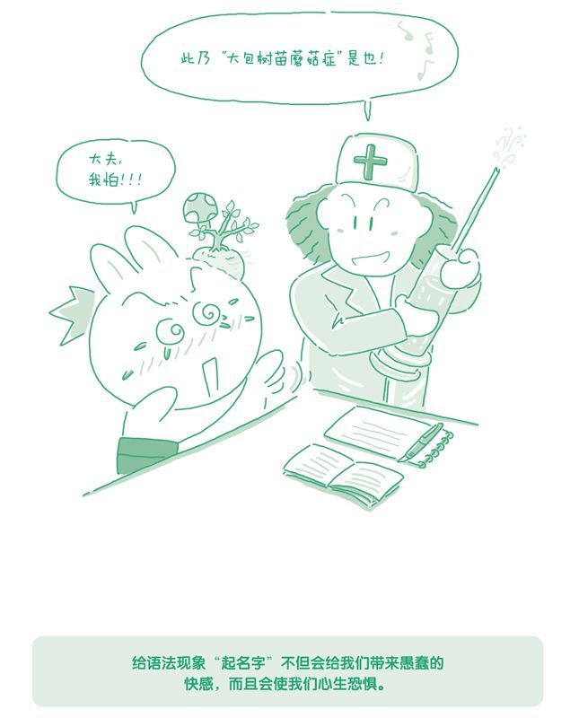
“所以，千万不要认为知道一个语法现象的名字对你有多重要。事实上是：一点儿都不重要！就算我在之后的几次课里给语法起名，那也是为了交流方便。但你千万别指望从名字本身悟到什么。”
“你说得太对了！其实我知道很多语法现象的名字，比如‘虚拟语气’‘非限定性定语从句’等等。我虽然明知道自己不会用，但这些名字确实会莫名其妙地让我感到踏实。我想，你的意思并不是完全不给语法现象起名，而是第一，能不起就不起；第二，就算起了也只是为了交流，因为它不会对理解语法现象本身提供任何帮助。”
“大体如此。现在回到第二句和第三句——这两句都是我从电影里找的。你看，我是怎么处理它们的？”
“把套儿拆出来，然后造新的句子。”
“对。现在你可以把这两步写下来了。我们对付地道句子的两个步骤是：一、解套儿；二、用套儿。另外还要注意一点——如果一个套儿解出来，但你只用了一次，那这个套儿是你的吗？”
“不是。得多用几次！”
“所以，你还要在‘用套儿’前面加两个字——‘找茬’。我以前有个叫Steve的学生，能在四个月内从只会说Hello进步到可以与美国人自如地对话，就是因为他明白了‘找茬’二字。当时我教给他们班一句话：It took me eight years to become a millionaire.我详细解释了每个词的意思，所以他们都能看懂。课间，Steve过来问我：‘老师，刚才那句子可以解成it took sb some time to do sth吧？’我说没错，解得太好了！
“然后他去了趟厕所，回来又问：‘老师，上厕所怎么说？’我说use the restroom就行。接着，他就造了一个难度大大超出他那个级别的句子：It took me five minutes to use the restroom.之后他又问‘开车’怎么说，我说drive。他立刻造出了句子：It took me fifty minutes to drive here. ”
“如果他每一句都这么‘找茬用套儿’，那进步快就一点也不奇怪了。”
“正是。现在看看你造的最后一句。”
我不好意思地说：“Ben，还是别看最后一句了吧。”我有一种强烈的预感——这句肯定也造错了，“不如你直接跟我说你的句子，然后我把套儿解出来。”
“哈哈，观念转变得很快嘛！不过这次碰巧你造对了。但我还是要告诉你我的句子，看看有没有可借鉴之处——What are my shoes doing in the classroom?”
我听完眼前一亮！
“这句话也太地道了！从来没想过sth后面也能这么加doing！不过Ben你放心，我这次不会再问‘为什么’了。我觉得如果解套儿的话，应该是what 什么什么doing，然后再加个表示‘地点’的词。”我开始按照Ben的思路看待新句子。
Ben冲我挑大拇指，示意我继续说下去。
“所以，如果我想表达‘我的钱怎么会在你包里’，就可以说What is my money doing in your bag?啊，对，我还得找茬用套儿，那就再来几个……”
我看到了Ben赞许的目光！
“What are your books doing on the floor? What are her pens doing in your pencilbox?”
我还要往下说，但Ben打断了我：“我对你的学习成果非常满意！今天咱们就到这儿啦。”
“完了？！”我有点儿反应不过来，“不是才上了十几分钟吗？”
Ben笑道：“别没数儿了，正好35分钟。”不容我再想，Ben又接着说， “今天作业很简单，看一集美剧，一定要带英文字幕的。然后边看边从里面摘出你以前没用过，或者用不好的套儿，然后‘找茬用套儿’。最后，再将你摘出来的所有原句大声朗读一遍。简单吧？”
“简单！这也算‘大量作业’？”
“不过我要求套儿的数量不能少于30个。”
我心算了一下，这样连解套儿带造新句子，加起来怎么也得一百多句话了，确实不少。不过，今天的课已经让我觉得做任何作业都是值得的！
“另外，”Ben接着说，“选美剧的时候要注意：尽量挑那些集与集之间情节相对独立的——比如Friends，The Big Bang Theory，Growing Pains或者Lie to Me。因为当每集之间情节不独立时，一般意味着整部剧是靠悬念取胜的。可是等你看过一遍之后，悬念就不再是悬念，导致你完全没胃口看第二遍——这很不利于复习。这就是为什么我虽然同样喜欢Friends和24这两部电视剧，但却打死也不会把后者重温一遍。”
“明白！我看我就从Friends开始吧！还有，Ben，我们什么时候再见面呢？”
“还不确定，最近一段时间我要去广州做讲座，等我电话吧。别忘了我们关于完成作业的约定！做完之后将原句、套儿和你造的句子整理成一个Word文档，发到我邮箱里。”Ben在我的笔记本上写下了邮箱地址。
开车回家的路上，我心情一直很激动。我想，即使Ben不再给我上下一节课，我也已经受益匪浅了！而且我惊讶地发现：Ben的方法不仅适用于英语，还可以用来学习任意一门新的语言！到家后，我迫不及待地给Ben发了一封邮件。
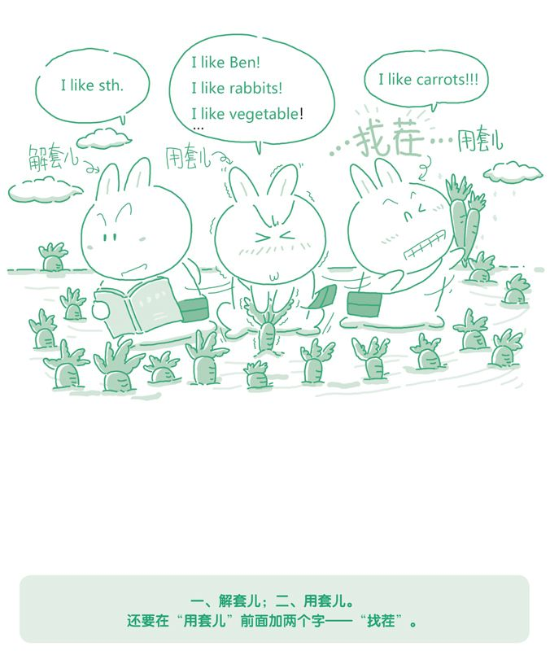
Ben老师：
你好！首先向你表示感谢！虽然只上了一次课，但我似乎已经预感到你的方法会为我节省无数时间和金钱了！这次课让我重新认识了语法学习，明白了以前方法的缺陷。
我给你发邮件主要是想总结一下从你那里学到的东西，请指正！
首先，并不是只要能读懂英文句子或知道关键词，就一定能说出“人话”。就好像我们中国人能看懂金庸的小说，却不可能写到他那个水平一样。
处理一个地道句子的两个步骤：
一是解套儿：学习语言靠的并非是“模仿能力”，而是“类比能力”。因此应该将句子的“套儿”解出来，以便今后表达相似的含义和感情。
二是找茬用套儿：其中“找茬”二字很关键，因为一个套儿只用一次还不能算被真正掌握。
之后是你的“牛主席语录”：
1 Ben说的就是对的！
你的句子大部分是从电影、电视剧或英文书籍中得来的，即使不是原句，也一定是用套儿造的句子。我想，这条语录想表达的是：我们说英语句子一定要有“根据”，就像我们从小学习母语的过程一样——其实没有一句是“新鲜”的，都是从别人的话中变化而来，只不过换了换关键词而已。只要造句有“根据”，我们任何一个人都可以基本确保“自己说的就是对的”。
我想，造出一个正确句子有两个必要条件：第一，原句（即从书、电影、电视剧里摘出来的一定正确的句子）；第二，语法知识。语法知识越多，你就有能力替换原句里越多的部分。
我发现即使是再难的句子也都可以用套儿的方式解决。我特意挑战了一下极限——原句是He would have been here yesterday if he had driven a car.如果以后再想表达“如果当时要是怎么怎么样的话，那后面发生的事就会怎么怎么样”的感情（相当于一种“吃后悔药”的感觉），对应的套儿就是：_____ would have done _____, if _____ had done _____. 我根据这个套儿造了几个句子。很奇怪，我造的时候就知道它们是对的：
• My car wouldn't have been stolen, if I had been in it.
• I wouldn't have been late, if I had taken the subway.
• She would have told me this, if I had given her some money.
2 语感来源于——我只认识正确的句子。
如果想让语感提升，唯一的方法就是积累正确句子。“憋句子”只会破坏语感，但只积累原句又不容易表达自己的感情。所以，“用套儿”是一种很好的提升语感的方式。
另外，做选择题也会因为错误答案数量是正确答案的三倍而破坏语感。因此，不能再用选择题巩固语法。
3 以用上一个老句子为荣，以憋出一个新句子为耻。
憋出来的英语十之八九都是错的。面对地道句子时，思考重心应该有且仅有一个，那就是“特定套路表达特定感情”，而不是先苦思“为什么为什么”，更不必非要知道语法现象的名字——因为“起名字”不但会给我们带来愚蠢的快感，而且会使我们心生恐惧。
最后，关于电视剧的挑选——选美剧时要尽量挑集与集之间情节相对独立的，例如Friends，The Big Bang Theory，Growing Pains或者Lie to Me。
P.S. ：我在看美剧时，有些单词即使查了词典也不知道什么意思，不知道怎么用。遇到这样的顽固分子怎么办？
再次感谢你对我的帮助！
以上
Bob
2011-12-16
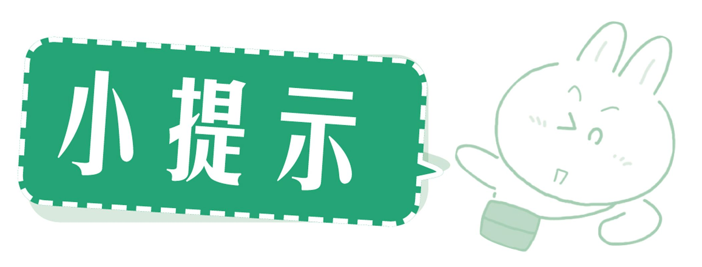
在开始看下一章之前，你最好：
1 复习本章所有知识点，并熟记“牛主席语录”。
2 完成这一章里Ben给Bob留的作业。
（注：美剧推荐Friends和The Big Bang Theory——总之，最好是与日常生活相关，且每集情节相对独立的。）
3 找一个身边的朋友，把你刚学到的东西教给TA——不许看着书教。
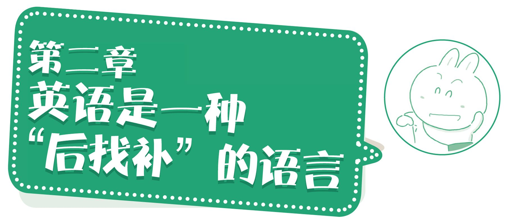
再见到Ben已经是两个星期以后了。这期间虽然没学新方法，但在收集句子上还是颇有心得的。
今天Ben一上来照旧让我做翻译工作，题目是“今天在学校听Ben的课的人真多”。
我跟着感觉走，说道：“Today many people listen Ben's class in the school.”
说完后，我自己都觉得这是句不折不扣的Chinglish——一种说不清楚的“不地道”的感觉。不过，我知道Ben希望我把脑子里想的句子原封不动地说出来——无论对错。这样在听到正确句子时，我才会意识到前后的反差，让自己印象深刻。果然，Ben开始引导我的思路：
“你小学学过‘缩句’吗？”
我不知道这能和小学语文有什么关系，但还是答道：“学过。比如说‘我看了一本金庸的小说’就应该缩成‘我看了小说’。”
“嗯，有这个基础就行。”Ben点头，“现在把刚才那句中文缩一下。”
“今天听课的人真多。”
“还不够‘缩’。”
“人真多？”
“还不够。”
“人多？”
“对！这句话想说的核心意思就是‘人多’。那你用英文怎么表达‘人多’呢？”
“Many people.”
“不，many people不是整句——‘人多’可是个完整句子。”
“那只好说There are many people了。”
“这还差不多。那除了这句的主干部分，其次重要的信息是什么？”
“听Ben的课？”我试探着答道。
“正是。现在如果我告诉你“上某人的课”的套儿是take sb's class……”
“那就说成There are many people take Ben's class.”
“不行。你得先记下一条定理，以后会不断用到——‘一个分句里不能有两个或两个以上的谓语动词。’”
我被这句话说得一阵反胃，心想：上次课不是刚讲过，给语法现象起名字是愚蠢之极的么！
Ben好像能看穿我的心思，笑道：“你小子现在心里肯定在想：既然不让起名字，为什么这条定理里还有这么多专有名词，是不是啊？”不等我回答，他又接着说，“这几个名字只是为了交流方便。比如这里说的‘分句’，就是指不含任何从句的部分。我总不能以后一提到‘分句’，就把它的定义重复一遍吧？注意，我上次强调的重点是‘不要指望从名字本身悟到什么’，而不是让你完全不用名字。”
我很喜欢“你小子”这三个字——它不仅不让我生气，还使我顿生亲切之感。它就像一个信号，明明白白地告诉我——没有什么不能说，没有什么不能问，这使我上课发言越发积极。等写完书一统计，我惊讶地发现自己说的话竟比Ben还多！我想，这就是“老师”和“导师”之间的差距吧。“导师”是那个真正把你“领进门”，促使你自行思考的人。
我接着Ben对分句的定义说：“我能理解‘分句’这个概念。比如I'm Bob and you're Ben就是被and隔开的两个分句。”
“正确。”Ben进一步解释，“不过有些句子看起来好像有两个谓语动词，但实际是因为有的词被省略了。比如This is the book I bought yesterday，实际上是This is the book that I bought yesterday——This is the book和that I bought yesterday分别是两个分句。
“另外，刚才还提及了‘谓语动词’这个概念。什么样的动词才可以当‘谓语动词’呢？以take为例，就是take, takes和took才能当谓语动词，而taking和taken都不行。也就是说答案是动词原形、第三人称单数和过去式。”
这些概念当然不在话下。明确定义后，我突然想到上次课的句子“What are you doing moving my chair?!”，于是问道：“这就是上次的What are you doing后面不能直接加do sth的原因吧？因为are已经是谓语动词了。”
“正是。如果一个分句里已经有了谓语动词，再想往上加动词就要变一下——表示‘主动’的时候变成doing的形式，表示‘被动’时就变成done的形式。因为you是主动move my chair的，所以应该把move变成——”
“moving。”
“再比如我想同时表达I have a book和Ben wrote this book，就要说成：I have a book written by Ben.”
“明白。因为doing表示主动，done表示被动，而book又是被write出来的，所以要用written。”我想了想，接着说，“那我也可以说I have a dog called Ben，对吧？”
“语法很对，句意很扯！”
“哈哈！”
“其实你早就知道done表示被动，只不过你自己不知道自己知道，知道吗？”还没等我从他拗口的表达中清醒过来，他就接着问，“‘我昨天被打了’怎么说？”
“I was beaten yesterday.嗯，还真是用beaten表示被动了。”
“这个定理也适用于doing和done形式的形容词。你学了十几年英语，应该有老师给你讲过bored和boring的区别吧？”
“讲过，这两个词我分得清。”我不愿意放弃这样罕见的答对Ben问题的机会，“bored往往与人有关，而boring一般修饰事物。”
“嗯，你这么说我一点儿都不奇怪——因为我老师以前就是这么讲的，并且我一直笃信这种解释。直到有一天在电影里看到一句话：My uncle is so boring. 如果你说的是对的，那这句话……”
“这……”其实我也见过类似的句子，却从来没有怀疑过以前老师的说法。
“还是用我刚刚讲的定理来想吧。”Ben耐心地引导。
“刚刚的定理……”我紧张地思考着，“boring应该属于doing，表示主动；而bored属于done，表示被动……”我觉得答案似乎离我越来越近了，但总是差那么一点儿。
“看来你还需要外力再辅助一下，就用我的‘官方语言’吧——写下来——doing表示‘主动散发出什么什么的气息’，而done表示‘被怎么样了一下’。现在你用这两句话套一下刚才的boring和bored。”
其实这些所谓的“官方语言”只有令我更加迷惑……不过上一次课的经验告诉我：要像信春哥一样地相信Ben——虽然得不了永生，但能得到真理！我强迫自己套用这两句话，说：“boring表示‘主动散发出无聊的气息’，bored表示‘被无聊了一下’？”到这儿我突然被自己的话说得眼前一亮，“我明白了！你刚才说的My uncle is so boring表示‘我叔叔是个无聊的人’，以至于全身往外狂冒无聊的气息；但如果是My uncle is bored，就表示‘他被无聊了一下’，也就是说‘他感到无聊’。”
“很好！表达方式上的变化也能对理解有帮助，不是吗？那我再问你：The book is boring和The book is bored，哪个对？”
“The book is boring是指‘这本书很无聊’，肯定可以；The book is bored……我觉得不行，因为书是不能‘被无聊’的，也就是说它不可能‘感觉到无聊’。”
“完全正确。再进一步，‘累’怎么说？”
“tired。”
Ben看着我不说话，似乎是在等着我继续。
“噢！！”我只想了一下，就知道Ben在等什么了，“既然有tired，就应该有tiring！我可以说The job is tiring，对不对？！”我为自己“发明”了一个新词而激动异常。
“没错！另外，以-ous结尾的词通常也表示主动。例如：你不能说The effect is desirous (adj. 渴望的)，而要说The effect is desired.最后要注意的是：不一定每个done都能对应一个doing——比如scared的对应词就是scary，而不是scaring。”
“只要这个规律能解决大部分问题就行了，语言总要有特例嘛。”我说。
“嗯，你这种心态很难得啊！现在特例来了——看着啊——What she ought to do is clean the room.”
要多别扭有多别扭……如果这个句子正确，那么“一个分句里不能有两个或两个以上的谓语动词”就不能在所有情况下成立了。
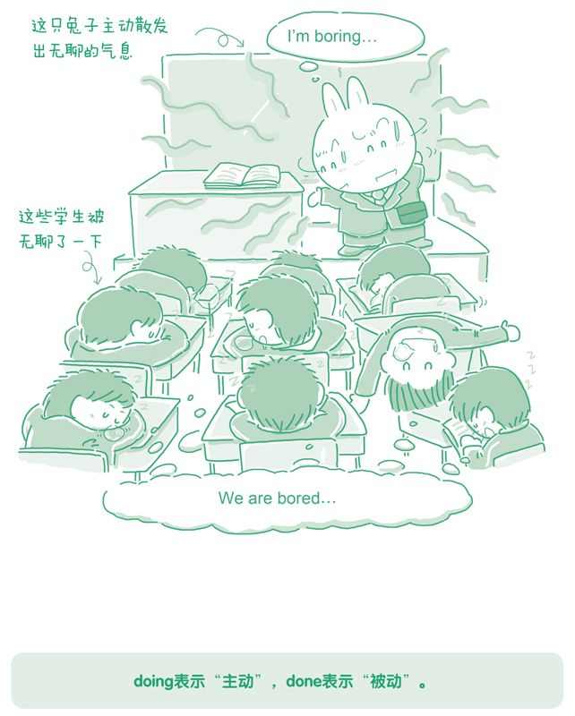
“应该是is to clean the room吧？”我问。但随即想到“Ben说的就是对的”这个流氓定理，又改问道：“是不是is后面省略了to？”
“是，所以加上to句子也不会错。这就是为什么What she does is clean the room是正确的——而且它还可以变成What she did was clean the room，甚至是What she should have done was clean the room.”
“就是说不管be动词前面怎么折腾，后面一律跟动词原形？”我张大了嘴——这实在和自己的语感太过背道而驰。我以前只是在Eminem的Mockingbird里听到过All I ever wanted to do was just make you proud这样的歌词，但当时以为是歌里的语法不规范，所以没细琢磨。
“正是。”Ben说，“这就是英文里经常出现的do+be+ do句式。其中be左边的‘do’表示do的四种形态——也就是do，does，did和done ；而be右边的‘do’表示任意一个动词的原形。
“有的时候你会碰到更诡异的情况——比如Eva laughed and embraced her friends repeatedly, so happy was she about having been selected.这句里的was显然像个多余的谓语。但这句之所以在地球上存在，是因为当为了强调一个副词而将其放在句首时，不但后面的句子有时候要付出‘倒装’的代价，而且在和别的句子组合成一整句人话时，可以认为这个被倒装的句子没有谓语动词。
“倒装的例子很多，比如Mariah Carey和Boyz II Men对唱的One Sweet Day中就有这么一句：Never had I imagined living without your smile.你看，为了强调never，had和I就被调了个个儿——其实本来应该是I had never imagined living without your smile.”
“好难啊……”我一边擦着并没有流出来的汗，一边说。
Ben笑道：“换个你熟悉的例子就不会觉得难了。比如我说I am a man，而你想表达‘Bob也是’，应该用哪句？”
“So is he. ”
“对呀，这不就是副词在前面的倒装么。你可能用多了这样的句子，都意识不到so是个副词了。so在英英词典里的其中一个释义是‘also’，所以So am I其实就是在表达I also am.而刚才咱们说像So am I这样的句子在和别的句子组合成一整句人话时，可以认为am不是个谓语动词——这就是为什么I am a man, so is Bob中间可以是个逗号。这种表达方式属于‘副词倒装’的例子之一，实在算不上什么很特殊的句型。
“当然了，就算哪天真的碰到了英语中的特例，也一定要保持良好的心态。对待任何一门语言都一样，你只能要求自己学过的语法规律适用于‘大部分’句子，而不是‘所有’。这个道理也正好回答了你上次邮件里的问题——看美剧时，有好多单词即使查了词典也搞不懂该怎么办。”
“……你是说，只要把‘大部分’搞懂就行了？”
“可不是吗，谁让你都懂了！在电影或电视剧中，能看懂的部分已经足够你学了，为什么还要把精力放在自己暂时搞不懂的问题上呢？很多人就是因为这个丧失了信心，认为看电影学英语太难，最后索性不学了。”
是啊！以前老师总是教育我们：学知识一定要避免“不求甚解”。这种追求完美的心态让很多人觉得又累又无聊，最终导致完全放弃。再看看我，现在连英语的人话都还说不利落，居然还在为自己看不懂一些连查词典都无法解决的部分而烦恼！这就好像我在不会加减法的情况下，就开始抱怨自己看不懂微积分一样——这不是太缺心眼儿了么？我又有什么资格认为自己可以把每句话、每个词都弄懂呢？反观自己学习母语的过程，我也从来没有强求过自己精通每一个词——几乎所有人在母语学习上都是“不求甚解”的，可最后大家说得可都不错。
我完全认同Ben的观点，可还是有个疑问：“万一我搞不懂的部分恰巧又很重要、很常用，怎么办？按你的思路，我会错误地把它放过去。”
Ben笑了，说：“如果真的很常用，那你肯定能碰到不止一次两次。就算第一次没明白，下次再见的时候，你总能意识到自己见过吧？当你发现自己见过很多次的东西居然不会，你会怎么做呢？”
“那我拼了老命也要查清楚，实在不行就揪着老师问！”我目光坚定地看着Ben，好像下一步就要抢上去揪住他一样。
Ben笑道：“是啊，当你发现了一个知识点的重要性，自然而然地就会采取相应的‘暴力手段’去应对。所以永远不要担心自己会遗漏什么——把能学会的学会就足够了！就好像我总是建议我的学生，不要看到什么词都背，而是要先从常用词开始记起。”
“可是‘常用词’这个概念本身就很抽象啊，我怎么能知道哪个常用？”
“不知道？那我问你，如果你在Friends的第一季第三集里看到一个词，而它在后面九季里都没再出现过，你认为它常用吗？”
“不常用。如果常用的话应该会在美国人的生活中反复出现才对。”
“好，我再问你：你会忘掉he这个词吗？当初学he的时候你有没有刻意去背它？”
“没有。用的次数太多，以至于忘掉比记下来还难。”
“这就对了。其实你第一次见到he的时候，是肯定要查的；等到第二次见，有可能你还是记不住，又查了一遍；第三次见，又不认识，就再查……可以肯定的是，总有一次你是不需要再查的。况且，如果很多次见到同一个词还不认识的话，你的脸估计也就红了，于是这一次你会更集中精力记下它的意思。这，就是人类最正常的——也是最高效的——背单词方法。或者不能叫‘背单词’，应该叫‘混单词’！可以回想一下，你的母语就是这么混出来的。”
混单词？Ben提出的概念总是这么新颖。我突然问道，“这应该又是你的‘牛主席语录’了吧？”
“正是！写上吧：单词是混出来的，不是背出来的。”
“Ben，同样的问题让你一分析就特别透彻！我以前一遇到背过但是没记住的单词就自责——甚至自卑，认为是记忆力差的缘故。其实除了千年一遇的天才之外，把每个单词都背一遍就记住是不可能的。现在想想，这种自责确实打击了我的自信心。”
“所以说啊，学英语，就要有‘追求不完美’的心态——当然这也是一句‘牛主席语录’。就像你说的，如果连不能背一遍就记住单词都要自卑，那无异于要求自己做个‘完人’。哈佛大学‘幸福’课的教授Talben Shahar有一句话说得很好——Allow yourself to be human.你要是不把自己当人看，不能接受自己的不完美，那么彻底的崩溃和放弃也就是个时间问题。”
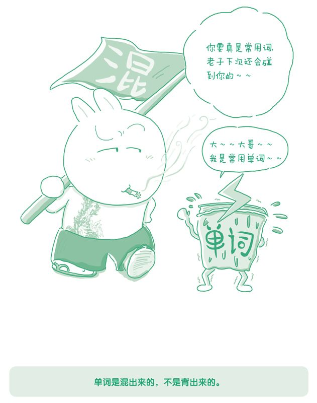
“追求不完美……”我默默地念着“语录”。这是句如此经典的话，却又和我以前受到的教育如此相悖。我微笑着看着Ben，大脑里在思考怎么出其不意地把他关起来——将来给我儿子当家教。
“咱们扯远了啊……”Ben把我从意淫中拉了回来，说，“刚才在讨论doing表示主动，done表示被动的事。还记得最开始我让你造的句子吧？”
我看了一眼笔记，说：“‘今天在学校听Ben的课的人真多。’现在翻译到There are many people taking Ben's class了。”
“好，‘人多’和‘上Ben的课’已经说完了，再其次重要的信息是什么？”
“‘在学校’，所以加in the school；然后是‘今天’——today。合起来就是There are many people taking Ben's class in the school today.”
“嗯，这么说才算真正适用于人类交流了——还记得你一开始造的句子吗？”
“呵呵，居然想不起来了。好像我造的句子是直接用today打头的吧？还是现在这个像那么回事！”
“那当然。你在新造的句子上画几条竖线。第一条在people后面，第二条在class后面——”
我立刻领会了Ben的意思，接着他的话说：“第三条在school后面，把in the school与today分开。”
这样，我笔记本上的句子就被分成了四段：There are many people | taking Ben's class | in the school | today.
“你发现没有，”Ben指着我的笔记说，“每一条竖线前面都是一个完整的句子。”
我点了点头，说：“是这样，there are many people本身就是一个完整的句子，后面的部分好像都是用来补充的。”
“是啊。而且你‘硬翻’这个句子的话，就成了‘有很多人、上Ben的课、在学校里、今天’。”
“正好和中文的语序相反。”
“这就是我们今天的主题了——请记‘牛主席语录’：英语是一种‘后找补’的语言。它总是以最快的速度形成一句‘人话’，然后用以下六种形式‘找补（zhǎobu，第二个字为轻声——作者注）’……”
如果说Ben的前几条语录都是简单且深刻的话，那这一条简直就是“恶俗且深刻”——把我听得笑不可仰！据我所知，“找补”二字只存在于北京话里。为了保证读者和我的理解同步，我准备利用英语课上特常见的“情景教学法”解释一下“找补”——这个只有Ben才会去用的“专有名词”：
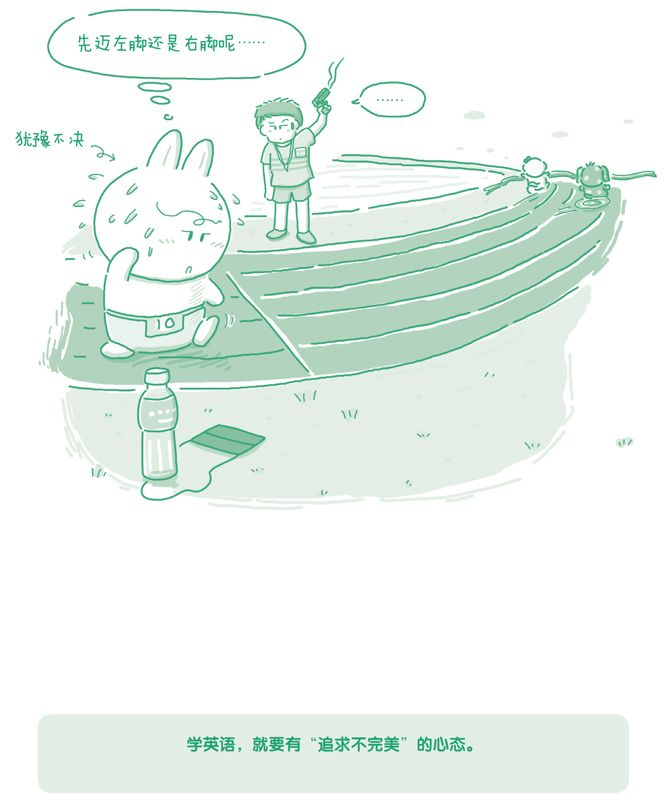
场景一：夫妻俩正在吃饭
女：你吃了几个饺子？
男：15个吧。
女：饱了吗？
男：没有。
女：我这儿还剩了几个。要不然你再找补俩？
在这个场景中，“找补”可以理解为“少量补充”。
场景二：某男在和他的女友聊天
男：宝贝儿，你最近又胖了！
女：……（不说话，怒气四溢！）
男：（一看对方脸色不对）其实、其实胖点儿好……女人就要丰满一些，我就喜欢丰满的……
女：行啦，甭找补啦！
在这个场景里，“找补”有“弥补”的含义。
Ben接着说：“英语中第一种‘找补’的方式就是像taking Ben's class这样的，可以总结为doing和done，当然还得加上个to do，以后咱们会讲到to do和doing在语法位置上等同的问题。比如咱们第一次课说的I want you to go to sleep也可以说成I want you going to sleep.
“第二种是像in the school这样的。这里面in是什么词？”
“介词。那第二种‘找补’方式就应该是‘介词短语’了吧？”
“对。这里要注意区分一些‘假的’介词短语。比如put on some clothes中的on some clothes就属于这种类型——因为put的作用对象实际上是some clothes，而on则是单独的‘找补’部分。另外，从这个例子也可以看出，单个介词本身也可以用来‘找补’。还有的时候介词短语是‘隐性’的，比如在I'll buy you a hat中，you实际上是‘找补’的部分，因为这句就等于是I'll buy a hat for you.”
我点头，继续说：“第三种应该是针对today这样的词，也就是副词。”
“很好，那什么叫‘副词’？”
这个我还是知道的：“副词修饰动词，比如He usually comes here；也修饰形容词，比如very good；还可能修饰整个句子，比如Fortunately, she is still alive.”
“看来你对副词修饰的对象搞得很清楚。不过，我还是要提醒你一下刚才的定理：把一个句子‘找补’的部分去掉后，这句应该还是‘人话’。由于副词也是‘找补’的一种，所以把一句话的副词去掉，这句话在语法上应该还是正确的。”
“为什么要特别注意这点呢？”我认为自己刚才已经把副词解释得很清楚了。
“那你告诉我，‘我喜欢这儿’怎么说。”
“I like here.”我毫不犹豫。
“确定吗？”
“当然确定了！”我不想在这么简单的句子上都失去自信。
“好吧，那我们用刚才的小规则检验一下——这句里哪个词是副词？”
我被Ben问得心里有点没底——I和like显然都不是副词，难道Ben指的是here？虽然我用过很多次here，但并不确定它的词性。
Ben似乎看出了我的疑惑。他索性把身边的笔记本打开，启动了一个电子词典，并当场查了here——还真是个副词。
“按照你讲的规则——副词去掉后还是一句人话。可是一个句子里不能光有I like啊？难道今天又让我碰上一个特例？”
“不是特例，而是你的句子造错了！应该是I like it here.”Ben不顾我“活见鬼”的表情，继续说，“我第一次在电影里看到这个句子也很惊讶，以为字幕是错的——你也知道，国内的字幕组里都是无名英雄，不拿工资，水平难免良莠不齐。我甚至还看到过这样的情况：一男一女对话。男的说：Are you kidding?女的说：No, I'm serious!中文字幕写的是：‘你是凯汀吗？’‘不，我是塞尔瑞丝！’所以，我当时怀疑I like it here也错了，但后来认真求证后才发现事实并非如此。不过，这句你造错了也不用自责，因为这是连很多英语老师都会说错的句子。”
Ben的这种说法我很认同，因为我明确地知道自己以前的老师就是这么教的。
“那以前老师到底还讲错了多少东西啊？”我开始担心。
“普遍讲错的有很多，”Ben无奈地笑了一下，“比如too ... to ...的句式。”
“不是那个‘太怎么样……以至于不能怎么样’吗？有什么不对了？”
“真的没觉出来吗？试试这个例子——比如你今年13岁，却和一个女孩儿生了宝宝，于是你成了别人眼中过于年轻的爸爸。这时候我可以说You are too young to have a child，对吧？如果按你那种翻译方法，这句话成什么了？”
“你太年轻了，以至于不能有个孩子……”我隐约意识到了这种翻法禁不住推敲，说话声都小了。
Ben笑着问道：“你年轻，不等于患了不孕不育症吧？你是‘不能’有孩子吗？再举个更有感觉的例子——比如我才12岁就自己挣钱买了个BMW，你看到了会怎么说？”
“You are too young to own a BMW.翻译过来是‘你太年轻了，以至于不能有辆宝马’……噢！”我终于意识到了这种翻法有多么可笑！
“其实正确的含义是：‘对于拥有宝马这件事来说，你太年轻了。’”
“对对对！”我点头，并感叹道，“以前的老师怎么会犯这么明显的错误！”
“我们的教材基本上是全国统一的，所以我的老师犯的错误，你的老师也很可能会犯——这很正常，又有哪种教材能做到完美无缺呢？”
Ben接着说：“我希望你能有更多独立思考的能力——怀疑之前所学，突破传统习惯，更重要的是能忍受自己与别人用不同的方式思考。我曾经有很多学生，听了我的讲座茅塞顿开，课后甚至在男厕所里激动地握着我的手说那场讲座是‘改变人生的一课’，但回去以后就拿一本语法书做选择题，并且认真地将每个语法现象的名字小心翼翼地背下来，搞得我哭笑不得。他们就是难以超越自我的一群人，太习惯用周围人都在使用的方法学习了。哪怕与别人有一点点不同——哪怕这种不同还是正面的——他们都感到极度恐惧。更重要的是，我希望你能够‘思维重启’，不要去后悔之前所犯的错误——更不要去后悔之前别人犯的错误。时光不能倒流，你现在离最正确的方法越来越近，已经很幸运了。”
Ben的话让我眼前骤然一片光明！我很认真地点了点头，说：“Ben，我一定会像你说的那样‘思维重启’的！我们继续吧！”
Ben看到我理解了他的意图，也很高兴，接着讲道：“第四种‘找补’方式是从句，这个不用我说了吧？”
“嗯，这种情况很常见。比如I was a teacher when I was twenty years old.”
“对。第五种是形容词——”
“形容词也能用来‘找补’？”我在大脑中飞速搜索着例子。
“这种情况比前四种要少一些——比如She came home angry.”
“还真是。She came home就已经是个完整的句子了，所以angry可以算做‘找补’的部分。对了，I should study something new应该也算用形容词‘找补’，因为它去掉new也说得通。”
“第六种是名词或代词——之所以把这两种词放在一起，是因为反正代词也要指代一个名词，因此也就相当于是名词了。比如在I can totally handle this myself中，myself这个代词就是‘找补’的部分。花木兰荣归故里后，我们可以说She came back home a hero.再举个例子——”Ben拍拍自己的胸脯，“You are learning English from Ben, an amazing teacher!”
虽然我对Ben的句子没有意见，但还是觉得这种赞美之词应该从我嘴里说出来才合适。
我接着他的句子说：“an amazing teacher是‘找补’的部分，其实也就是传说中的‘同位语’了。”
Ben点头道：“所以说，同位语其实只是‘名词或代词找补法’中的一部分。再举个例子——Bob, how long do you study English every day?”Ben突然用英语问我。
“I do it， like， five hours a day.”我很流利地答道。说完后，我突然发现这是自己上次做作业时从电影里找的原句，不禁暗暗得意了一下。如果在以前，我肯定只能老老实实地说I study English five hours every day.至于那个地道的副词like，是打死也用不出来的。
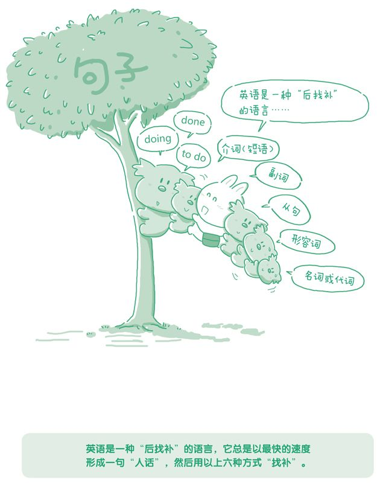
我现在已经越来越能体会出用电影学英语的好处了。首先，好片子的情节能促使你学得更投入；更重要的是，它可以被无限回放。比如遇到一个经典句子，如果是跟老外学，你让他重复两遍他就不乐意了；但这个叫Windows Media Player的同志却永远不会嫌你烦，就算你让它把相同的内容读一千遍，它也毫无怨言——而且还不收课时费。其实就算它真有一天有怨言又能怎么样？老子删了你！
单纯的音频材料跟电影比也是天壤之别——谁是“天”谁是“壤”也就不用我说了。只听音频材料学英语，就相当于假设自己是个美国盲人——而且还是天生的——整天闭着眼睛，痛苦地去猜说话者的表情和所处的环境；而看电影时，你根本就不用挖空心思去考虑这些——“语境”是需要你真真切切看到的，而不是用大脑意淫出来的。
Ben接着道：“你刚才说的five hours和a day都属于用名词‘找补’。好！六种‘找补’方式全部说完，以后的运用就靠你不断积累了。不过要注意，有时人会根据自己表达的需要，把本来在后面‘找补’的部分放前面。比如这句：My mother in the eyes of me is the greatest woman in the world.其实‘找补’的本质还是一样的，只不过位置不同而已——它也完全可以说成My mother is the greatest woman in the world in the eyes of me.所以，‘找补’的部分不一定在句子后边。你只需要知道一个事实就行了：把一个句子‘找补’的部分去掉后，这句话应该还是‘人话’，也就是‘语法上正确的句子’。一旦清楚了一般英语句子的架构，你就最好把刚才讲的那六条都忘掉。这样才能说出‘活’的英文。”
Ben的最后一句话让我不由得想到了张三丰教张无忌太极剑，以及风清扬向令狐冲传授独孤九剑的场景——无招胜有招。我想，这里的“无招”，是指真正掌握了一门学问——无论是剑法还是英语——的最基本原理。高手都是殊途同归的，而我，正朝着那个方向大步挺进！如果说，牛顿比别人看得更远是因为他站在了巨人的肩膀上，那我走得更远，纯粹是因为幸运地骑在了“牛背上”——口中还要念念有词地吟诵“牛主席语录”。
我的遐想再次被Ben打断——五个字：“时间到。作业！”
我下意识地拿起笔。
“继续看一集美剧。除了像上次那样要收集30个套儿之外，还要为每种‘找补’方法找十个例句——第五种‘用形容词找补’可以只找一个，因为这种情况比较少见。”
我终于感觉到了作业量的庞大，因为它比第一次还要多出很多内容。但Ben的课就是这样——越学就越能心甘情愿地完成作业。这就好像跟着一个前程远大又懂得分享的老板，干得越多越觉得爽。
回家路上的一个小时里，我的大脑没有一刻空闲。我甚至不用看笔记，就能回想起Ben说的要点，并且还能不时想通一些他上课都没提到过的知识点，这令我兴奋异常。这种感觉很像金庸小说中的内功达人——内力像水银一样遍布全身，随意而动。
又过了几天看美剧学英语的日子，我给Ben发了邮件。
最牛的Ben老师：
你好！首先再次表达对你的感谢！每次听你的课，我不但学到了很多以前想都没想过的英语知识，还能得到很多英语以外的重要的东西。
这是我总结的上节课的要点，请指正：
一、 一个分句里不能有两个或两个以上的谓语动词
我对照自己收集的例句，发现所谓的“谓语动词”是指在一个分句里看到的第一个动词。有的时候一些固定的套儿会有两个动词原形出现，比如我上次作业里解出来的have sb do sth ——原句是I had my wife do this for me.这里显然had是谓语动词，do不是。
对于一个动词来说，只有do, does和did三种形式可以做谓语动词。所以如果一个分句中已经有了一个谓语动词，那么再想“找补”的话就要把动词变成doing （表示主动） 或done （表示被动） 的形式。比如第一节课说的What are you doing moving my chair?!中的moving就表示主动。
二、 形容词也分主动和被动
比如interesting就可以理解成表示“主动散发出有趣的气息”，interested可以理解成表示“被有趣了一下”。用你的“官方语言”解释主动和被动，就是doing表示“主动散发出什么什么的气息”（即令他人感觉到什么什么）；而done表示“被怎么样了一下”（即被周围的人或事物弄得产生了什么感觉）。另外，以-ous结尾的词也常表示主动——例如desirous。
三、do+be+do句式
这个句式有以下特点：
1 左边的do表示do的四种形态（do，does，did和done）。
2 右边的do表示任意一个动词的原形。
3 右边的do和中间的be之间省略了to。
例句如下：
• What she ought to do is clean the room.
• What she does is clean the room.
• What she did was clean the room.
• What she should have done was clean the room.
四、so打头的倒装句不占用谓语动词的名额
例句如下：
• Eva laughed and embraced her friends repeatedly, so happy was she about having been selected.
• There is no sign that the public is becoming impatient, so convinced are people of the virtues of recycling.
五、 英语是一种“后找补”的语言
根据“找补理论”，我发现以前学的be interested in其实不是一个整体——be interested是一部分，而in sth则是用介词短语“找补”的部分。还有以前老师特别爱强调的be busy doing其实也是两部分——比如在I'm busy talking to her中，I'm busy本来就是一个完整的句子。因为talk是I主动发出的动作，所以talk不变成doing的形式才怪！就算把busy变成别的形容词，后面也一样要加doing。
也就是说，以前被如此强调的be interested in和be busy doing等重点，只不过是“找补理论”中一个小得不能再小的例子而已……难怪我总是觉得语法深不可测，信息量太大，原来是因为之前的语法教学总结规律不够彻底，思考重心大有问题，以至于我总在可怜兮兮地背一些小例子，并且误以为这些就是终极的语法知识。
再有，“找补理论”可以用来解释动词的“及物”和“不及物”的属性。所谓“不及物”，就是动词后面直接跟了“找补”的部分（当然，后面什么都没有也可以）。比如talk to her中，to her是找补的部分，所以talk的这种用法肯定“不及物”；再比如She kissed me中，kiss后面直接跟了me，所以在这里kiss是“及物”的。如果一个动词后面既能直接跟找补部分，又能直接跟个名词，那说明它同时具备“及物”和“不及物”的属性。
六、今天学的“牛主席语录”
1 单词是混出来的，不是背出来的。
2 学英语，就要有“追求不完美”的心态。
3 英语是一种“后找补”的语言。它总是以最快的速度形成一句“人话”，然后用以下六种形式“找补”：
1) doing，done和to do
2) 介词（短语）
3) 副词
把一个分句里的副词去掉，这个句子还应该能说通，比如I like it here这样血的教训。我发现这个定理相当有用！我以前上学时听老师说，never后面应该加过去时或完成时。但听完这次课我就开始怀疑了——never不就是个普通副词吗，为什么后面跟的时态会有限制呢？果然，我在Friends的第一季第一集里就发现了反例——She never calls me.把这句的never去掉后，She calls me仍然是个完整句子。
4) 从句
5) 形容词
6) 名词或代词
P.S. 最近看美剧的时候发现，美国人总爱说wanna这个词。我在网上查了一下——wanna=want to，在口语里人们常常会用wanna，但在书面语里就只能用后者了。相似的还有gonna=going to，gotta=got to，kinda=kind of，outta=out of。为了巩固理解，我分别造了句：
• I wanna kiss you.
• I'm gonna go to America tomorrow.
• I gotta take care of my baby.
• She is kinda busy right now.
• My car was outta control.
祝你诸事顺心&新年快乐！
以上
Bob
2011-12-31
在开始看下一章之前，你最好：
1 复习本章所有知识点，并熟记“牛主席语录”。
2 完成这一章里Ben给Bob留的作业。
（注：这次要用“追求不完美”的心态去看美剧——碰到查了也不懂的词或句子，直接无视就好。要集中有限的精力，把能学会的先学会。）
3 找一个身边的朋友，把你刚学到的东西教给TA——不许看着书教。
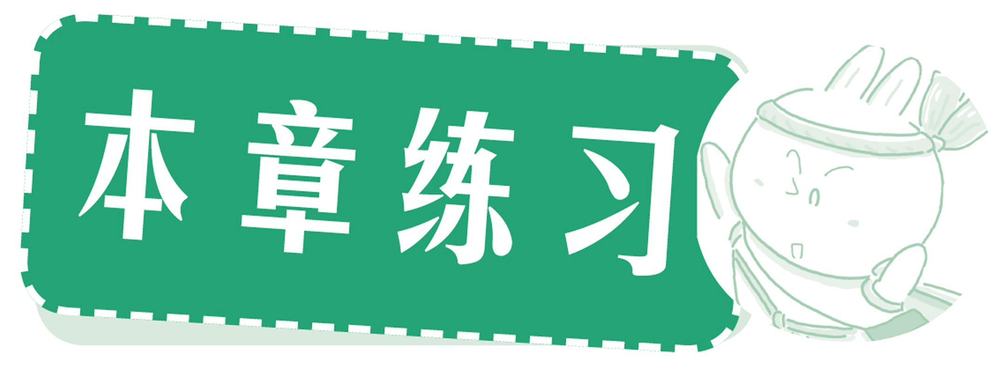
1. do+be+do句式[1]
例句
• What we ought to do first is tell her.
• You can't save the world. All you can do is try.
• All I did was suggest that she lend him no more money.
• What we ought to be doing is enforce the laws on the books.
• One thing our brain does very well is separate signal from noise.
练习
• What we ought to do first __________ her.
• You can't save the world. All you can do __________.
• All I did __________ that she lend him no more money.
• What we ought to be doing __________ the laws on the books.
• One thing our brain does very well __________ signal from noise.
2. 六种“找补”法
1）doing，done和to do
例句
• He was nothing compared to you.
• We're done talking.
• Do you have any muff ins left?
• I remember people telling me about that.
• —Do you wanna sit?
• —No. Please. I spent most of mid-morning trying to stand up.
练习
• He was nothing __________ to you.
• We're done __________.
• Do you have any muff ins __________?
• I remember people __________ me about that.
• —Do you wanna sit?
• —No. Please. I spent most of mid-morning __________ to stand up.
2） 介词（短语）
例句
• A bird landed on the car from above.
• Dan was heading toward the door.
• He starts spreading envelopes among them.
• I have never made coffee before in my entire life.
• Rachel's credit cards are spread out on the table along with a pair of scissors.
练习
• A bird landed on the car __________.
• Dan was heading __________ the door.
• He starts spreading envelopes __________ them.
• I have never made coffee before __________ my entire life.
• Rachel's credit cards are spread out __________ the table __________ a pair of scissors.
3）副词
例句
• I like it here.
• She never calls me.
• She will be here soon.
• She realizes that her deed made her happy, and therefore it's selfish.
• I know it's not exactly ethical but I sent him a little bribe to tip the scales in my direction.
练习
• I like it __________.
• She __________ calls me.
• She will be here __________.
• She realizes that her deed made her happy, and __________ it's self ish.
• I know it's not __________ ethical but I sent him a little bribe to tip the scales in my direction.
4）从句
例句
• I hate it when she is right.
• I'm only staying here until my apartment gets fixed.
• Amy is reading at the kitchen table as there is a knock on the door.
• Any of us who enjoy movies are curious about the content of the latest f ilms.
• Two nurses are standing next to a bed with a man whose face is completely covered in bandages.
练习
• I hate it __________ she is right.
• I'm only staying here __________ my apartment gets fixed.
• Amy is reading at the kitchen table __________ there is a knock on the door.
• Any of us __________ enjoy movies are curious about the content of the latest f ilms.
• Two nurses are standing next to a bed with a man __________ face is completely covered in bandages.
5）形容词
例句
• She came home that night furious.
• He gave me a bag full of money.
• People happy in Japan will be less happy in Australia.
• Mary came home tired and exhausted.
• I think you should consider something a little less risky.
练习
• She came home that night __________.
• He gave me a bag __________ of money.
• People __________ in Japan will be less happy in Australia.
• Mary came home __________ and __________.
• I think you should consider something __________.
6）名词或代词
例句
• Things were fine the way they were!
• I've never felt about anyone the way Ross felt about you.
• I was thinking of you the whole time.
• I work seven days a week fourteen hours a day.
• Let's get on the bus one by one.
练习
• Things were fine __________!
• I've never felt about anyone __________ about you.
• I was thinking of you __________.
• I work __________.
• Let's get on the bus __________.
[1] 练习的形式是先熟读例句，再按照例句原样完成下面的填空练习，看自己是不是掌握了。
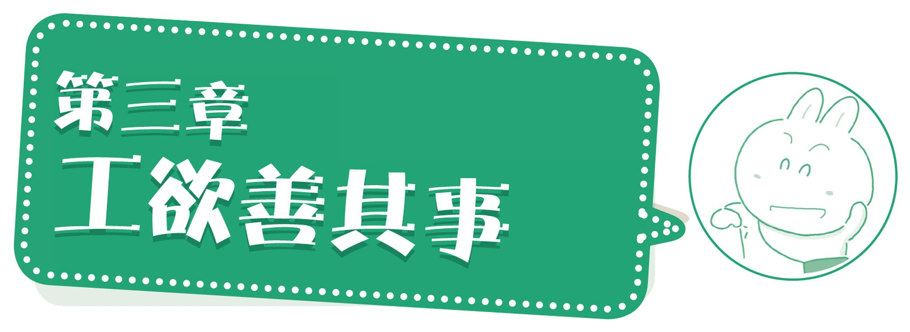
转眼间已到了2012年，大家都在忙着庆祝新年的到来。而我，即使在元旦那天也仍在学习。不是因为刻苦，而是觉得节日、生日这些所谓“特殊”的日子，和一年里的其他时候也没有什么不同。比起“新年快乐”来，我更愿意“天天快乐”——快乐并不需要非得等到一个官方认可的日子吧！我一直不太理解为什么人一到生日那天就开心。年轻人是这样，老年人也喜欢“办寿”。这到底是为什么？要是小屁孩儿还可以理解，人家图的是生日蛋糕。成人呢？
当我把这些想法告诉Ben时，他一点儿都不觉得奇怪。
“英雄所见略同，我从来都是在节日当天该干吗干吗。而且很多节日也不值得庆祝，比如七夕。”
“七夕怎么了？”关于七夕的典故可以说是脍炙人口。
“牛郎织女的故事中有一段是：牛郎家的老牛是被打下凡间的金牛星，牛郎在老牛的指点下找到了下凡仙女们洗澡游玩的地方，拿起了其中一件红色的衣服。拥有那件衣服的仙女名叫织女。牛郎与织女由此相识，坠入爱河，后生育了一男一女。
“我听到这个故事的第一反应是：牛郎追织女用的这招是不是太流氓了点？假设仙女们都有正常思维，下河洗澡肯定会把脱下来的衣服放在不远处。而牛郎拿衣服的时候肯定没闭眼，要不然他根本分不清哪件是红的——这就意味着他一定看到了七位仙女集体沐浴的壮观景象。偷窥这种事在凡间都犯法，到了天界其罪理应更重。
“当然也千万别以为牛郎一拿衣服，就会导致织女光着屁股亲自过来找他要，因为仙女应该不会只披一件衣服就敢下凡——又不是专门跑人间诱惑别人来了——人家里面应该还穿了好几件呢。就算——我是说就算啊——织女没有穿内衣的好习惯，那她也会选择先在河里潜水，然后求其他的仙女帮她找衣服。到时候一旦发现是牛郎干的，那牛郎还能脱得了一顿揍啊？况且，牛郎是在未经他人允许的情况下拿人家衣服，‘不请自拿’谓之‘偷’。
“我就觉得奇怪——这么一个流氓故事怎么就成了美丽动人的传说了？把这种弱智的小段子讲给自己的宝宝听是为了什么？为了让他长大模仿？据我分析，唯一模仿这个故事的方法，就是化装潜入女更衣室，偷漂亮女孩子的衣服。等人家急得要报警的时候再还给她，以此获得套近乎的机会。这也太不正常了吧！接近漂亮女孩儿的方法有的是，就算是厚着脸皮主动上去跟人家打个招呼留个电话，也比偷衣服容易得多吧？
“所以在我看来，牛郎织女讲的不过就是一个普通男子，在一头被贬下凡界的畜牲的指点下，英勇无畏地耍流氓偷东西，最后居然因此恋爱成功的故事。整个故事极具偶然性，不适合任何年龄层的人模仿。”
听Ben长篇大论地发表看法时，我的嘴型总会不知不觉地变成大写的“O”，然后一直保持到他说完……
我庆祝新年的方式，是跑到外文书店买了一本词典，并且带到Ben那儿去让他签个名——最好再留下几句激动人心的话。一是以后没动力了可以拿出来看看，二是如果将来Ben出了大名，这本书也就值钱了。Ben看了看我的词典说：
“相较于纸质词典，我更希望你能充分利用电子词典和网络资源。你的英文已经有一定基础，所以我推荐使用Collins Cobuild Dictionary和Merriam-Webster的词典，不过你只用后者查发音就行了。”
“我现在用的金山词霸也能查发音。”
“那不行。”Ben摇头道，“虽然很多词典都标榜自己是‘真人发音’，但实际上大多数并不是‘真的’真人发音，而是将真人发的基本音根据每个单词的音标用电脑合成——这就是为什么它们的音频文件那么小。而Merriam-Webster则是真的‘累死’了六个老外，一个词一个词读完的。”
虽然只上过两次课，但我已经完全适应了Ben的夸张——我知道录音的时候肯定没死过人，Ben只是想强调这本词典的发音标准。
“Merriam-Webster和其他词典的不同，通过几个词就能很明显地对比出来。比如important中第一个t的发音，以及Martin里的t，美国人根本就不发出来；再有，vegetable中的第二个e实际上也不发音。电脑合成技术总会有或多或少的缺陷，长期听是对自己发音的不负责任。”
“那我不让它读，只看音标行不行？”
“看音标还不如听合成音呢！比如stand的音标是/stænd/，但实际读出来却近似于/sdænd/。就算你知道两个清辅音碰在一起，第二个要浊化，你也没法解决像recognize这样的词——表面上音标是/ˈrekəgnaɪz/，但实际读起来却像/ˈrekɪgnaɪz/。”
“原来这些词典的质量都不怎么样啊……”
“也不一定是因为质量差。你是中国人，这个字肯定认识吧。”说着，Ben在我的笔记本上写了个“一”字。
“你也不能太瞧不起人啊……”Ben都快把我额头上的黑线问出来了，“这念yī。”
“你确定？那这个呢？”他又写了“一个人”。
“yí个人。”
“这个？”这次写的是“一天”。
“yì天。”
“所以这字实际上有三个音。但你在新华字典里看到过二声和四声的‘一’吗？”
“没见过。”
“我也没见过。所以有些词的正确发音不能在音标里体现。能理解了吧？”
“理解。看来我以后查词只能用Merriam-Webster了。”
“也不能全用Merriam-Webster——一定记住，在你这个阶段，Merriam-Webster最好只用来查发音，因为这是个英英词典。”
“我以前听老师说，学英语最好就是用英英词典啊。”
“那你的老师估计没具体说过是哪本，有些词典不是供初学者使用的。”
“Ben，我不应该算初学者了吧？”
“不算吗？呵呵。我记得你两星期前说Is he her father?还会犹豫吧？”
两个星期前？！我的感觉是：从开始跟Ben学习到现在已经一个多月了！这倒不是说听Ben的课度日如年，而是他所教的东西让我有了本质上的改变。这种巨大变化会使我产生错觉——认为获得这样的进步需要很长时间。我把自己的感觉告诉Ben，没想到他完全忽略了这里面夸他的成分（有可能心里在偷笑吧），认真地解释道：
“你听说过暂时记忆和永久记忆吗？暂时记忆相当于电脑的内存——速度快，但空间小，很难持续保存信息（断电后内存里的数据就全没了）；而永久记忆相当于硬盘——空间大，能永久保存信息，但速度相对来说慢得多。所以当你频繁地接受新事物，并同时思考和创新时，内存很容易就满了。于是你的大脑会自动把溢出来的部分直接忘掉。也就是说，如果你还能清楚地记得前天中午吃的是什么，那基本就可以判断你这几天没怎么正经动过脑子——因为你的大脑是不会傻到把吃饭这么小的事都转化成永久记忆的。所以你感觉‘好像过了一个多月’，正是你勤于思考的结果。我的朋友就经常发现我什么都记不住，其实这只是由于我的思维更新得太快而已。
“既然说到这儿，我还要提醒你：要经常有意识地释放大脑内存，尤其是不需要变为永久记忆的那部分。比如说，你肯定不需要一辈子记住后天要祝一个朋友生日快乐，而这件事又很重要。这时候如果你给他发个定时短信，就不用总把这件事放在‘内存’里了——换句话说，就是‘不用老想着了’。这样，你才有机会最大限度地利用有限的‘内存空间’去想其他更重要的事。”
“你讲的道理我大概明白，但什么叫‘定时短信’？”
“就是事先写好内容，并预设发送时间的短信——比如我朋友收到的生日祝福，甚至可能是我提前一个星期编辑好的。当然，定时短信的意义远不止祝个‘生日快乐’这么简单，因为你甚至能将这种短信发给自己。比如，你大大大大后天上午10：00要去学校取一份超重要的文件，你准备如何提醒自己？把这件事标在日历上？你恐怕未必想得起来每天看日历吧。写张纸贴在墙上的醒目位置？你恐怕看几天也就习惯了吧。就算你聪明到使用了Outlook的时间管理系统，但万一朋友生日那天你有事没开电脑怎么办？这时候，唯一能帮上忙的就是手机了。你用飞信给该去学校那天的自己发一条定时短信（最好给那天的前一天晚上的自己也发一条），等大大大大后天收到它的时候，你第一个反应很可能是——‘哎呀！忘了个干净！’
“这种需要‘在特定时间做特定的事’的记忆，被心理学家称为time-based prospective memory；另一种容易被遗忘的记忆是event-based prospective memory（即通过特定事件——而不是特定时间——触发自己要做的事），比如说你哥们儿请你在去超市的时候顺便给他带双拖鞋回来。要想不遗忘这样的任务，难度会比较大，因为你也不知道自己哪天去超市。这时候凶悍的做法是：估计出最晚去超市的日期，然后给每一天的自己都发一条短信（如果你确定某一天肯定不去，就不用发那天的了）。这种做法相当于把event-based的记忆部分转化成了time-based的记忆，同样达到了‘不用老想着’的目的。
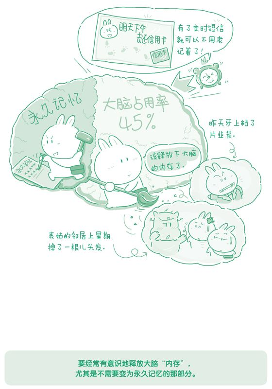
“最重要的是，现在拥有定时短信功能的‘飞信’和‘Google Calendar’还都处于免费阶段。所以，趁他们改变主意之前抓紧时间用吧。”
说完，Ben 打开电脑，给我演示用法。随后，他又用Merriam-Webster's 11th Collegiate Dictionary，Collins Cobuild Dictionary和《美国传统词典》（双解版）查了tired这个单词。
“现在可以看看为什么Merriam-Webster不适合查词义了——这里的释义很不友好，比如你查tired，它会给你解释：
1. drained of strength and energy: fatigued often to the point of exhaustion
2. obviously worn by hard use: run-down
3. trite, hackneyed
“没有例句，没有用法，而且释义里用的词几乎没有一个不比tired本身还难！你想吧，本来要查一个生词，结果词典却像返券一样倒送给你十个生词。你再分别点进这十来个生词，每个词的释义里又分别冒出十个生词——也就是说你点了一辈子，有可能还是不知道你最初要查的词是什么意思。但Collins的词典就很友好。同样是查tired，它的解释是：
If you are tired, you feel that you want to rest or sleep.
• Michael is tired and he has to rest after his long trip.”
我不由感叹道：“看这解释比见亲爹还亲，而且后面还有例句！”
“Collins的好处还远不止于此——它在释义里就直接把套儿给出来了。比如你查approve，解释是：
If you approve of an action, event, or suggestion, you like it or are pleased about it.
• Not everyone approves of the festival...
你看，在这里approve of是突出显示的——直接告诉你以后应该怎么用。”
“确实好使！说实话，我以前从来没见过类似的词典！我之前用的那些都是热衷于对某个单词本身进行解释，误以为把词义描述清楚了就完事大吉了。其实对于英语学习者来说，用法也同样重要！”
“很好！正因为你已经有了套儿的意识，才能认识到Collins的重要性。”Ben点头道。“除了Merriam-Webster和Collins的词典之外，你的第三个必备工具是双解的《美国传统词典》。首先，对于一些专业词汇——例如三聚氰胺——最好还是直接查它的中文意思，因为英英词典里就算有解释你也看不懂。另外，有很多时候你需要查的并不一定是词典里的第一个释义或最常用释义。如果你在碰到一个单词有十几条甚至更多条解释的情况下，还坚持只用英英词典，那估计连自尽的心都有了。所以，这时候最明智的做法是迅速浏览一遍双解词典里所有的中文释义，找出最合理的那条，然后再看一下后面相应的英文解释就行了。而且双解词典连这些英文解释都会翻译一遍，这就更缩小了误解词义的可能性。
“当然，即使有了这三种词典仍然不够，因为你有时还会面对这样的情况：写作的时候想表达‘竟然’，结果一查汉英词典——只有一个actually可供使用。可是你想过没有，真的只有actually才能表达‘竟然’的感觉吗？这时候你需要专门查一个有‘全文检索’功能的词典”说着，Ben又打开了另一个词典，在上面的搜索栏里打了“竟然”二字，随后所有中文翻译里带这个词的句子都被列出来了，其中有一句居然是：
He studied hard only to fail in the exam.
他这么用功，结果竟然考场失利。
我叹服道：“不但没用actually，而且我在句子中甚至找不出一个单词与‘竟然’相对应——我只能说，do sth only to do sth这个套儿里包含‘竟然’的感觉！也只有看到这样的例句，我下次才会把‘我们去她家的时候，她竟然已经不见了’翻译成We went to her house, only to find that she had been gone.”
“所以说，大多数词典根本不知道英语学习者想要什么，以至于只能提供极其有限的功能——尤其是缺少这种‘全文检索’的能力。这也是为什么要用四个词典才能满足我们的需求——大家各有所长嘛！
“嗯，我记住了——用Merriam-Webster查发音，用Collins查单词释义及用法，用《美国传统词典》（双解）查专业词汇和不常用的释义，再用例句词典的‘全文检索’功能翻译中文词。看来‘工欲善其事，必先利其器’这话说得一点都不错啊！这些工具至少能为我节省几年的时间！可是Ben，为什么你不在第一节课就告诉我这些呢？”
Ben没回答我的问题，反问道：“我之前要求你具备什么心态？”
“追求不完美的心态。”
“所以说啊——前两节课正是你理解‘套儿意识’和句子架构的关键时期。那时候就怕你什么都查，把自己搞得没信心。不过现在你的基本思想已经完备，我也就可以毫无顾忌地跟你说工具的事了。”
原来我每一阶段的进展都在Ben的计算之中！对此我既觉得佩服又有点恐惧——我眼前的这个人可以随心所欲地控制我先悟到什么，后懂得什么。我一直以为自己到今天这个水平是勤于思考的结果，没想到在大局上却全是Ben替我想好的。我突然明白了他第一次课为什么让我“只要有一次感觉没效果就立刻叫停”——他有这个把握，他能让我永远不知道下节课会学到什么。这让我很沮丧，因为每一次思想上的涅磐都让我误以为自己已经很接近Ben的水平了，但不久就会发现他在前面的某个地方等着我，对我说：“你终于赶上来了，咱们的路还长着呢！”
我很快就被从遐想中拉了回来——Ben的语速是我见过的人里最快的，他不会给我胡思乱想的时间。我写完书后曾经把其中的一章从头到尾念了一遍，用时37分钟，而那堂课实际上只讲了不到半个小时。我后来还跟Ben讨论过这个问题，他说他的语速算慢的了，建议我去听林伟贤的讲座——那是亚洲第一快嘴。
“词典的事说完了，现在翻译一下这句：‘电脑不但给人们带来了方便，而且使人们学得更多。’”
句子很长，我开始在笔记本上打草稿：“Computer not only bring convenience to people, but also make people learn more.”
据我的经验：凡是他让我造的句子，我在造之前就有把握宣布自己错了——否则他也不会单拿出来讲。不过我很乐意去犯错，因为只有这样才能获得最大的反差，让我有那种醍醐灌顶般的爽的感觉。
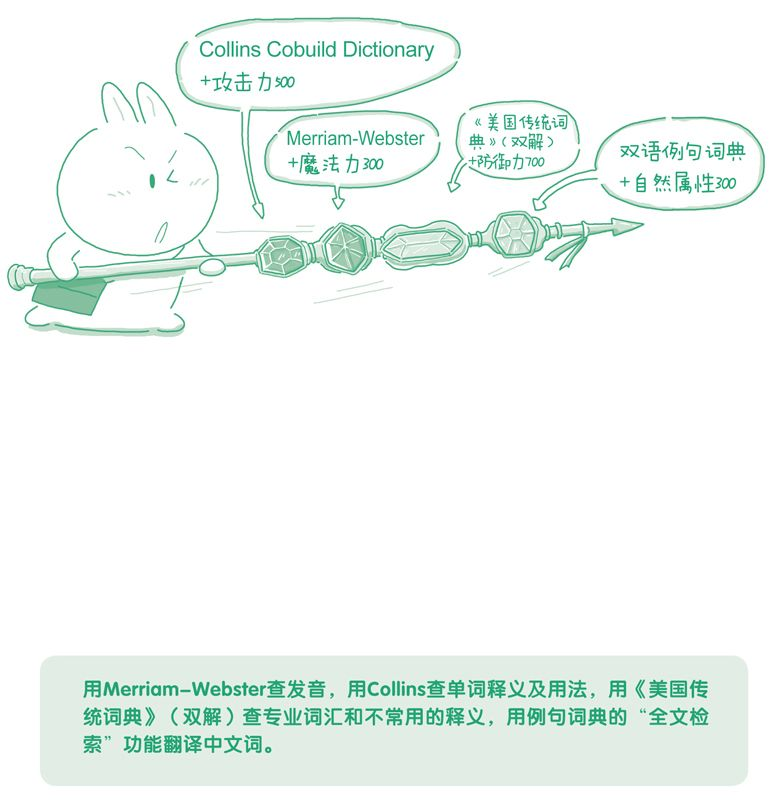
“我很想知道你的句子。”
“嗯，对比一下——Computers have not only brought people convenience, but have also made them learn more.”
Ben的句子把我听得要多别扭有多别扭——不但使用了让我生理上都感到厌倦的“完成时”，而且在我酷爱的not only ... but also ...句型中硬塞了一个have进去！当然，这种别扭又让我隐隐觉得兴奋，因为我知道今天的课将会再次涉及我的薄弱环节！
我将Ben的句子记下来仔细看了一遍，说：“第一个不同是我用了computer，而不是computers。这是泛指吗？”
“你看，这说明你还没有脱离‘用起名字代替思考’的怪圈。叫‘泛指’又能怎么样呢？”Ben摇了摇头，“我们要把精力集中在‘游戏规则’上——而不是‘游戏名称’上。首先，你要记下一个定理，叫‘可数名词不能裸奔’。”
“哈哈！这个定理的名字起得真猥琐！”
“哦，这不是我起的，是我以前上培训班的时候，我的老师起的。我曾经碰到过很多非常优秀的老师，他们的思想和授课风格都多多少少对我有影响。比如今天一上来说的大长句子，就是当年我的老师李笑来讲的。顺便推荐你看看他的一本书，叫《把时间当作朋友》——事先声明啊，我跟他可没有任何利益关系……”Ben想了想，又补充道，“当然他也不屑于跟我有什么利益关系。”
我近乎虔诚地把书名记下来——因为能让Ben佩服的人已经相当于人间极品了。
我接着问：“你刚才说的‘不能裸奔’是指什么呢？”
“所谓‘裸奔’，就是前面什么都没有。一个可数名词——我是指单数——前面一定要有像a, the, 或者this, these, that, those, my, our, your, his, her, its, their, sb's这样的冠词或代词……”
“那为什么不用the computer，而要用computers？”
Ben反问道：“那你以前学过the表示特指吗？”
“学倒是学过，但说实话，从来没真正明白过。”说到这儿我突然发现，自己在小学、初中、高中甚至大学都在不断地和同学们一起学习“a, the”这个诡异的知识点。
“其实‘特指’很简单——就是你明确知道自己在说哪一个的时候，就可以特指了。比如去商店买东西，要说I need a hat. 这里用a是因为你也不知道售货员会给你拿哪顶，你怎么特指？等售货员给你拿了一顶，你再提它就可以开始用the hat了，因为已经知道是哪个了。”
“噢！也就是说，全世界并不是只有某台特定的computer给我们带来了方便，而是很多很多computers，所以句子里才应该加s？”
“正确。你看，a和the的用法没有想象中那么麻烦，对不对？另外，你以前可能听老师说过：独一无二的事物之前一定要加the。确实有一些是这样的，例如：the sun——太阳就一个，所以我们一提‘太阳’俩字，肯定说的就是那个太阳——不特指都不行。不过有个地方得小心——虽然每个人都是独一无二的，但是人名前面基本不加a和the。如果你在我面前说a Ben，那你等于是认为Ben是一个种群，而我只是其中一头而已。”
“哈哈！明白了，人名前面不加a或the。”
“另外再听听这个句子：The rich have benefited much more than the poor.”
“我在电影里见过类似的用法——the rich是代表‘一群富人’吧？”
Ben微笑着看着我不说话。一般他做这个表情，说明我还有什么东西没想到底。这回我只思考了两秒钟，就知道Ben在等待什么了：
“rich可以被替换，变成任意一个形容词——这也算是个小套儿。所以相应地the poor就表示‘穷人们’。又因为the+adj指的是一群人，相当于复数，所以你的句子里the rich后面跟的是have，而不是has。”看到Ben满意地点头，我又笑着说，“我想应该把你直接归入the creative, the cute, the great, the kind, the humorous里面。”
“你分析得很有道理……”Ben一本正经地说（我本以为他至少会谦虚一下），“对了，说了半天可数名词——什么叫可数名词，什么叫不可数名词？”
我虽然明知道这个时候回答“可数名词可以数，不可数名词不能数”是比较愚蠢的，但这确实是我所知的全部。我只好向Ben坦白。
“嗯，你有这想法很正常。不过我问你——会数钱吗？”
“会……可是我知道money不可数。所以可数名词和不可数名词的定义肯定不是我想的那样。”
“确实如此。其实二者之间的本质区别在于：不可数名词无限分割后，部分还能完全代表整体。”
看到我一脸困惑的表情，Ben接着说，“举个具体例子吧。你说一个肯定不可数的名词。”
“water。”
“好，现在你把water拿过来切切切切切切切切切……”Ben边说边比划着动作，“切到还剩一小小小滴水的时候，它叫什么？”
“还叫水。”
“它能代表整体吗？”
“能。”
“但是可数名词就没有这个特性。比如你吧——‘人’肯定是可数的。我也不多切，就从耳朵这儿切你一刀。”说着Ben拿手比了一下（我的耳根竟感到一阵凉意——可能是自己想象得太投入），“然后我左手拿着你的耳朵，右手揪着你，说‘现在有两个Bob’，可以吗？”
“不行，这时候部分就代表不了整体了。其实换句话说，不可数名词的各部分都是同质化的。我试试用这种方式判断一下啊——”由于数学里的“极限”概念学得很扎实，我迅速理解了Ben讲的，“apple可数，因为把苹果切了之后，不知道是剩下苹果皮还是苹果核，所以部分代表不了整体；food不可数，因为切完后即使剩一点点那也叫食物——部分能代表整体。”说到这儿，我突然想到了刚才money的例子，问道：“可是，钱如果被切开的话就不能代表整体了啊？你想，如果百元大钞撕得就剩一个小角儿，还怎么花？”
“哈哈！你提的问题非常好。不过注意，人类创造money这个词是在纸币出现之前。那时候用什么作一般等价物？”
“贵金属。比如中国用银子……”一提到“银子”，我脑子里立刻冒出了它的图像。这让我顿时醒悟——“如果把银子切切切切切，最后哪怕只剩个银渣儿，它仍然叫money——部分能代表整体。”
“明白得很快嘛！再考考你，瀑布能数吗？”
“不能数吧应该……”我开始在脑子里疯狂地切割瀑布，“不对！应该是可数的。因为瀑布不光由水组成，还有地形之类的因素。”
“很好！问题又来了——刚才说food不可数，可是你见过foods吗？”
Ben一个接一个的问题让我几乎喘不过气来——它们每一个都要迫使我思考，每一个都能让我知识上的漏洞暴露无遗。我努力定了定神，说：“你这么一提，好像还真见过……”
“看个例句：Foods like breads and cakes are cooked in an oven.”
如果不是因为我已经开始具备了“追求不完美”的心态，这个句子恐怕会让我直接崩溃！不但food加了s，连bread也加——bread一直是不可数的啊！
我试探着问道：“food加s是不是为了说明有很多种food？”
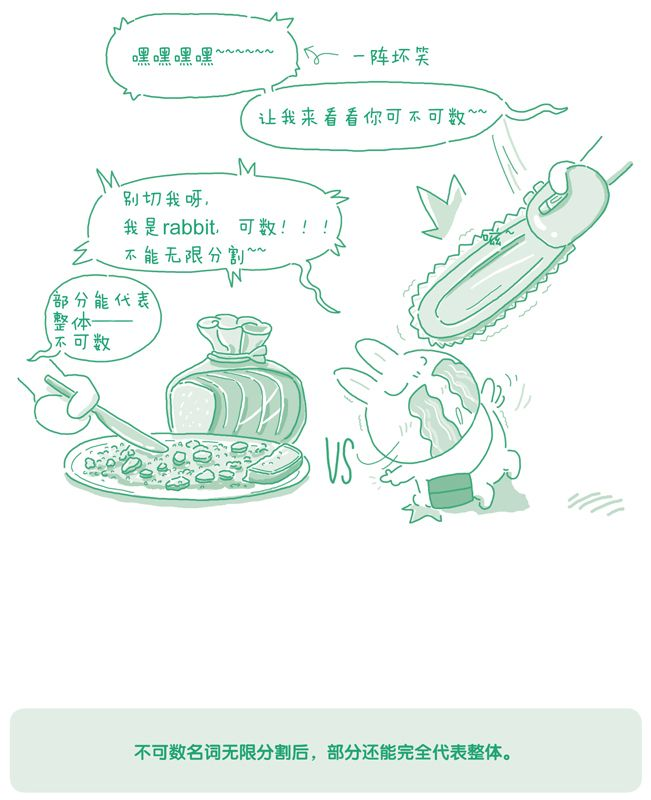
“语感不错！”Ben对我自己能想到这一点很高兴，“再把你的结论细化一些。首先，可数名词的定义是什么？”
“无限分割后，部分无法代表整体。”
“假设我现在有两盘food，一盘是鸡丁，另一盘是茄子……”
“明白了！”我打断了Ben的话，“如果把这两盘food切了的话，也不知道最后会剩下哪一盘的一小部分。如果切剩下的是鸡丁，那它就无法代表整体中茄子的那部分！”
Ben再次做微笑状——那是示意我继续说下去了。
“再结合bread加的s推而广之——我想，世界上根本就没有什么真正意义上的不可数名词。只要表示种类，airs, breads和waters都可以说。另外，就算是抽象点的名词应该也能数。比如friendship。如果我和三个人分别建立友情时，就可以说three friendships！”
“相当不错，你是个难得的学生。”Ben也被我突如其来的像打了激素一样的悟性所感染，“以后只要注意有的词单复数长得一样就行，比如deer, fish, sheep, fruit, series……现在再回到刚才那个句子。computers我们已经分析完了，之后还有什么不同呢？”
Ben的思维是如此之跳跃，把我问得一时回不过神来——我感觉最开始那个句子已成为“遥远的过去”。谁让一个computers就蕴含这么多关键的知识点呢！我低头看了一眼笔记本，说：
“第二个不同点是have done——为什么要用完成时呢？”
Ben没有答我的问题，反问道：“我原文想表达什么？是不是电脑‘已经’给人们带来了方便呢？”
“哦，你是说这时候用完成时表达感情更准确。”随后，我开始问自己最想问的部分，“那还有not only ... but also ...的用法呢？用have把but和also切开太别扭了！”我毫不掩饰自己的想法。
“呵呵，切开已经很别扭了是不是？其实要不是为了照顾你的情绪，我连also都不会加。比如这句——The dog not only barked at him, but bit him. 在英文文章里，有很多not only的句型后面都只加了一个光秃秃的but。”
“这么说，not only ... but also ... 根本就不是固定搭配？”这对于“科班出身”的我来说有些不可思议。
“总之没有你想象得那么固定。最可笑的是，这个套儿几乎已经成为英语考试作文部分里最流行的一个了。并不是说它不能用，而是它的流行程度让人觉得可笑。”
“呵呵，我记得上学那会儿，在作文里如果不写not only ... but also ...，就好像得不了高分似的。”
“好，现在看看not only ... but also ... 里哪些是副词？”
经过上节课的训练，我已能很轻松地判断：
“除了but都是副词。”我想了想，又说，“副词的定义是‘去掉还是一个完整句子’，所以also可以去掉，也可以换成别的副词。”
“嗯，根据定义你就再也不会把but also看成一个不可分割的整体了。事实上but在表达两个分句的逻辑关系时，肯定要放最前面；但also就不一定了。你观察一下它和only的位置，都分别用来修饰什么词？”
我又低头看了看例句，说：“only修饰bring；also修饰make——也就是说都在修饰后面紧挨着的那个动词。”
“正确！副词用来修饰谁，就最好紧挨着放在谁的前面——要不然怎么知道是修饰它的呢？再给你看两句话：一句是She is really beautiful，另一句是She really is beautiful.你觉得它们分别表达什么感情？”
我努力应用Ben刚讲的定理：
“第一句话really修饰的是beautiful，所以意思是‘她是真的漂亮’；而第二句中，really修饰的是is，翻译过来是‘她真的是漂亮’。所以，第一句强调的是她的漂亮程度——是‘非常’之漂亮；第二句强调的是——‘她漂亮’这件事是真的。如果我跟一个同事说我的女朋友是个美女，他不信，我肯定会用第二句She really is beautiful；而如果我只是单纯地想表达‘她太漂亮了！’，肯定会用第一句。”
“分析得很对。现在知道为什么你觉得but和also的位置别扭了吧？如果你以前一直学的是正确的话，那看到真正地道的句子也就不可能觉得不舒服了。而且，有时候正确的句子也分地道和不地道。比如你第二个分句里用的是people，而我用代词them；比如你写的是bring convenience to us，而我的是bring us convenience。这些说法都对，但千万不要小看其中的区别。举个例子：‘给我买顶帽子’怎么说？”
“Buy a hat for me.”
“再多看看美剧，你会发现99%以上的情况都用Buy me a hat.”
Ben的话提醒了我。
“这几天肯定看到过buy sb sth的套儿，只不过我下意识地认为自己很容易就看懂了，所以就没有模仿这种用法。看来，再小的套儿也不能瞧不起啊！”
“你能说出这句话，说明一只脚已经踏入了普通高手的境界。有很多人误以为，用电影学英语，就是查所有自己不认识的单词，直到全部看懂为止。其实这样做只会打击自信心。而且，有很多东西你就算查了也一样弄不明白——比如一些需要了解美国文化才能看懂的句子。所以，看电影最应该学习的反倒是里面单词全认识，但是自己造不出来的句子。我管这样的句子叫‘荒岛句子’。”
“‘荒岛句子’？”
“对，而且是‘牛主席语录’，记吧——‘荒岛句子’是指：明明每个词都认识，但是就算你被关到荒岛上十年，也想不出应该用这种方式来表达感情的句子。比如buy sb sth对你来说就是。我再问你，I can do a great Bush是什么意思？”
“Bush我知道是前美国总统……是表示你也能当总统吗？”
“不，这句说的是‘我模仿布什很像’。”
“啊！”我张大了嘴，“do sb也是个套儿啊……”
“对啊，而且是美国小屁孩儿都懂的套儿。你看过动画片《功夫熊猫》吧？其中有个情节是熊猫Po请他的五个师兄弟吃面条，席间故意模仿他师傅说话。没想到学得高兴的时候，师傅刚好走到他身后，师兄弟里的猴就一个劲儿地提醒熊猫：
MONKEY: (Whispering) It's Shifu!
PO: Of course it's Shifu, who do you think I'm doing?”
“噢！原来Who do you think I'm doing?表示‘你以为我在模仿谁？’啊！”
“现在你知道看电影的时候应该注意什么了吧？我建议，你每看到一句话，都有意识地问自己：把我关到荒岛上十年，我能不能想到用电影里的方式表达自己的感情。”
“嗯，我记下了！看电影时要注意搜集‘荒岛句子’。”
“好，今天就到这儿。注意，到现在为止，总纲部分已经全部讲完，下次课咱们就可以说说像have done之类的时态了。我们会先把几个最基本的时态搞清楚——也就是现在、过去、将来、完成和进行。一旦这个任务完成，剩下的一切好说。”
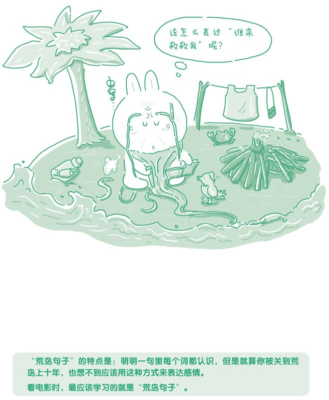
“除了完成时可能有点儿难之外，剩下的对我来说小菜一碟。你直接给我讲稍微复杂点的时态吧？”
“简单？”Ben看了我一眼，笑了，说，“那下次咱可以试试。”
Ben这一眼把我看得很不安——是我低估了这几个小破时态的难度？难道Ben真能在我已经熟悉的知识点上，再讲出什么惊世骇俗的东西？我开始十分期待下一堂课了！
这次Ben留的作业还是看美剧——不过是拿出之前看过的一集，把不懂的地方用今天讲的那些词典查清楚。如果因为弄懂了某个词而喜获了一个新套儿，也要继续“找茬”用套儿。当然，这还不算完——由于下节课要讲时态，所以我还得在电视剧里分别找出五种时态的例子，每种十句。
将课上的知识全部消化后，我再次给Ben发了邮件：
Ben老师：
你好！感激的话说太多你可能也听腻了，所以我直接对本次课进行总结，请指正：
一、要经常有意识地释放大脑内存，尤其是不需要变为永久记忆的部分
要随时释放大脑中无关紧要的信息，这样才能利用有限的内存空间去想其他更重要的事。如果一件事虽然重要，但不用一直记着，就要用定时短信来提醒自己。我已经下载了飞信并测试，定时短信功能确实好用，到该干事的时间短信就自动发过来了。
二、需要用到的词典
用Merriam-Webster查发音，用Collins查单词释义及用法，用《美国传统词典》（双解版）查专业词汇和不常用释义，再用例句词典的“全文检索”功能翻译中文词。
三、可数名词和不可数名词
1 可数名词的单数不能“裸奔”，前面要加像a, the,或者this, these, that, those, my, our, your, his, her, its, their, sb's这样的冠词或代词。
2 不可数名词无限分割后，部分还能完全代表整体。
3 当表示种类时，就不存在真正意义上的不可数名词了。
另外，我还发现了three coffees这种表达方式，它相当于three cups of coffee。其中coffee不可数，但由于省略的原因也加了s。
四、副词用来修饰谁，就最好紧挨着放在谁的前面
我在看片时发现了很好的例子：Friends里有一集Chandler到Ross家，未经允许就乱动屋子里的恐龙模型。Ross指着他说：“You need to not touch any of those.”
这句话直译是“你需要不去碰任何一样东西”，也就是说“一件都不许碰”。设想，如果把not放在前面，说成You don't need to touch any of those，就表示“你不需要碰任何一样东西”——隐含的意思是“你可以碰，但不是必须碰（碰它不是你的义务）。”就因为not挪了位置——从修饰touch变成了修饰need——意思就发生了本质上的变化。所以，副词并非放在什么位置都可以，而是尽量紧挨着放在被修饰对象的前面。
五、看电影时要注意搜集“荒岛句子”
牛主席教导我们说——“荒岛句子”就是明明每个词都认识，但是把你关到荒岛上十年，你也想不出应该用这种方式来表达感情的句子。
再小的套儿也不能瞧不起。看电影最应该学习的恰恰是里面单词全认识，但是造不出来的句子。要养成习惯——每看到一句话，都有意识地问：把自己关到荒岛上十年，能不能想到用电影里的方式表达自己的感情？
今天的大长句Computers have not only brought people convenience, but have also made them learn more证明说英语句子要具备以下意识：复数意识、时态意识、副词的位置意识，以及代词意识——当然最重要的仍是“套儿意识”。
我会用这些意识不断地检查自己写出来或说出来的话。
祝好！
Bob
2012-1-9
在开始看下一章之前，你最好：
1 复习本章所有知识点，并熟记“牛主席语录”。
2 完成这一章里Ben给Bob留的作业。
（注：这回看美剧的时候，每看到一句话，都要有意识地问自己：把我关到荒岛上十年，能不能想到用剧中人的方式表达自己的感情。如果不能，就要把它记下来，解套儿用套儿全来一遍！）
3 找一个身边的朋友，把你刚学到的东西教给TA——不许看着书教。
4 将Collins Cobuild Dictionary，Merriam-Webster's 11th Collegiate Dictionary，《美国传统词典》（双解版）和拥有“全文检索”功能的词典搞到手，并花时间学会如何使用。
注意，花时间学会使用这些词典是绝对值得的。如果你电脑技术尚未达标，可以考虑求助身边任意一位12岁以上、35岁以下、智力正常，且乐于助人（或者只是“乐于助你”）的男性。注意：请教的时间不要与NBA、世界杯等重大赛事冲突。
5 如果你用移动手机，或是Google Calendar，请现在就给自己发一条定时短信，提醒自己未来要做的某件事，并在今后的生活中养成习惯，多利用这项功能进行自我时间管理。
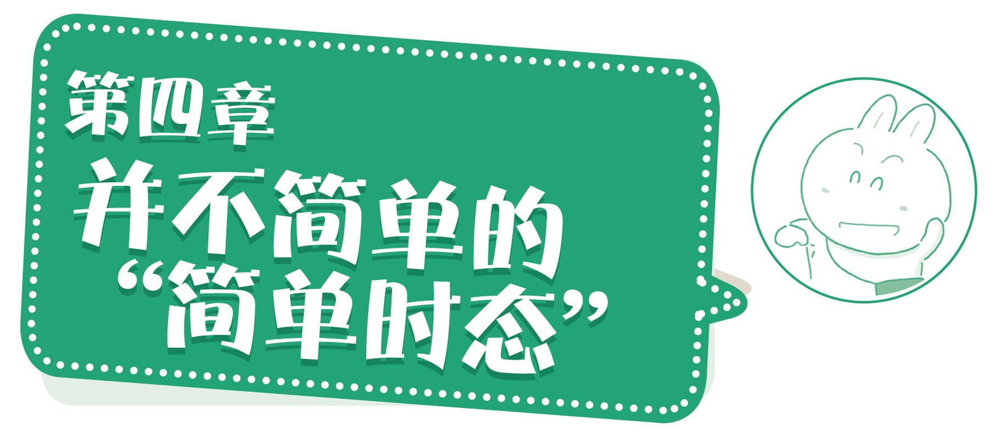
“Ben，你觉得自己今天的成就，是否应归功于你的‘叛逆’？”这是我再次坐到Ben面前说的第一句话。这问题很早就想问了，因为我很佩服他在这个“语法专家”按簸箕撮的年代，还能独辟蹊径，创出属于自己的方法；更佩服他提出的那些与众不同的观点——上次课竟然把流传千年的爱情故事一否到底了！我对这种思考能力颇为向往。
Ben听到我的问题明显愣了一下，说：“嗯……首先，我研究英语学习，实在谈不上有什么‘成就’；第二，其实我并不叛逆，只是喜欢思考和创新而已。”
“对我而言，‘叛逆’和‘创新’基本上属于一码事。”
“不一样，它俩的关系是：后者有可能来源于前者。我小时候倒是很叛逆的——比如面前有半碗饭，我还没吃饱，再干掉这半碗就正好最舒服。你觉得我会吃吗？”
“会。”
“但如果对面有人指着我的鼻子说：‘你现在必须把这半碗饭吃掉！’我一听‘必须’二字，就算再想吃，也会逆反着不动筷子了。”
“如果是我我也会这么做啊——凭什么非要听话！”
“可是现在，我会想：我吃不吃这半碗饭关你屁事！你说任何话都不会影响我是否吃它的决定。于是，我很可能根据自己的实际需要，真的把这半碗干掉了。这时，思考才是独立的。否则，你的叛逆就很容易被别人控制。”
我默默思考着Ben的话。
Ben说：“这个回家去想，别忘了你今天来的目的。我们就从吃饭这个话题往下说吧，你先翻译下这句话：I have dinner.”
“我吃晚饭。”
“呵呵，”Ben往椅背上靠了靠，说，“要是像你这么翻译，很多句子就都没法理解了。比如It happens.”
It happens这个句子我在电影里见过。一般是一个人碰到了什么倒霉事，另一个人安慰的时候说的，有时还会加上That's OK之类的句子。但这句显然不能像刚才一样翻成“它发生”。我说：
“如果让我意译的话，那就是：‘这种事总是在发生，所以落到你身上一点儿也不奇怪，你不用为此难过。’”
“你的语感正确。那我的问题来了——这两句都是一样的时态，为什么只有第二句翻成‘这种事总在发生’？这个‘总’字你是从哪儿看出来的？”
Ben的问题直击要害——是啊，我是从哪儿看出来的？我能理解It happens纯粹是因为了解这句话的语境。
“难道只要是现在时，就有‘总是’的感觉？”我试探着问道——这种试探简直不抱任何希望。
Ben看着我笑道：“蒙得很准！现在时里一般都隐含了三个词—— all the time。It happens其实就是It happens all the time.再举个例子：比如你平时都是自己开车过来上课，但今天下大雪，你选择了地铁。我问你：How do you come here?”
“By subway.”
Ben扬了扬眉毛：“还记得现在时隐含的三个词吗？”
“你是说……这句其实是在问How do you come here all the time?这样翻译过来就应该是……噢！！”我大叫一声，整个人都激动起来，“这句话实际应该翻译成‘你通常是怎么来这儿的’！也就是说，虽然今天坐了地铁，但我只能回答I drive my car to come here. 如果问题是How did you come here today?我才能答By subway!”
Ben点头道：“学得不慢！从你领悟的时间我能看出来，你确实一直在非常认真地利用电影和美剧学习，所以对语言的感觉已经进步不少了。对了，你看过Friends，大概知道Ross是什么样的人吧？”
“考古学家。严谨，总较真，还爱给别人纠正语法错误，但是我觉得他很可爱。”
“嗯。有一集过圣诞，六位主角各自准备了一份礼物。Phoebe出主意说把礼物都编上号，然后大家抽签，抽到哪号就拿走哪份，如果抽到自己的就再来一次。大家都说‘好主意’，Phoebe也很兴奋，把这种分礼物的方式命名为Who gets who。没想到Ross立刻给她纠正道：Who gets whom.说完另外五个人都用鄙视的眼光看着他——知道为什么吧？”
我一边想象Ben说的场景，一边笑着答道：“他在语法上太较真儿了。美语里who基本上可以完全替代whom——尤其是在美剧中。我到目前为止一个whom都没见过。”
“正是。Ross被鄙视后，无奈地说：I don't know why I do that.为什么观众听完了这句会爆笑？”
我知道这一定不是个轻易能答上来的问题，所以很认真地想了一下，才说道：“按刚才的理论，这句实际上是想表达I don't know why I do that all the time.翻译过来是‘我不知道自己为什么总是那么做’。隐含的意思是……他已经干过不知道多少次这种傻事了！”
说到这儿我自己也开始觉得好笑。“如果我不知道要加all the time这回事，那肯定会理解成‘我不知道刚才为什么会那么做’——如果是这样的话，Ross应该会说I don't know why I did that.而且如果真是这样也就不好笑了。”
“很好！” Ben向我挑大拇指。每次被Ben夸都让我有一种死心塌地往下学的感觉——这可能和我已经明确知道他是个超强的导师级人物有关。要知道，赞美的效果往往由双方水平的差距决定——同样是说我“咬字清楚”，被播音员夸和被周杰伦夸感觉是不一样的。
“现在国内好多情景喜剧的笑声都是后加上去的，很恶心。而Friends的笑声就像以前中国的《我爱我家》一样，都是观众货真价实的反应。所以看的时候一定要用心揣摩，尤其是那些观众笑得快岔气儿的地方。要想彻底掌握一门语言，就得先弄懂它的幽默。”
我点头。
“Ben，我收回之前的话——我现在彻底不认为这几个小时态简单了。你刚讲完一个现在时，我就发现自己有这么多不会的地方。”
“啊？谁说现在时讲完了？这才只进行了一半而已。”Ben不顾我惊讶的表情，接着说，“现在你邀请我加入你们。”
“Do you wanna join us?”
Ben假装想了一下，点头道：“OK, I'm in.”
这句话看上去很普通——里面最难的词是in，但听起来却十分地道！
Ben又照例启发式地问我：“这句话直译过来是什么？”
“我在里面。”
“可是你现在在里面吗？”
“不在。 其实这句想表达的是‘我会在里面’，也就是‘我会加入’，而不是‘我现在已经加入了’。”
“嗯，直译和意译结果不同了，对吧？再来一个例子——你约我周日下午4：00去打羽毛球。”
“Would you like to play badminton with me at 4 p.m. on Sunday?”
“Ok, I'm there!”
“I'm there!”我一边品着这个句子——确实得用“品”这个字——一边说，“这也和刚才那句类似。直译是‘我在那儿’，而意译是‘我会去的’。”
Ben总结道：“这就是英文里的特殊表达方式——‘结果导向’，即直接说出一个结果，以表示事情会朝着这个结果发展。比如I'm in就是个‘结果’，它表示事情会朝着这个结果发展——也就是‘我会加入’；而I'm there也是同样的道理。
“这和我们中文表达方式不同，所以要多举几个例子——美国人日常生活中给建议的时候，最常用的不是suggest或advise，而是You wanna do sth的套儿。比如我说You don't wanna talk to him right now，就表示‘你现在最好别跟他说话’。”
“对！我看过类似的句子！直译是‘你不想跟他说话’，但这只是个结果。它表明事情会朝着它的方向发展，也就相当于建议‘不要跟他说话’了。”
“不错。再举个《功夫熊猫》的例子。Master Shifu的师傅——就是那只老乌龟——说他梦见被关在桃岗监狱的大恶人Tai Lang就要回来报仇了。Master Shifu惊叫：That is impossible! He's in prison!但是一想老乌龟的话也不能不听，就把手下的Sing叫过来：Sing! Fly to prison! Double the guards. Double the weapons. Double everything.然后说了一句‘不要让Tai Lang越狱！’。如果是你，你会怎么表达？”
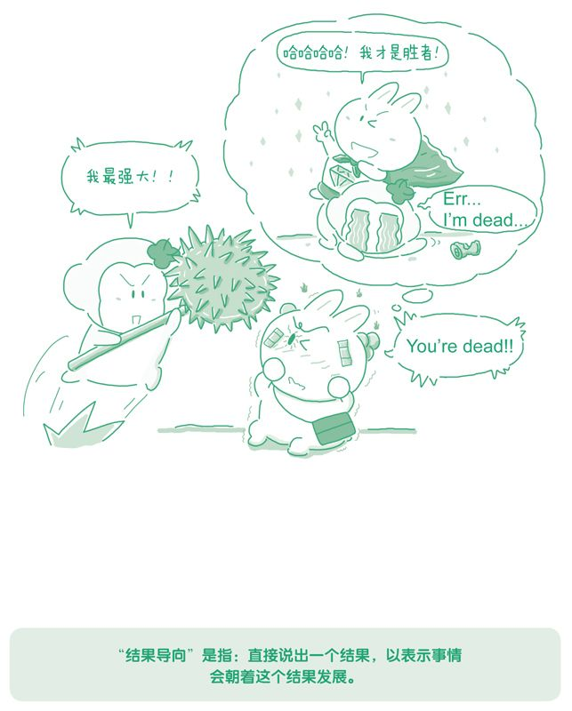
“‘越狱’我知道，是prison break。那这句应该是Don't let Tai Lang break the prison.”我看了看Ben，问，“不过这动画片里应该不是这么说的吧？”
“那当然！Master Shifu的原话是：Tai Lang does not leave that prison!”
“结果导向！”我忍不住大声道，“用‘Tai Lang从来不越狱’表达‘不要让Tai Lang越狱’。真怪，Master Shifu的句子我能听懂但造不出来，可下意识会觉得很地道！而且我明确知道我的同学，甚至是我的老师，恐怕都不能自然地说出Tai Lang does not leave that prison，他们甚至可能不知道这种表达方式的存在。可是，它却偏偏在动画片里出现了，想想真讽刺！”
“这很正常。‘能看懂’和‘能听懂’完全是两个概念，‘能听懂’和‘能说出来’更是天壤之别。好，现在时这才算是讲完了，再说说过去时。很早以前我给一个外教面试，一切谈妥之后，他问：Ben, does your school pay teachers on time?我一想，我们付薪水的记录几乎可以用perfect来形容，就很高兴地答道：Yeah, we used to pay teachers on time.没想到他脸色一变，拿起包就要走，我赶紧拦。几经解释后，我们终于发现可能是说话的时候误会了。他又问：Err...does your school still pay teachers on time?我说：Of course!!”
“哈，原来他以为你们再也不按时给教师付工资了！”原来像Ben这样的人物也会犯这种低级错误。我趁机总结道：“看来过去时有一种隐含的意思，暗示‘现在已经不这样了’。”
“有的时候确实如此。你知道吗？对女人杀伤力最大的话不是You are ugly，而是You were beautiful.不过，在理解任何时态的时候都一定要学会说三个字：‘不一定’。——过去时不一定总是隐含你说的那层意思。比如咱俩晚上去喝酒，烂醉如泥。第二天你说‘我头疼得都上不了班了’，我会说：Haha, I knew it!”
“你想表达‘我早就知道了’。”
“对。那我现在是否还‘继续知道’这件事呢？”
“还是知道……噢！所以过去时不一定总是暗示‘现在已经不这样了’。看来我再次总结错误。”
“也不要一棒子打死——你的结论也还说得过去，只是更严谨一些就好了。我们可以这样说：过去时只是强调一件事是过去发生的，并且往往现在已经不再继续了。”
Ben特意重读了“往往”二字。
“Ben，我被你搞糊涂了。这二者不是矛盾的吗？”
“这就要看你的语感了。我们做个中文的类比：假设有人炒股票，我问他炒股成功率是多少。他答‘也不是每次都成功’。你觉得他成功过吗？”
“成功过。”
“我也会这么认为，但这只是从语感上说。从逻辑上讲的话，他成功的次数有没有可能为零？”
这我倒没想过。理论上说，“不是每次都成功”有多种可能，可以是只有一次没成功，也可以是N次没成功，甚至根本就没成功过。我恍然大悟，说：“我明白了！‘不一定’指的是逻辑层面；而‘不再继续’指的是感觉层面。”
Ben松了一口气，说：“还好你的逻辑思维高于平均水平，要不然这么绕肯定晕了。当然，理解它也没那么重要。过去时的基本感觉已经找到，现在看看加上从句的效果。你写下这四句话：
1. I know you are wrong.
2. I knew you were wrong.
3. I know you were wrong.
4. I knew you are wrong.
哪句是对的？”
这个问题我成竹在胸：“根据前后时态统一的原则，只有前两句是对的。”
“哦？”Ben的眉毛再次扬了起来，“那‘时态统一’是谁给你讲的呢？”
坏了！Ben的语气让我感到自己又没保持独立思考。前三节课我已经知道了这么多自己以前学错的东西，这次再多一个真是毫不稀奇！我开始重新审视这四句话：
“第一句是‘我现在知道你现在是错的’，可以；第二句是‘我过去知道你过去是错的’，也可以；第三句是‘我现在知道你过去是错的’……”说到这儿我设想了一下场景，继续说道，“……也可以！我当然能说‘我现在才知道你以前是错的’！”我很高兴自己又向前突破了一下。
“第四句很别扭，从来没见过类似的……”我接着说，“但我想同样可以！‘我过去就知道你现在是错的。’比如一个人现在告诉我‘1+1=72’，我就可以说I knew you are wrong.因为我很早就知道他现在说的这个等式是错的。”
“很好！其实用不着谁给你讲，你自己就能明白。当然如果你还觉得这种‘前面过去时，后面现在时’的句子不顺眼，可以看看The Big Bang Theory里的例子。Leonard想向他的朋友Sheldon诉说正在困扰自己的问题，突然被一件事打断了。等处理完这件事，Sheldon问他：Did you want to talk about what's bothering you?”
“嗯，原来连‘前面过去时，后面现在进行时’都可以——这句应该翻译为‘你刚才是想跟我说现在正在困扰你的事吗？’。”
“很好，现在说进行时。反正你也有一定基础，给我举个例子吧？”
我就地取材：“I'm listening to you.”
“这就是最基本的进行时了，表示‘持续’。说起来很简单，但要用得‘有感觉’就不容易了。你翻译一下这句话……”Ben突然用手指着我的额头大声说，“我告诉你啊，离我远点儿！”
我吓了一跳，但随即反应过来道：“I tell you to leave me alone.”
Ben的表情又骤然恢复到好像什么都没发生过的样子，说：“你的句子也不能说不对，但还是听听这个——I'm telling you! Leave me alone!”
听到这句话我下意识地产生一种超级地道的感觉！一个-ing把我用得脑子里全是说话者当时的场景。这才叫原汁原味的美式英语！
Ben看到我脸上赞叹的表情，说：“看来你的语感已经足够体会到这句的精妙之处，那我就可以放心不讲了。回去看电影的时候，你会发现类似的句子的。不过进行时还没完。你看，这里不许抽烟。如果我管你要烟，你怎么答？”
“I don't wanna give you a cigarette.”
Ben点头道：“很好，你现在已经能自如地使用像wanna这样的口语要素了。不过你听听这句：I'm not giving you a cigarette.”
“地道感”再次油然而生，而且比刚才更强烈！这句话的直译竟然是——“我不是正在给你一根香烟”！这个句型我在电影里见过，如果不是Ben提醒，我可能一辈子也不会注意到它，因为它太容易读懂了。我想起了上次课Ben的教诲——不要瞧不起任何一个小套儿。其实时态又何尝不是套儿呢——只不过是一个个用途极广的套儿而已。所谓“时态”，就是“时间的状态”，通过把动词变形来体现语言中与时间有关的信息。
“Ben，这类句子我以前看电影时会毫无意识地轻易放过。I'm not letting this happen again!”我既表了决心，又造了句子。
“很好！”Ben笑着说，“我们刚才的句子说明‘进行时可以表示将来’。所以I'm not giving you a cigarette才能表示‘我不会给你烟抽’；你的I'm not letting this happen again也才能表示‘我不会让这种事再次发生’。那现在我有个疑问了——I'm talking to you到底表示‘我正在跟你说话’呢，还是表示‘我会跟你说话’呢？”
我强行忍住了二选一的冲动，说：“不一定……”看到我一脸艰难的表情，Ben又笑了，说：“现在用场景说明一下，什么时候是前者，什么时候是后者。”
这次我几乎没花时间想。“如果我正在和A聊天，B叫我出去谈点事，我可以跟B说OK, I'm talking to you，表示‘我一会儿会跟你说的。（别着急。）”；如果我本来就在和B聊天，但是他不停低头发短信，我就可以抱怨：Hey! I'm talking to you!表示‘我在跟你说话呢！（别玩儿了！）’。”
Ben点头，随后问道：“现在你已知的表示将来的套儿都有哪些？”
“据我所知，有四种——最普通的will do和be going to do，刚讲的be doing，还有另外一种你没提到过，是be to do的句式——比如I'm to write a book about what you have taught me.”
Ben突然把脸一沉：“你知道的太多了——已经可以不用学了。You are leaving now!”他手指门口，做出极凶狠的表情。
这个语气我太熟悉了——就是今天刚学的。我大声道：“进行时还可以用于结果导向！”
“Give me five！”我和Ben的右掌在空中相击，发出极清脆的声音。
我不敢太过沉浸在激动的心情中，赶紧低头记笔记。写的时候我突然想到第二次课学的doing和done的“找补”法，说：“那相当于doing能表达两种感情——一种是‘主动’，一种是‘持续’。”
“对。相应地，done也有两种感情。之前咱们只学了一种‘被动’，其实还有一种是‘状态’。你现在已经看了那么多电影，应该经常见到I'm done这句话吧？”
我点头：“看到过。我直觉上认为这句应该翻译成‘我已经完成了’。可是如果要按‘被动’来解释，就只能翻成‘我被做了’——这显然讲不通。”
“你的直觉正确。I'm done可以翻译成‘我已经处于做完了的状态’——也就是你说的‘我已经完成了’。同理还有She's gone，I'm prepared，He's drunk，I'm married等等……分别表示‘她走了’‘我准备好了’‘他喝多了’和‘我结婚了’。”
“明白。doing表示主动或持续，done表示被动或状态——具体表示哪一种，还要由句子本身决定，对吧？”
“对。”Ben毫不停留，接着说，“咱们刚才把进行时和将来时一起讲了，最后是‘完成时’。比如你想表达‘我去过伊拉克’，怎么说？”
“I have been to Iraq.”
“那从这句英文来看，你是什么时候去的呢？”
“不……不一定。”
“很好！”Ben笑着说，“这句只能表达‘去过’，但是具体什么时候去的不知道。那我的问题来了——have done是对于现状的描述，还是对于过去状态的描述？”
“我认为是‘现状’。因为刚才那句毕竟是指‘我现在处于已经去过伊拉克的状态’——要不然怎么叫‘现在完成时’呢！”
“没错。现在你就更能理解为什么done不仅能表示‘被动’，还能表示‘状态’了吧？”
我使劲点头：“因为done在have done这个套儿中也表示状态！”
Ben接着说：“好，今天咱们分析了五个基本时态。这五个时态就相当于五个大套儿，分别表达一系列感情。我现在要你记下它们五个的关键词，即：现在、过去、将来、已经和持续。这五个词就像‘三原色’能调出所有颜色一样，也可以通过互相搭配生成所有复杂时态。我管这五个时态叫‘一级时态’。
“既然有‘一级’，就会有‘二级’‘三级’和‘四级’。记住，再复杂的时态也是一点一点拼出来的——比如在一个‘二级时态’的基础上加个‘一级’，就可以得到一个‘三级时态’；而在‘三级’的基础上再加个‘一级’，又会拼出个‘四级时态’。
“我们下次会一口气解决所有时态。到时候你会发现，在这个理论框架下，一切都会变得极其简单——The magic is about to happen!”Ben的话让我想起了刘谦故作神秘的那句“见证奇迹的时刻到了”。
我坚信Ben有这种化繁为简的能力。所以现在的我比以往更期待下一次课的到来。我真想马上看看Ben是怎么把像“过去将来完成进行时”这样所谓的“四级时态”的难题像摧枯拉朽般瓦解的！但Ben接下来的话却太过出乎我的意料：

“这次的作业和以往不同。你回去，利用一切可利用的工具备课，下星期六给我这一个班的学生讲所有‘二级’以上的时态。限时35分钟，我会旁听，并告诉他们你是这里的新老师（我心想：‘什么？！’）。不要怕遗漏——基本的‘五元素’都给你讲清楚了，用排列组合的方法就可以穷尽所有可能的时态。”
我张大嘴，半天说不出话来。如果说Ben的课曾经带给我震撼的话，那么这些震撼还不及他刚刚说的那些话所带来的百分之一！不过Ben显然不希望我再问出什么，所以我也只能接受这个挑战。
我不知从哪儿突然获得了一股自信，使劲点头道：“看我的吧！”
这次消化Ben讲的东西用了更长时间，所以五天后才给他发出例行邮件：
Ben老师：
你好！我现在满脑子想的都是怎么在讲台上支撑35分钟不倒下。不过世界上有那么多老师都能做到，我相信自己也一定行。因为如果一件事有很多人在做，那一定是只要通过努力就能办到的事。
下面是我对本节课的总结以及我自己的感悟，请指正：
一、五个基本时态
时态只不过是一个个用途极广的套儿而已。所谓“时态”，就是“时间的状态”，通过把动词变形来体现语言中与时间有关的信息。在理解任何时态的时候都一定要学会说三个字——“不一定”。
1 一般现在时
1）关键词：现在，do
2）一般都隐含了三个词——all the time。
2 过去时
1）关键词：过去，did
2）强调一件事是过去发生的，并且往往现在已经不再继续了。
3）前面过去时，后面现在时是成立的，比如你上课讲的I knew you are wrong.
为了让自己不再觉得这种用法别扭，我又找了一些例句：
• Copernicus proved that the earth is round.
• I was younger than you are when I was in college.
• I tried what you do.
3 现在进行时
1）关键词：持续，be doing
2）进行时可以表示将来
4 将来时
1）关键词：将来，will do
2）will后面一定要加do（即动词原形）。
5 现在完成时
1）关键词：已经，have done
2）现在完成时是“对于现状的描述”。
二、结果导向
1 定义：直接说出一个结果，以表示事情会朝着这个结果发展。
2 可用于结果导向的时态：
1）一般现在时
我这几天自己收集了几个结果导向的句子：
• You are dead. （你死定了！）
• You are out of here. （出去！）
另外，既然有You don't wanna do sth，就一定有You wanna do sth，可表示建议。我造的句子：
• You wanna study hard. （你可要努力学习啊。）
2）现在进行时（表示“将来”的用法）
例句：You're coming with me. （你跟我走一趟。）
三、doing表示主动或持续，done表示被动或状态。
祝一切顺利！
Bob
2012-1-15
在开始看下一章之前，你最好：
1 复习本章所有知识点。
2 完成这一章里Ben给Bob留的作业。
注：这就意味着，你这次不但要把本章所有的知识点教给朋友，还要通过自学——查词典、Google检索和自己领悟——掌握“一级”至“四级”的所有时态（当然，自行领悟的那部分就先不要贸然给朋友讲了）。
五个基本时态
1．现在
例句
• I don't know why I do this.
• I'm so happy that you're here.
• You can't call him every time any little thing comes up.
• The world's greatest endurance race is Le Mans, which runs for 24 hours straight from noon on Saturday through the dark of night and finishes at noon on Sunday.
• You deserve to be with someone who appreciates you, who gets how funny, sweet, amazing, adorable, and sexy you are, and who wakes up every morning thinking “Oh my God, I'm with Rachel”.
练习
• I __________ why I __________ this.
• I __________ so happy that you __________ here.
• You __________ call him every time any little thing __________ up.
• The world's greatest endurance race __________ Le Mans, which __________ for 24 hours straight from noon on Saturday through the dark of night and __________ at noon on Sunday.
• You __________ to be with someone who you, who __________ how funny, sweet, amazing, adorable, and sexy you __________, and who __________ up every morning thinking “Oh my God, I'm with Rachel”.
2．过去
例句
• You probably did everything you could.
• I thought you might be cold.
• I never did it. I just thought I might.
• Her name was Cheyenne. She was barely older than you are.
• I always slept in the back when we drove up here.
练习
• You probably __________ everything you __________.
• I __________ you __________ be cold.
• I never __________ it. I just __________ I __________.
• Her name __________ Cheyenne. She __________ barely older than you __________.
• I always __________ in the back when we __________ up here.
3．持续
例句
• She is packing for her trip.
• Everyone is helping clean the table.
• He is trying really hard to remain in control.
• I'm telling you I don't want you seeing my daughter anymore.
• I'm having a great time with you and I just don't want us to move too fast.
练习
• She __________ for her trip.
• Everyone __________ clean the table.
• He __________ really hard to remain in control.
• I __________ you I don't want you seeing my daughter anymore.
• I __________ a great time with you and I just don't want us to move too fast.
4．将来
例句
• I will see you tomorrow.
• If I'm going down, I'm taking everybody with me.
• I'm not running on a Sunday.
• I think we're calling off the wedding.
• I am telling you it is going to be worth it.
练习
• I __________ you tomorrow.
• If I __________ down, I __________ everybody with me.
• I __________ on a Sunday.
• I think we __________ off the wedding.
• I am telling you it __________ worth it.
5．已经
例句
• I have been through a divorce.
• I haven't even been home yet.
• I've had feelings for you.
• I've seen her be a little too into her looks.
• I've instructed my client to remain silent.
练习
• I __________ through a divorce.
• I __________ even __________ home yet.
• I __________ feelings for you.
• I __________ her be a little too into her looks.
• I __________ my client to remain silent.
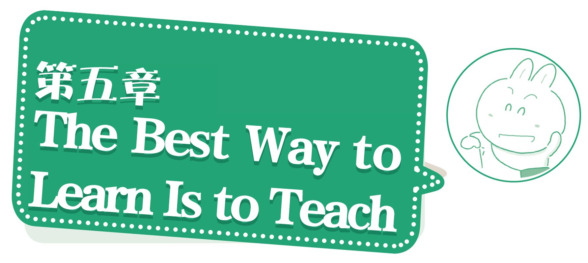
如果之前跟Ben 学习我还能保持“追求不完美”的心态的话，那现在我就只剩追求完美这一条路了——要是在讲台上被学生问住，光想想就觉得颜面扫尽。
备课当然要从所讲的知识点开始。五个“一级时态”分别为：现在、过去、将来、已经和持续。而其余时态其实是后四个“一级时态”的排列组合——一“二级”六种，“三级”四种，“四级”一种。我本以为需要查查语法书才能理解这些时态的意思，没想到Ben的“五元素法”直接帮我省去了这个步骤：
一．从将来（will do）中扩展出的时态
● 过去+将要=did+will do=would do
（注：did+will do相当于把谓语will“降”一个时态，变为would，所以“=would do”）
二．从已经（have done）中扩展出的时态
● 过去+已经=did+have done=had done
● 将要+已经=will do+have done=will have done
◎ 过去+将要已经=did+will have done=would have done
三．从持续（be+doing）中扩展出的时态
● 过去+持续=did+be doing=was doing
● 将要+持续=will do+be doing=will be doing
◎ 过去+将要持续=did+will be doing=would be doing
● 已经+持续=have done+be doing=have been doing
◎ 过去+已经持续=did+have been doing=had been doing
◎ 将要+已经持续=will do+have been doing=will have been doing
过去+将要已经持续=did+will have been doing=would have been doing
再接下来就是寻找例句了——上课不可能干巴巴地只讲结论。虽然我已经通过电影积累了自己的语料库，但它只能作为参考，因为之前并未有意识地收集关于“二级时态”的句子。这时候，词典和Google成了我最有力的帮手。
1 would do=did+will do（过去将要发生的事）
在will do的基础上加did，就相当于把“现在将要发生的事”变成“过去将要发生的事”。比如我在星期三的时候说I hope you will come to my house on Friday，那到了星期四的时候我就可以说Yesterday, I hoped you would come to my house on Friday.只需做个“降时态”的工作即可。
“降时态”是用来造句子的，而如果把这个过程反过来，就成了用来理解句子的窍门：当你认为某句话的时态过于复杂时，就给所有谓语动词“升”个时态。（did“升时态”=do；had done“升时态”=have done）例如上文中的那个句子升过时态后就变成了I hope you will come to my house on Friday，其含义显而易见。然后只需以“过去”为参照系看待此含义即可。对我来说，“变换参照系”这种初中就学过的知识自然毫无问题。
有了“升时态”的方法做基础，那么would do还表示“过去经常做某事”也很容易理解了，比如When I was young, I would read alone in my room. would do“升时态”变为will do，即“将会发生”。如果一件事现在经常发生，我就有理由预期此事will happen again（即will do）；相应地，如果一件事过去经常发生，我也就有理由预期此事would happen again（即would do）。
想找这种时态的例子很容易。前几天看Steve Jobs（苹果公司前CEO）在Standford University的演讲时就碰到一句：During the next five years, I fell in love with an amazing woman who would become my wife.对比我自己的经历——我在几个星期前和Ben通了电话，然后他就成了我的老师——这句就可以变成：A couple of weeks ago, I contacted Ben who would later become my teacher.
2 had done=did+have done（过去已经发生的事）
从字面上理解，“过去已经”其实就是“早已经”。什么是早已经发生的事呢？我立刻想到如果有人向我炫耀他知道“1+1=2”，我肯定嗤之以鼻：“就这个，老子两岁就会！”换句话说，就是“我两岁时就已经会了”。在词典里一查果然有类似的句子：I had known this when I was two years old.
我真没想到自己一直害怕的“过去完成时”是如此容易理解——三个字就够了——“早已经”。我记得以前老师教导我们：“‘过去的过去’就是过去完成时。”这话虽不全错，但有很大误导性。比如我昨天早晨起来，先刷牙后洗脸（其中洗脸是“过去”发生的事，那么刷牙当然就是“过去的过去”了），难道我要说“I had brushed my teeth and then washed my face.”？
另外，以前做语法题一看某个选项是had had就头疼不已，可现在随口就能造出一个这样的句子。假设老师给我发书，发到我这儿的时候，我想告诉她我已经有一本了，便会说I have had a book.如果我想表达“我昨天就已经有一本书了”，那只需要把have“降”一个时态，变为I had had a book yesterday即可。
3 will have done=will do+have done（将要已经发生的事）
什么是将来会完成的事呢？我的老板让我星期五之前把报告做完，如果我听话，那么“我星期五的时候肯定已经完成这份报告了”，即I will have finished the report on Friday.
再有，我的目标是美国长青藤名校。现在的我，已经拥有超强的学术背景和外企工作经历——就算再不济，三年以后也出去了。也就是说，“我三年以后就已经在美国了”，即I will have been in America after three years.
我计划让学生用这个时态说说自己将来的计划，比如I'll have been married when I'm 28 years old.
4 would have done=did+will have done（过去将要已经发生的事）
有了“二级时态”will have done做基础，“三级”就太简单了。还是我和老板的场景——昨天我向他保证：I will have finished the report on Friday.今天他问我“到底什么时候能完”。我心说昨天不是告诉过你了吗，于是答道：I said yesterday that I would have finished the report on Friday.
5 was doing=did+be doing（过去持续发生的事）
过去持续的事太多了。比如我昨天肚子不舒服，以至于在马桶上渡过了两个小时的宝贵人生——I was staying in the bathroom for two hours yesterday.
在电影里看到的句子更是出神入化：
What were you thinking?!
你刚才一直在想什么呢？！（相当于中文的“想什么呢你？！”）
另外让我一直困惑的I was wondering… 句型也得到了解决，其实就是想表达“我过去一直（持续）想知道……”，比I wonder想知道的程度强一些而已。像我，就一直想知道Ben怎么就达到了今天的境界——I was wondering how Ben did it.
“过去持续的动作现在还在继续吗？”我模仿着Ben的思路问自己。回答不出我所料，三个字——“不一定”！
6 will be doing=will do+be doing（将要持续发生的事）
将来会持续的事和过去持续的事几乎一样多——因为总有一天“将来持续的事”会变为“过去持续的事”。我未来几个月肯定是要拿来学英语了——I'll be studying English for the next few months.
7 would be doing=did+will be doing（过去将要持续发生的事）
还是“学英语”的例子——如果我是“昨天决定未来几个月都拿来学英语”，那就是：I decided yesterday that I would be studying English for the next few months.
8 have been doing=have done+be doing（已经持续发生的事）
已经持续了一段时间的事也很常见。记得我第一次面试时，人力资源经理就问过我“在这一行已经（持续）干了多少年了”，即How many years have you been working in this field?
我在词典里查到的第一个相关例句是：
I have been waiting for this opportunity for ten years.
我等这机会已经十年了。
我换位到Ben的角度问自己：这个动作现在还在持续吗？也就是说，这个机会等到了吗？我发现答案依旧不变——不一定。为什么呢？假设我等一个工作机会等了十年。如果我最后面试通过了，可以说：Thank you! You know, I have been waiting for this opportunity for ten years, and now I got it!如果老板不要我，我也可以骂他：I hate you! I have been waiting for this opportunity for ten years, and I still can't get the job!
9 had been doing=did+have been doing（过去已经持续发生的事）
什么是“过去就已经持续过一段时间”的事呢？用“等机会”的例子即可解决。比如我看了一眼日历，发现昨天是我等这个机会的十周年纪念日，于是痛苦地说：I had been waiting for this opportunity for ten years untill yesterday.
我还想到了自己申请美国研究生的例子。在几次跟教授的通话中，我了解到如果申请物理专业，那么本科也必须是相关专业。这个我当然没问题，虽然已经工作一年多，但这之前我在大学学了四年物理。于是我可以告诉教授：I had been studying physics for four years before I found this job.
10 will have been doing=will do+have been doing（将要已经持续发生的事）
还是用“等机会”的例子。我再次不厌其烦地看了一眼日历，发现下星期三就是我等这个机会的十周年纪念日了，我摇头叹息道：I will have been waiting for this opportunity for ten years next Wednesday!
11 would have been doing=did+will have been doing（过去将要已经持续发生的事）
如果我想表达：“我昨天发现，下星期三就是我等这个机会的十周年纪念日了。”我要做的不过是把will have been doing再“降”个时态——I found out yesterday that I would have been waiting for this opportunity for ten years next Wednesday.
我估计这个“四级时态”的名字应该叫“过去将来完成进行时”。想到这儿，我不禁一阵后怕——如果Ben第一次课就跟我说“我教你‘过去将来完成进行时’吧”，我肯定当场让他有多远滚多远。难怪Ben说“起名字不但会给我们带来愚蠢的快感，而且会使我们心生恐惧。”
这次的作业也让我不得不静下心来，研究Ben的授课方式。我发现他有以下特点：
一、永远从实例引入。
先给对方描绘一个“急需要表达的感情”，然后才说出对应的时态。这样做的好处是让学生认为这个时态有用，以调动其积极性。
我发现教课就是个“正着想，倒着讲”的过程。在我自己思考时，都是从一般到特殊；但为了引导学生的思维，就要反过来从特殊到一般（即先从实例引入）。为什么目前几乎所有的语法书都让人看不下去呢？因为它们都被写得像提纲一样——先说结论，再给例句。这无疑是撰写论文的正确方式（论文要求一开始就亮明观点，然后再涉及论证过程），但人类接受新事物的顺序却恰恰相反——先熟悉例子，然后再探究其背后的原理。
二、认为对方能自己想通的绝对不讲，而是一点一点地启发。
有时会问一些明知对方会答错的问题，然后再说出正确答案，以获得反差的效果。当然，这种反差以不打击学生自信心为前提。
三、语言幽默，总能让人支着耳朵听下去。
四、语速极快。
第一条好办，第二条却让我颇费周折。为此我不得不在每个知识点上都竭尽全力地设想学生会提出什么稀奇古怪的问题。我发现，要想当个负责任的老师，就得先学会“精神分裂”，从各个角度向自己的观点发起进攻。
第三条和第四条短时间内更是难以提高。好在我本身就有一些幽默细胞，嘴也总能跟上大脑的速度。只要准备充分，35分钟之内不会露馅。
我对自己还有个要求，就是讲课不能看稿，因为Ben给我讲课的时候就从来没拿过教案。说实话，我从始至终见到的唯一和语法有关的物体就只有他自己。他说过：上课用教案，只能说明老师对自己讲的内容极端不熟悉。
让我没想到的是，整个备课过程是令人兴奋的——自学带来的快感甚至超过了听课给予的享受！原来当我完全理解自己要讲的内容时，自信就会油然而生。难怪Ben之前教导我说：“失败只有一种，那就是半途而废；紧张只有一种，那就是准备不足。”（前半句不是他的原创。）我现在心里想的，已经不是是否会被学生问住，而是他们是否会给我热烈的掌声，是否会尖叫并站起来大声吹口哨，是否会苦苦哀求我再多讲一会儿……当然我很快就从这些充满诱惑的意淫中清醒过来——毕竟他们听过Ben的课，所以不是一般地“见过世面”。
课程进行得极为顺利。号称“要听课”的Ben，只简单把我向学生介绍了一下，就晃晃悠悠出去了。事后我才知道，他一直在隔壁听讲。之所以不坐里面，是因为当底下有个人知道所有你要讲的东西，并且很可能发现你的错处时，你教课的自信心就会骤降。其实我在临上课时信心曾突然不足，心跳一百上下；但一站上讲台，就突然进入了一种极度兴奋的状态——思维敏捷，可以在几乎不花时间想的情况下，答出学生的所有问题。
我完全控制了课堂气氛——没有冷场，只有笑声；让对话就对话，让回答问题就回答问题。同时我发现了语速快的另一好处——让学生根本来不及怀疑老师，只能被牵着思路走。
当我砍瓜切菜般讲完“四级时态”，并说出“今天的课就上到这儿，大家辛苦了”时，全班一百多名学生真的冲我鼓起了掌！我本来没奢望在Ben教过的学生面前得到掌声，却在自己的“处男讲”上做到了！从走下讲台的那一刻起，我开始立志要超越Ben的境界！
“今天的课就到这儿了，还有什么问题吗？”这是Ben今天跟我说的第二句话——第一句是见面的时候冲我点头说的：“来啦。”
我当然不愿意就这样结束——虽然我已获益良多。我说：
“Ben，今天的课让我获得了完全不同的人生体验，也让我的英语水平上了新的台阶，谢谢你能给我这个机会！但是，”我开始提出自己的疑问，“你让我讲这次课主要出于什么考虑呢？”
Ben笑了：“这就说来话长了。首先，教课能让你的学习态度发生根本性的改变。如果你看过Stephen Covey的The Seven Habits of Highly Effective People就明白了。这本书中有句话对我启发很大，就是：The best way to learn is to teach.它建议人们‘学到任意一样新知识，都要想方设法在24小时之内教出去’。因为授课的压力会让你不但完全熟悉自己要讲的东西，还会尽量使自己的观点无懈可击。试想，如果不是我逼着你上讲台，你怎么会不断设想可能被问到的问题，怎么会查阅那么多资料来充实自己的例子，又怎么会通过笔记和回忆模仿我的上课风格呢？”原来我这一个星期的不懈努力Ben都能猜个八九不离十。
“你知道我英语什么时候进步最快吗？就是当了老师以后！你不可能总对自己的学生说I don't know，那样时间一长就没人理你了。我这一整套语法理论，以及单词记忆法，也都是做老师后创造出来的。把你送上讲台，相当于带你走了一遍我当初学英语的过程。只不过你比我速度要快一些而已。”
“是，因为有你带领我嘛！”
“嗯。你知道吗？好老师有个通病，就是会经常嫉妒自己的学生。他心里会想：老子当年要是遇上自己这么强的老师，得少走多少弯路！”
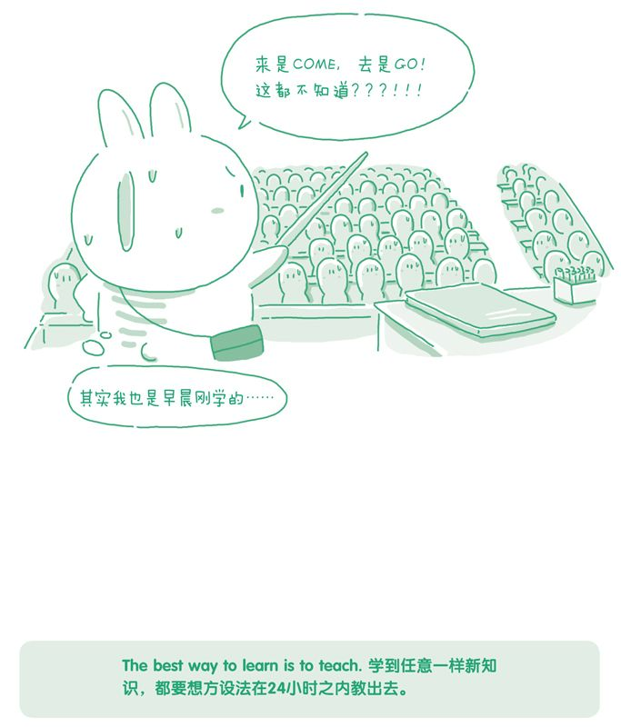
我笑道：“那Ben，你是不是也嫉妒过我呀？”Ben笑着摇了摇头。
他也确实不会嫉妒。即使我将来把英语学得像他一样好，自学能力也未必能达到他的境界。试想，这次学语法是他带我走完全程，下次再学其他东西呢？我还有把握找到一个像他这样的导师吗？
而他则不同。他可以通过总结、怀疑和创新学到任意想学的东西。我想，自己只有相对独立地自学几门知识，才能弥补在这方面和他的差距。学好英语确实会让我站上一个新的台阶，但自学能力却又不知比英语重要多少倍。
我问：“你让我教课也是为了加强我的自学能力吧？”
“不错。概括地说，自学能力包括：使用工具获取知识，大胆怀疑自己的所学，最后创造出前人没有做、不愿意做，或者做得没有你好的事物。注意，自学并不意味着不请教任何人——如何找到可以问问题的人，如何将自己的疑惑清晰地表达出来，也是自学能力的一部分。
“另外，你找的导师最好具有‘可复制性’。也就是说，你可以基本复制他成功的过程。比如学英语，你肯定不能去找那些过目不忘的人请教学习方法，因为人家是天生的。我以前就在电视里看到过一个小天才，13岁考入大学。比他足足大了七岁，却还比他低一年级的同学向他请教：‘我记不住单词怎么办？’这个孩子的回答很气人，说：‘我、我是想记多少，就、就记多少。’你看，这就是无法复制的方法和经验。我问你，从‘可复制性’的角度来说，学英语是找年轻的老师好，还是年长的老师好？”
“当然是年长的好了，越老越有经验嘛。”虽然Ben很年轻，但他实在是个特例——我这么说他应该不会生气。
“其实恰恰是年轻的好。”Ben否定了我的直觉，“如果你问一个60岁的老头儿‘您怎么把英语学好的啊？’老头儿咳嗽几声说：‘我的经验呀，就是把英汉词典背下来。’（我笑。）我不否认如果你真的背下来，最终一定会获得成功；我只是说，这样的经验你复制得了吗？即使复制得了，你真的愿意像他这么低效吗？英语不过就是个工具，对于大多数人来说，英语本身并不值得研究，而是用英语表达的知识和思想很值得研究。我们当然不希望把自己宝贵的生命都耗费在工具本身上。我曾经看到过一套‘疯狂英语’的教材，是个大黑盒子，上写：这里面的资料足够你学十年！我当时就对自己说：如果我认认真真两年还学不好一门小破语言，那还不如死了算了——更不要说花老子十年时间了！所以，虽然我当时被李阳的讲座煽得热血沸腾，却最终没有选择他的方法。”
我非常信服Ben的观点，我跟他说，他不但教会了我英语知识，还将学习任何新事物的终极方法一并移入了我的大脑。
“自学能力只是人必需的‘内力’之一而已。”Ben接着说，“而所谓‘内力’，就是那些放诸四海而皆准的道理，是那些无论你做什么都极可能用到的素质，包括诚信、理解能力、创新能力、沟通能力、自学能力、独立思考能力，以及与他人分享的能力。这些能力都是在你人生中越早获得越好的。军队里有句话：‘好兵是不分兵种的。’同样，现实生活中，真正优秀的人才也是不分行业和出身的。只要是锥子，放到太空服的兜里都会冒尖儿。”
我点头，然后问道：“Ben，还有个问题。我在研究‘二级时态’的时候发现这么一句话：
I wouldn't do it if you ask me.
我是不会这么做的——如果你问我的话。
课的时候没敢举这个例虽然它的套儿是过去将来时，但表达的意思显然不是‘过去+将要’的感觉，所以我在讲子。”
“那就对了。”Ben说，“因为这根本就不是时态问题，具体是什么咱们下次再说吧。你现在脑子是热的，处于过度兴奋状态，再接受新知识已经很困难了。这星期你回去的作业就俩字——”
我打了个立正，接口道：“美剧！”
“不！”Ben把手一抬，“是‘休息’！回去总结完这次课的经验教训后，就不要再想任何与英语有关的事了。人的大脑在接收语言信息时，需要一段时间分析、整理并分类。如果信息不断涌入，大脑就忙不过来了。所以你要给自己至少一个星期时间休整。”
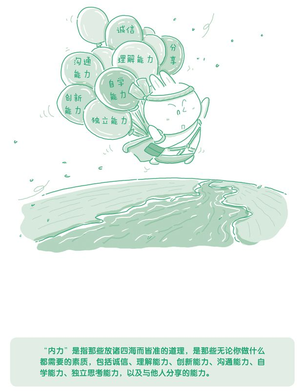
Ben低头喝了口水，抬眼看着我，问：“你知道什么叫‘不要想任何与英语有关的事’吧？”
“就是不碰英文电影，也不碰英文书了呗！”我不明白Ben为什么如此鄙视我的理解能力——好歹我也是上过讲台的人了。
“这还不够。”Ben很认真地摇了摇头，说，“我要求：如果你走在街上，看到天上飞过一只鹰，你就要立刻闭眼，转移注意力。”
我瞪大眼睛道：“为什么？”
“因为‘鹰’和‘英语’的‘英’谐音。”
我大笑着走出Ben的办公室。
Ben老师：
你好！首先感谢你的课带给我的飞跃（虽然从严格意义上说，这节课不能完全算“你的课”）。我从第一节课就知道，跟着你学，进步的绝不仅仅是英语。这次课更是毫无疑问地证明了这一点！
我将此次我备课时及实际授课时的所得总结如下：
一、我上课讲的时态
1 将来（will do）
过去+将要=did+will do=would do=过去将要发生的事
2 已经（have done）
1) 过去+已经=did+have done=had done=过去已经发生的事
2) 将要+已经=will do+have done=will have done=将要已经发生的事
• 过去+将要已经=did+will have done=would have done
3 持续（be+doing）
1) 过去+持续=did+be doing=was doing=过去持续发生的事
2) 将要+持续=will do+be doing=will be doing=将要持续发生的事
• 过去+将要持续=did+will be doing=would be doing
3) 已经+持续=have done+be doing=have been doing=已经持续发生的事
(1) 过去+已经持续=did+have been doing=had been doing
(2) 将要+已经持续=will do+have been doing=will have been doing
• 过去+将要已经持续=did+will have been doing=would have been doing
二、理解句子的窍门
当你认为某句话的时态过于复杂时，就给谓语动词“升”个时态。
三、授课技巧
1 永远从实例引入
例子要足够吸引人，让学生觉得“我很需要表达这方面的感情”。
2 认为学生能自己想通的绝对不讲，而是一点一点启发
1) 经常让学生自己思考有助于他们养成自学的习惯；
2) 可以利用学生必然答错的问题制造反差，让他们像我上你的课时那样“噢！！”出来。
3 语言尽量幽默，能让人一直听下去
4 语速最好偏快
1)让学生在短时间内获得更多信息；
2)更快的语速让学生在课上来不及怀疑自己所学到的东西。
四、今天学的“牛主席语录”
The best way to learn is to teach. 学到任意一样新东西，都要想方设法在24小时内教出去。
五、内力
1 “内力”就是那些放诸四海而皆准的道理，是那些无论你做什么都需要的素质。
2 “内力”包括：诚信、理解能力、创新能力、沟通能力、自学能力、独立思考能力，以及与他人分享的能力。
3 自学能力
1) 使用工具获取知识；
2) 大胆怀疑自己的所学，最后创造出前人没有做、不愿意做，或者做得没有你好的事物；
3) 找到可以问问题的人，并能将自己的疑惑清晰地表达出来（找的导师最好具有“可复制性”）。
六、语言学习的原理
人的大脑在接收语言信息时，需要一段时间分析、整理并分类。如果信息不断涌入，大脑就忙不过来了。
P.S. 我一定遵照你的指示，“不想任何与英语有关的事”。刚才女朋友说要给我买樱桃吃，被我拒绝了。
祝好！
Bob
2012-1-21
在开始看下一章之前，你最好：
1 复习本章所有知识点，并熟记“牛主席语录”。
2 现在可以给自己的朋友讲所有“二级”以上的时态了！
注意，讲课的时候一定要用到本章提到的备课及教学技巧。
1．从将要（will do）中扩展出的时态
过去+将要=did+will do=would do
例句
• She would always drive to work.
• I was hoping you wouldn't remember.
• The test is harder than I thought it would be.
• When I was young, I would read alone in my room.
• Five years ago, I fell in love with an amazing woman who would become my wife.
练习
• She __________ always __________ to work.
• I was hoping you __________.
• The test is harder than I thought it __________.
• When I was young, I __________ alone in my room.
• Five years ago, I fell in love with an amazing woman who __________ my wife.
2．从已经（have done）中扩展出的时态
1）过去+已经=did+have done=had done
例句
• Dan had just left when I arrived.
• He had been a teacher four years since he was seventeen.
• She didn’t go to bed until she had finished her homework.
• Mr. Smith, who passed away earlier today, had always been a good friend of mine.
• The worst part was that they took my backpack which had all the original artwork I had done for my own comic book.
练习
• Dan __________ just __________ when I arrived.
• He __________ a teacher four years since he was seventeen.
• She didn't go to bed until she __________ her homework.
• Mr. Smith, who passed away earlier today, __________ always __________a good friend of mine.
• The worst part was that they took my backpack which had all the original artwork I __________ for my own comic book.
2）将要+已经=will do+have done=will have done
例句
• You won't have known what to do until next week.
• Will you have known Judith for ten years next month?
• By the time Norton retires, I'll have made him a millionaire.
• He is somebody now. He will not have remembered his old classmates.
• LEONARD: Sounds like a breakthrough. Should I call Science magazine and tell them to hold the cover?
SHELDON: It's time travel, Leonard. I will have already done that.
LEONARD: Then I guess congratulations are in order.
SHELDON: No, congratulations will have been in order.
练习
• You __________ what to do until next week.
• __________ you __________ Judith for ten years next month?
• By the time Norton retires, I __________ him a millionaire.
• He is somebody now. He __________ his old classmates.
• LEONARD: Sounds like a breakthrough. Should I call Science magazine and tell them to hold the cover?
SHELDON: It's time travel, Leonard. I __________ already __________ that.
LEONARD: Then I guess congratulations are in order.
SHELDON: No, congratulations __________ in order.
3．从持续（be+doing）中扩展出的时态
1）过去+持续=did+be doing=was doing
例句
• She was just talking to herself.
• I saw what you were doing through the window.
• I swear: whatever I was doing, I was always thinking of you.
• I think I was making headway — everyone was smiling at me all day.
• I was hoping to establish a relationship with Jenny that might have someday led to marriage.
练习
• She __________ just __________ to herself.
• I saw what you __________ through the window.
• Iswear:whatever I __________, I __________ always __________ of you.
• I think I __________ headway — everyone __________ at me all day.
• I __________ to establish a relationship with Jenny that might have someday led to marriage.
2）将要+持续=will do+be doing=will be doing
例句
• I'll be moving to Paris if I take this job.
• I will be doing a dramatic reading of one of Emma's books.
• Dr. Long can't be here today, so Dr. Schiff will be seeing you.
• She is going to be watching that video on a TV.
• I'm really warm, so I'm going to be taking off my sweater.
练习
• I __________ to Paris if I take this job.
• I __________ a dramatic reading of one of Emma's books.
• Dr. Long can't be here today, so Dr. Schiff will __________ you.
• She __________ that video on a TV.
• I'm really warm, so I __________ my sweater.
3）已经+持续=have done+be doing=have been doing
例句
• I've been waiting for this opportunity for ten years.
• I've been going to the guy for twelve years.
• I've been holding off on asking her out in the past.
• I've been doing it since the ninth grade.
• Ross and I have been watching that show since I can remember!
练习
I __________ for this opportunity for ten years.
I __________ to the guy for twelve years.
I __________ on asking her out in the past.
I __________ it since the ninth grade.
Ross and I __________ that show since I can remember!
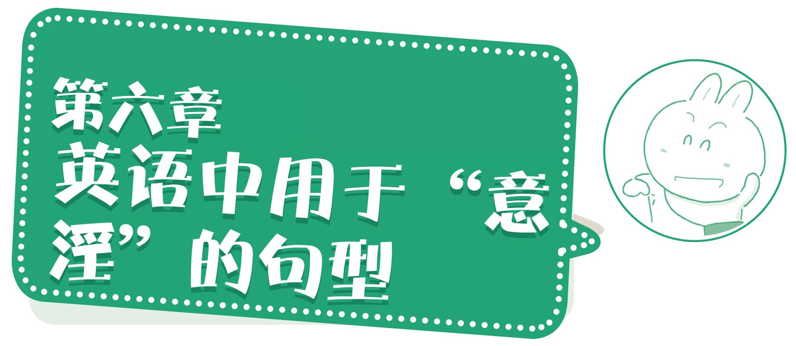
一个星期的休整让我神清气爽。当我再次走进Ben的办公室时，却发现他愁眉苦脸地坐着。我从没见过他情绪低落的样子，赶紧上前请安。
Ben一手托着腮帮子说：“I really need a new house. If I had a million dollars, I would buy a big one.”
我心想：这就开始啦！于是模仿着他的套儿说：“If I had a million dollars, I would go abroad to study.”
Ben的表情瞬间恢复正常，点头问：“和一般句子有什么不同？”
作为已经跟随Ben走过五次课的学生，我的见识已和之前大不相同。“首先，这两句都表示‘如果某件事发生的话，会相应产生什么结果’。比如你说的那句，就表示‘假如我有一百万美元，我就会买个大房子’。另外，每一句都相当于现在时的句子‘降’了一个时态。比如你说的第一句，‘降’之前就是If I have a million dollars, I will buy a big house.说实话，还是不‘降’时态更符合中国人的表达习惯。”
“很好，你总结的‘降时态’就是虚拟语气最大的特点了。现在咱们体会一下‘降时态’的意义——”Ben突然指着自己，用英语问道：“Do I have a million dollars?”
“No.”
“Will I buy a big house?”
“No.”
“所以说，从这句隐含的意思来看，‘降时态’的意义在于：被‘降’的部分与事实不符——这正是虚拟语气最大的特点。其实，这种假设的语气就是一种意淫。因为所谓‘意淫’，就是把和事实不符的事情在脑子里过一遍。现在告诉我这句话隐含的意思——If I was rich, I would travel around the world.”
我没直接回答Ben的问题，反问道：“不是应该说If I were rich吗？”
Ben摇头道：“在降时态的时候不用想着把所有的be动词降成were——虽然我知道你以前肯定是这么学的。在美语里，无论书面语还是口语都可以用was。现在很多语法书都太绝对，说打死都不能用，可是你一看美剧又能发现大量类似If she was here ... 的句子。”
后来我一查资料发现，我国英语语法知识基本来源于二百四十多年前的英国。经过我们这个“自交体系”中学者一代代的努力，语法——终于没法学了。
我接着回答Ben的问题：“刚才那句隐含的意思是——第一，I am not rich. 第二，I won't travel around the world.”
“很好，这就是分析虚拟语气用的‘隐含法’了——将‘降时态’的部分‘取非’，即是事实。再问个问题——假设咱俩在学校里偷东西，我说If we get caught, we will be expelled.这也是在表达‘如果某件事发生，那相应地会导致什么事’。为什么它没有‘降时态’呢？”
我开始陷入深深的思考。Ben刚才说，“降时态”的意义在于“被降的部分和事实不符”；那么不“降时态”就说明“并非和事实不符”，即“不确定是否和事实相符”。这样一想就全明白了——在这个句子中，我们根本无法确定是否会被抓住（get caught），因此也就不知道会不会被开除（expelled）。于是我用“隐含法”分析道：
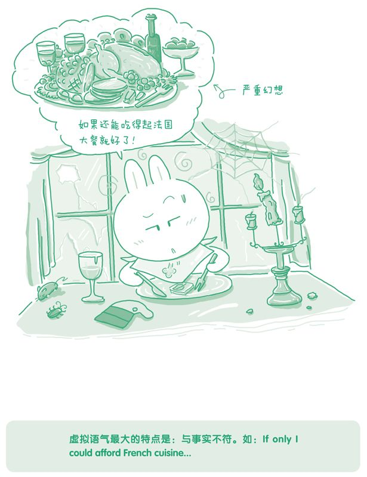
“这句隐含的意思是：首先，We are not sure if we will get caught.于是，We are not sure if we will be expelled.不过一旦我们get caught了，就肯定会被expelled。”
“非常好！另外，以后见到Was I rich, I would travel around the world这样的句子也不要奇怪。只要if从句里有was,were,had done或should do，都可以把if直接省掉，再把was,were,had或should拽到最前面，比如这三句：Should it rain, we would be staying at home. Had I known about the meeting, I would have been there. Were it not for the climate, I would like it here very much.
“比起if来，它的同义词whether的省略就复杂一点儿，比如在We should respect the wisdom of older people, be they our parents or others中，后半句本来是什么？”
我想了想，说：“如果这是省略了whether的结果，那后半句应该是想表达whether they are our parents or others。也就是说，whether从句的省略不但要把whether省掉，把be动词拽到最前面，而且要把be动词变为原形。所以如果我想表达‘所有物质均由原子构成’的感觉，就可以说All substances, be they gaseous, liquid, or solid, are made up of atoms.”
“不错。现在再考虑这个问题：刚才‘降时态’的那些句子都是对于什么的假设——过去、现在还是将来？”
“现在。”
“那以后如何造类似的句子？”Ben进一步问道。
“先造一个普通句子，然后再‘降时态’。比如我幻想有一天得到神灯，可以满足我一个愿望。我的普通句子就是：If I have a wish, I will wish for three more wishes.‘降时态’后变为：If I had a wish, I would wish for three more wishes.”
看我完全明白了，Ben总结道：“这就是咱们今天要表达的第一种感情——对于现在的假设。造句子的方法你刚才也基本说清楚了：第一，用生理反应造个句子；第二，把与事实不符部分的谓语动词‘降’一个时态。注意：靠生理反应造出来的只是雏形——‘降’完时态的句子才是正确的。”
我知道他的“用生理反应造句”并不是说真的可以全凭感觉乱造，而是要求除了没“降时态”之外，其他的语法部分完全正确。
“再强调一下，”Ben接着说道，“‘降时态’意味着和事实不符。现在判断一下：You should do your homework和You must do your homework有何不同？”
两个词都表示“应该”，Ben却要求我指出它们的区别……我只好试着用他说的定理分析——should明显是‘降’过时态的shall，因此它后面的do your homework就与事实不符……啊，原来如此！
我胸有成竹地说道：“should那句隐含的意思是You didn't do your homework，而must那句却没有说明you是否已经do your homework。也就是说，只要用了should，就说明它后面的那件事根本就没发生。”
“完全正确！现在顺便欣赏一下should家族里最诡异的句子——I insist that he leave now.”
刚听到这句话，我还以为Ben脑子坏了——明明说是should家族，结果句子里却不带这个关键词。而且这句的leave似乎也没用对：按说leave的前边如果是he，那它起码也应该是个leaves——甚至left也可以接受，可偏偏却是个动词原形。
Ben看到我一脸困惑，接着说：“这是美语的用法。在英式英语里也可以说I insist that he should leave now.”
“噢，我想起来了！凡是像insist, suggest, require这样的词后面加that，那that引导的从句就必须用动词原形。”
“凡是？”Ben笑着问道。“那你解释一下这句话：I insist that my mom is a good woman.”
我从Ben的笑容中意识到，自己之前的学习又出问题了。他说的句子完全正确，但that后面用的是is，而不是动词原形be。
“注意，that后面是否加原形和用不用insist没关系，而只和是否省略了should有关系。而判断能否省略should的标准是：看看整句有没有‘要求’的感觉——或者说得更通俗一点——‘指手画脚’的感觉。比如你给你儿子开家长会，我是老师，我就可以说：It is important that your son study harder.这句里明显省略了should。但是注意：I think you should study hard这句中，should是不能省略的，因为I think只表示‘我想了一下’，而没有明目张胆地对你提出要求。
“现在假设我在你家做客。你女朋友过会儿回家，所以你希望她来的时候我已经从你家消失了。该怎么说？”
“You'd better be gone when she gets here?”我有点拿不准。
“这样语气太强了，不礼貌。”Ben摇头道，“而且也没涉及should的省略。”
我反驳道：“You'd better至少比you should语气弱吧？”
“这都是谁教你的……”Ben一脸无奈，“事实上正好相反——should语气更弱。咱们刚学过could和would比can和will礼貌；同理，should的语气也更缓和一些。”
我也是一脸无奈地点点头——突然觉得自己也挺不容易的，居然学什么错什么。
“再回到刚才那句话。其实它的原型是Gossip Girl里的台词——I'd rather you be gone when she gets here.当然，I prefer that you be gone when she gets here也是可以的。”
“嗯！”我点头道，“I'd rather和I prefer确实都有指手画脚的感觉。”
“should的省略就说到这儿。现在试试这个场景：你被人骗了二十万，把对方祖宗十八代都恨上了。于是你跟我说：Ben, I really wanna kill him.我答：I wouldn't do it.”
我很快理解了Ben的意思：“这句省略了if的那半句，其实说全了应该是I wouldn't do it if I were you.也就是说，不带if也可以‘意淫’。”
Ben点头：“很好。那再说说I can do it和I could do it之间的区别吧？”
我一时没反应过来Ben为什么突然问这个，顺口答道：“I could do it的可能性要比I can do it小一些。”当然话一出口就后悔了，因为这又是我以前学的东西。果然，Ben说：
“Bob，我倒真希望你什么都不会，是一张白纸。你发现了吗？我们这几课最主要的任务不是学新知识，而是纠错，否则根本用不着学这么多次。当然这也不怪你，以前的语法给你印象太深了，以至于你现在还很难摆脱它的束缚。这样吧，我们先把这句放放，在美剧里找感觉。Friends里有个诡异的老头叫Mr. Heckles，总嫌楼上Monica和Rachel太吵。有一次他上来敲门：
MONICA: Hello, Mr. Heckles.
MR. HECKLES: You're doing it again.
MONICA: We're not doing anything.
MR. HECKLES: You're stomping. It's disturbing my birds.
RACHEL: You don't have birds.
MR. HECKLES: I could have birds.
你能看出Mr. Heckles有多不讲理了吗？”
我笑道：“能，能！I could have birds后面省略了if，就相当于说‘在一定条件成立的情况下，我可以有鸟’。说明他家里根本就没鸟。而他竟然因为这个‘他可能会有的鸟’而责怪Monica她们吵到了他的鸟——实在是太不讲理了！”
“很好，现在给我解释I could do it吧。”
我愣了几秒钟，突然发现了两句之间的关系！
“I could do it其实表示‘在条件允许的情况下，我能做这件事’；而I can do it只是单纯地表示‘我能做这件事’。”解释完后，我又自言自语道，“难怪could要比can可能性更小，这么多年居然没人告诉我这是虚拟语气！”说着摇了摇头。
“没人告诉你是因为教你的人中有一部分也不知道。他们只是从书上看到‘可能性小’，就硬生生背下来，从来不去想原因。以此类推，你也应该明白为什么Would you do me a favor?比Will you do me a favor?要客气一些了吧？”
“明白了，明白了！”我像在听摇滚一样不停点头。同时又想到了拒绝邀请的经典句型——I would love to, but...前半句明显是对于现状的假设，说全了估计是I would love to if I had time或者if I had enough money之类的。
“再回来说说Friends。还记得那个和Ross结婚七年，并且给他怀了个孩子的Carol吗？”
我笑道：“当然记得。她是个……那词叫什么来着？”我忘了“女同性恋”怎么说。
“Lesbian。”
“对对，到嘴边的词，总是忘。”
“其实很好记。你看那些同性恋的片子都是哪国出的？”
我不好意思地说：“据我的经验是……美国和日本的比较多吧。”
“正是。不管是美国还是日本，都和我们有一海之隔。所以‘女同性恋’可以记成‘来自彼岸’。”
我张大嘴半天说不出话来——Ben的想象力也太丰富了！我问：“你准备出版的那本关于单词记忆法的书里，也有这种记法吧？”
“有倒是有，不过这种记法只适用于极少的单词。我要写的这本书不但会收录所有TOEFL， IELTS， SAT， GMAT和GRE的常用词，而且还要使这些词的‘巧记率’达到95%以上，肯定不能只用‘谐音’这么原始的记法，而是正正经经地用词根学加上巧记的方法。”Ben谈到自己的著作很是兴奋。
“不说我的书了，现在回到Carol的事上。有一集Carol要和另一个lesbian结婚，还给Ross发了封请柬。Ross当然不想赴约了，可是他的朋友都劝他去。于是他和好友Joey有这么两句经典对白：
ROSS: She's my ex-wife. If she were marrying a guy, none of you would expect me to be there.
JOEY: Hey, if she were marrying a guy, she would be like the worst lesbian ever.”
“这两句都是‘对于将来的假设’！”我立刻明白了Ben其意何指，“比如Ross说的那句，‘升’一个时态就成了If she is marrying a guy, none of you will expect me to be there.其中前半句的意思是‘如果她（将）要和一个男的结婚’——正好是‘现在进行时表示将来’。就像刚才那些句子‘与现状不符’一样，这半句也‘与将来的状态不符’——Carol都知道自己是个女同性恋了，她不会和男人结婚的。因此，这句隐含的意思是：第一，She is not marrying a guy.第二，At least one of you expects me to be there.”
“很好！那除了‘现在进行时表将来’，还有什么是可以表示将来的句型呢？”
“有be going to do和be to do的句式，还有will和shall。它们‘降’过时态就成了were going to do，were to do，would和should。”
“不错。咱们之前讲过be going to do和be doing其实是一码事，就用不着举例子了。我在给外教面试时，倒是会经常用到If we were to hire you, we would offer you 200RMB/Hour.再比如面对一个不断打扰我的人，我会说I wish you would leave me alone.除此之外，should也能表示对将来的假设，比如身遭不测的时候就可以说If you should see my mother again, then tell her I loved her.当然啦，就算没有这些关键词帮忙，也同样能通过简单的‘降时态’来表达‘将来’的感觉——If she became my wife in the future, I would take good care of her.”
Ben一口气举了N多例子，然后说：“好，既然有对将来和现在的假设，就应该有……”
“……对过去的假设。”我接道，“我记得第一次课后给你写的信里就有类似的句子，不过当时是用纯换套儿的思想解决的——原句是He would have been here yesterday if he had driven a car.如果用‘隐含法’分析，那么第一，He wasn't here yesterday.第二，He didn't drive a car.”
“正确！在‘对于过去的假设（与事实不符）’中，if打头的那半句要用had done，而另外半句则要从would do——也就是‘对于现在的假设’的基础上——再‘降’一个时态，这样才有过去的感觉。”
“可是would do已经到极限了，还能怎么‘降’？”我脑子里甚至飘过了“woulded do”（当然，woulded这个词是铁定不存在的），“其实我能猜到，你最后推出的结论，肯定和刚才那个例句相符，也就是说，would do再‘降’个时态会变成would have done。但那就意味着：这里的have done有‘过去’的感觉啊！”
“先看个场景吧。”Ben没有直接回答我的问题，“我是医生，一直没告诉自己的病人她得了绝症。等她终于知道了的时候，就责怪我当初撒谎。这时候我会辩解：I may have lied, but I was doing the right thing.前半句什么意思？”
正如Ben之前所说，我们自己造不出来的句子却往往能轻易听懂。我尽量精确地翻译道：“我有可能过去对你撒了谎。”
Ben进一步举例：“再比如你来上课，我说You must have done your homework.怎么解释？”
“这表示‘你肯定已经做了作业’——或者说‘你过去肯定做了作业’。”
“那如果你一回家，发现找不着自己养的超级小乌龟了，于是跟你妈说You can't have thrown it away. It must be somewhere!——这又是什么意思？”
“表示‘你（过去）不会把它扔了吧？’。”我的思路越发清晰，“刚才may，must，can后面的have done果然都表示‘过去’！”
Ben接着说：“一般我们会把will，may，must，can这样的动词归为一类，因为它们后面都必须加do——也就是动词原形。比如你见过I will finish it，但肯定没见过I will finished it.”
“对，这些都是情态动词。”我说。不过话一出口，就又后悔了——还是犯了“起名字”的毛病。这些词是不是叫“情态动词”，其实和它们后面是否要加do没什么关系。
Ben这回倒没纠正我，只说：“好吧，如果你想这么叫的话。不过一定要记住相应的定理：在只能加do（动词原形）的地方，have done表示‘过去’。这就是为什么would do‘降’完时态会变为would have done。”
“明白了！那，”我突然想起了to do的句型，问道：“to后面也肯定加do，难道也可以变成to have done？”
“当然行了！比如你正和朋友聊天，我想打断你，怎么说？”
“Sorry to bother you. ”
“那要是来不及说这句怎么办？比如我有急事，冲过去直接把事跟你说了，之后该怎么向你朋友道歉？”
“Sorry to … have bothered you?”我试探着问道。
“没错，千万别不敢说，因为do和have done的语法位置是等同的——也就是说能加do的地方一般都能加have done。你想，have done中的have本来就是个动词原形，而且还能根据时态变成has和had——完全就是在享受一般动词的待遇嘛！如果你足够‘书面’，甚至可以说出这种句子：Having finished his homework, he went to bed right away.”
真不愧是“能加do就能加have done”——以至于能加doing的地方也能加having done！我虽然能明显看出逗号前面是用doing“找补”的部分，但还是被having done这么地道的用法雷到了！我忍不住换套儿造了一句：Having thrown up on Ben, I apologized to him.果然，Ben也被我的句子雷到了。
Ben从一阵恶心中回过神来，说：“现在你明白了do和have done语法位置等同的问题，咱们就该算算旧账了（我心想：什么旧账？吐他一身还要算账？！）。刚才你说to后面肯定加do——确定吗？你怎么解释I'm looking forward to seeing you这句话？”
Ben又问到了我的痛处！这个王八蛋句子从高二就开始困扰我，一直到现在！每次问老师的结果不外乎两种——一种说“to是介词”（给to起了个名字）；另一种说“这是特例”（索性不予解释）。我近乎崩溃地说：“Ben，这个你就是杀了我我也解释不出来了。”
Ben笑道：“这个没指望你能解释出来。先记个定理吧——sth和doing的语法位置也是等同的。”
“也就是说能用sth的地方一般都能用doing?”Ben的定理让我看到了一线曙光，我顺着这个思路道，“好像确实是这样。如果我可以说Apples are good for my health，那就一定可以说Swimming is good for my health.”
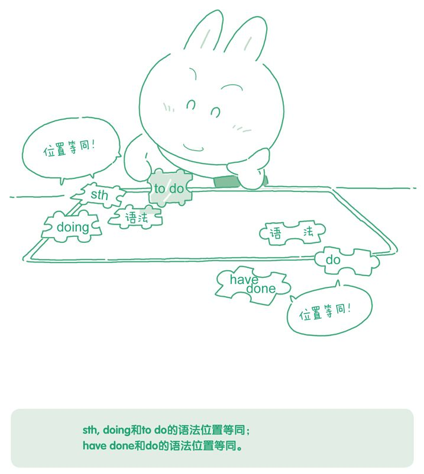
“是啊，这样你就明白为什么I like后面一定要加doing了吧？”
“对对！因为可以说I like apples.这里面apples就是个sth，所以肯定可以加doing——比如I like teaching.”
“正是。千万不要小看这个定理，它能帮助你解决look forward后面加doing的问题。”
我恍然大悟：“是啊！因为有I'm looking forward to the party这样的句子——既然能用the party这样的sth，也就一定可以用doing了！”
一个多月的“自我电影集训”让我一旦知道了某个定理，大脑中立刻就会涌出很多例句与之对应。我说：
“那to+doing的例子就可以有很多了！比如，有I'm used to the climate here，就一定有I'm used to swimming in winter；能说I can't help you，就一定能说I can't help staring at her！对了，我以前看I prefer playing basketball to studying还很不顺眼——其实只要一想I prefer apples to bananas，就会觉得顺理成章了！还有，如果能说The computer is important to me，那The computer is important to studying English也就造出来了！”
突然能以百分之百的自信造出to+doing的句子，连我自己也有些惊讶！我发现语法对于现在的我来说，充其量也就是层“窗户纸”！而且这张纸被Ben蘸着吐沫捅来捅去，已经足够透亮了！
Ben开始进一步引导。“现在我要扩展刚才的定理了——sth，doing和to do的语法位置都是等同的。注意，这里的doing和to do不起‘找补’的作用。”
“嗯嗯！”我心潮澎湃地点头道，“以前还一直不明白为什么l like后面sth，doing和to do都可以加，现在发现道理竟如此简单！”
“当然了！不过这个扩展过的定理有个例外——虽说它们三个在语法位置上等同，但你不能指望把I prefer playing basketball to studying换成I prefer to play basketball to to study——两个to，多难听！不过to studying毕竟只是找补的部分，去掉它后剩下的还是一句人话，所以只说前半部分I prefer to play basketball还是可以接受的。
“另外，根据刚才的定理，to do在这儿不起‘找补’作用。因为一个句子‘找补’的部分被去掉后，应该还是一个完整句子——而去掉to play basketball后，孤零零的I prefer显然不是完整句子。这就好像I like to teach中的to teach相当于sth一样；而此时like也就具有了及物的属性。
“现在你明白would后面的have done为什么表示‘过去’了，那么我再问个问题——你觉得He would have been here yesterday if he drove a car是否正确？”
if后面只用普通过去时？不按虚拟语气那样“降时态”？我感觉异常别扭！但随后发现前面学过的一个定理派上用场了——只有与事实不符的部分才需要“降时态”！不降的地方说明说话者not sure，即不确定该事件是否发生。
“我认为正确！这句不但隐含了He was't here yesterday的意思，还说明I'm not sure if he drove a car.同理，如果有个好朋友没告诉我一个重要的消息，而我又不确定她知不知道这个消息，就可以说：She would have told me if she knew about it.也就是说我推测‘她其实不知道此消息’；而如果我确定她是因为不知道，所以没告诉我，就得说：She would have told me if she had known about it.”
“分析得非常透彻！咱们继续——既然对现状和对将来的假设都可以不加if打头的从句，那对过去的假设也就一样了。听过Country Road吗？”
“听过。”
“在这首歌的B段里有一句Driving down the road I get the feeling that I should have been home yesterday，that后面那半句的意思是‘我昨天就应该到家了’，表达对过去的假设——说明他昨天肯定没到家。
“还有Lie to Me第一季里那个篮球天才，由于家境贫寒还要供弟弟上学而受贿。当他将自己的无奈告诉揭发他的人时，他质问：Are you telling me you wouldn't have taken that money?这也是对于过去的假设，说明他一定是受贿了。当然丑事被揭发后，这个天才估计心里会后悔道——I wish I wouldn't have taken that money.”
我点头道：“Lie to Me我基本每集都看，拍得太棒了！我记得有一集，当一个妈妈听说自己儿子做了很丢人的事情时，哭着说：My son couldn't possibly have done this.我当时还搞不清她想说什么，其实她是在表达‘按说我儿子不可能做这样的事啊’——说明事实上做了。”
“好，对于过去、现在和将来的假设都说完了，现在咱们可以考虑挑战一下极限。”Ben说到“极限”二字时冲我挤了下眼睛，“假设女朋友因为发现你昨天撒谎，胖揍了你一顿，你可以后悔地说：Things would be better if I had told her the truth yesterday.”
我立刻发现了此句子的诡异之处——前半句长得像“对于现在的假设”；而后半句却是“对于过去的假设”。不过对我来说，这已经不是什么“极限”了——
“其实这句就是在表达‘如果我昨天（过去）跟她说了实话，那（现在）情况就会好一些。’”为了说明自己确实懂了，我跟着又造了个句子：“I wouldn't be able to speak perfect English if I hadn't asked for your help.”
“非常好！”Ben一拍大腿站了起来，“今天就到这儿了，作业是读一本英文书。推荐你看Animal Farm，故事写得既幽默又有深度，用词也简单，是我从头到尾读完的第一本英文著作。”
这是Ben首次留看书的作业。看来经过一个多月的集训，我终于可以不用将自己的目标定位为美国文盲了。不过我怕Ben口中的“简单”和正常人的不是一个概念——以他的单词量估计看GRE阅读也会说“全认识啊”，我需要在资料上给自己更多的选择空间，于是问道：“那我看名著可不可以？”
“想都别想——名著都写得像古文似的，你还得再多读几本书才能到那一步。你想，一个学中文的人，如果连《青年文摘》读着都够戗，敢去读金庸的那些半文半白的小说吗？”
“那是不敢。”我同意Ben的看法——看来自己还是太心急了。我又问：“我在外文书店看到过一些读物，对词汇量要求很少。据说有很多本都是名著的简化版，这些能不能看？”既然名著读不了，我准备退而求其次，去读“阉割”过的名著。
“哦，那些书叫‘分级读物’。每一级的语料库都是固定的，其中的单词量也是从低级别到高级别依次递增——写作时基本不能超出这个范围。表面看来，有限的单词确实对不同等级的读者来说是好事，但不能任意使用超范围的词有时也会妨碍作者写出最地道、自然的语言。”
“有道理！你怎么知道的？”我异常佩服地问道——我一直觉得，为了了解一个人，你可能会问他“你会什么”；但了解Ben最高效的问法显然是：“你到底不会什么”。当然，Ben的回答更让我佩服——
“因为我自己就写过一本中文分级读物，2008年出版。你在Google图书里能搜到,在外文书店也能买到。出版社的人说这是世界上第一批中文分级读物,鬼才知道是不是真的……”
Ben老师：
这回我遵从你的教导，在24小时内把自己课上所学分享给了我的好友，他说好久没听过这么清晰的虚拟语气讲解了。下面是我的总结，请指正：
一、虚拟语气最大的特点
“降时态”——在普通句子的基础上，给所有“虚拟”部分的谓语动词“降”一个时态。
“降时态”的意义在于：表示被“降”的部分与事实不符。
二、隐含法
将所有“降时态”的部分“取非”，即是事实。
例句：He would have been here yesterday if he had driven a car.
隐含的意思：He wasn't here yesterday. And he didn't drive a car.
三、虚拟语气的类型
1 对于现状的假设（与现在的事实不符）
造句方法如下：
1)凭“生理反应”造个句子；
2)把与事实不符部分的谓语动词“降”一个时态。
例句：If I were a bird, I would fly.
2 对于将来的假设（与将来要发生的事不符）
例句：If I was marrying Vicky, I would be very happy.
3 对于过去的假设（与过去的事实不符）
例句：I would have told you yesterday if you had been here.
4 混合型假设
例句：Things would be better if I had told her the truth.
5 不“降”时态的假设
如果假设的部分不“降”时态，说明说话者不确定该部分是否与事实相符。
例句：If we get caught, we will be expelled.
He would have been here yesterday if he drove a car.
四、if和whether的省略
1 if的省略：省掉if，再把was, were, should或had done中的had拽到最前面。
例句：Should it rain, we would be staying at home.
Had I known about the meeting, I would have been there.
我在The Facebook Effect里还看到一句：
• The number of people there is growing at a mind-bending rate—about five percent a month. Were the growth rates of both Facebook and the Internet to remain steady, by 2013 every single person online worldwide would be on Facebook.
按照if的省略规则，这句里中间的那小半句也可以写成：
• If the growth rates of both Facebook and the Internet were to remain steady, …
2 whether的省略：省掉whether，再把be动词变为原形拽到最前面。
例句：We have all at some time felt a primal emotion, be it envy, anger or desire.
五、should的省略
当某句话有“指手画脚”（要求对方做某事）的感觉时，以that开头的从句中should可省。
例句：I insist that you (should) not see her tomorrow.
六、语法位置的等同
1 do=have done （在只能加do ［动词原形］的地方，have done表示“过去”。）
例句：He can't leave you alone.
He can't have left you alone.
2 sth=doing=to do
例句：I like apples.
I like dancing.（注：dancing不起“找补”作用）
I like to sleep.（注：to sleep不起“找补”作用）
3 另外，“语法位置等同”的原理让我越发明白了语法学习的意义——你希望从一个句子中类比出越多的新句子，就需要越多的语法知识。
例如：当看到I look forward to the party时，如果只知道第三人称单数应该加s，那么你最多再说一句She looks forward to the party；如果还掌握了所有时态，你就可以很有把握地说She has been looking forward to the party；如果再知道“sth和doing的语法位置等同”的原理，你就可以进一步享受说She has been looking forward to seeing you的特权。可见，语言学习中的“举一反三”靠的绝对不是“创造力”，而是语法知识！
七、看英文书要注意的
1 一开始不要看名著。
2 不要过于迷信分级读物。
祝好！
以上
Bob
2012-1-28
在开始看下一章之前，你最好：
1 复习本章所有知识点。
2 这次的任务可是非常繁重的，因为你读完Animal Farm大概需要一周半的时间。但是相信我吧——第一次总是最难的，一旦过去就没事了。另外一定记得：
1）“追求不完美”——如果能大概看懂意思，就尽量不要查生词。
2）不要像对待电影那样对待这本书（比如解套儿、用套儿什么的），你是忙不过来的！而且，这么解套儿用套儿地很影响心情。忍过这第一本，以后你爱怎么着就怎么着。
1．虚拟语气的类型
1） 对于现状的假设（与现在的事实不符）
例句
• Things could be worse.
• I didn't earn it. If I kept it, it would be like stealing.
• If I had a wish, I would wish for three more wishes.
• If today were the last day of your life, would you want to do what you are about to do today?
练习
• Things _______________worse.
• I didn't earn it. If I kept it, it _______________ like stealing.
• If I _______________a wish, I _______________ for three more wishes.
• If today _______________ the last day of your life, _______________ you _______________ to do what you are about to do today?
2） 对于将来的假设（与将来要发生的事不符）
例句
• I wish I was going with you.
• I wish you would leave me alone.
• Should you have any interaction with her, it would be most helpful that she not see you as a sexual rival.
• If something were to prevent you from doing your laundry on Saturday at 8:15, you might find it unpleasant.
• ROSS: She's my ex-wife. If she were marrying a guy, none of you would expect me to be there.
JOEY: Hey, if she were marrying a guy, she would be like the worst lesbian ever.
练习
• I wish I _______________ with you.
• I wish you _______________ me alone.
• _______________ you _______________ any interaction with her, it _______________ most helpful that she _______________ you as a sexual rival.
• If something _______________ you from doing your laundry on Saturday at 8:15, you _______________ it unpleasant.
• ROSS: She's my ex-wife. If she _______________ a guy, none of you _______________ me to be there.
JOEY: Hey, if she _______________ a guy, she _______________ like the worst lesbian ever.
3） 对于过去的假设（与过去的事实不符）
例句
• You should have said something before I met her.
• I don't see how I could have made it any simpler.
• For every hour she studies one subject, she gives up an hour she could have used studying the other.
• If I had known the last time I saw you would have been the last time, I would have stopped to memorize your face, the way you move, and everything about you. If I had known the last time I kissed you would have been the last time, I never would have stopped.
• —How did you get it?
—The same way you would have.
练习
• You _______________ something before I met her.
• I don't see how I _______________ it any simpler.
• For every hour she studies one subject, she gives up an hour she _______________ studying the other.
• If I _______________ the last time I saw you _______________ the last time, I _______________ to memorize your face, the way you move, and everything about you. If I _______________ the last time I kissed you _______________ the last time, I never _______________.
• —How did you get it?
—The same way you _______________.
4） 混合型假设
例句
• If you had restrained yourself, none of these would be happening.
• If things were going to happen with Rachel, they would've happened already.
• If I wanted to spend my Saturday nights doing this, I could have stayed in India.
• If my parents didn't want me to marry you, there was no way that would have stopped me.
• If I were to give up on the first little hitch, I never would have identified the fingerprints of string theory in the aftermath of the big bang.
练习
• If you _______________ yourself, none of these _______________.
• If things _______________ with Rachel, they _______________ already.
• If I _______________ to spend my Saturday nights doing this, I _______________ in India.
• If my parents _______________ me to marry you, there was no way that _______________ me.
• If I _______________ on the first little hitch, I never _______________ the fingerprints of string theory in the aftermath of the big bang.
2．if和whether的省略
例句
• Should it rain, we would be staying at home.
• Were it not for the climate, I would like it here very much.
• Had I known about the meeting, I would have been there.
• We have all at some time felt a primal emotion, be it envy, anger or desire.
• Although the Revolution began as a protest movement against alleged British tyranny, it soon broadened to become one also against other traditional forms of authority, be they religious, economic, social, or political.
练习
• ______________ it ______________, we would be staying at home.
• ______________ for the climate, I would like it here very much.
• ______________ I ______________ about the meeting, I would have been there.
• We have all at some time felt a primal emotion, ______________ envy, anger or desire.
• Although the Revolution began as a protest movement against alleged British tyranny, it soon broadened to become one also against other traditional forms of authority, ______________ religious, economic, social, or political.
3．should的省略
例句
• I'd rather you be gone when he gets here.
• Many Sichuan recipes require that one cook without interruption.
• All I'm going to ask is that we not appeal to such religious arguments.
• If he wants to become a businessman, then his parents should support him, even though their wish had always been that he pursue politics.
• Because many of us care a great deal about explanations and descriptions of human behavior, we prefer that explanations or descriptions of the rate of abortion, the frequency of unemployment, or the causes of child abuse be consistent with what we want to believe.
练习
• I'd rather you ______________ when he gets here.
• Many Sichuan recipes require that one ______________ without interruption.
• All I'm going to ask is that we ______________ such religious arguments.
• If he wants to become a businessman, then his parents should support him, even though their wish had always been that he ______________ politics.
• Because many of us care a great deal about explanations and descriptions of human behavior, we prefer that explanations or descriptions of the rate of abortion, the frequency of unemployment, or the causes of child abuse ______________ what we want to believe.
4．语法位置的等同
1）do=have done（在只能加do［动词原形］的地方，have done表示“过去”）
例句
• You must have seen me.
• He can't have left you alone.
• I may have done something bad yesterday.
• Although the scientist claimed to have made a major breakthrough in his research, the evidence he offered as proof of his assertion was paltry at best.
• Just as you need not have had an emotional, life-altering experience to make your essay personal, you also do not need to have had an unusual upbringing or background to have an unusual or interesting essay.
练习
• You must ______________ me.
• He can't ______________ you alone.
• I may ______________ something bad yesterday.
• Although the scientist claimed to ______________ a major breakthrough in his research, the evidence he offered as proof of his assertion was paltry at best.
• Just as you need not ______________ an emotional, life-altering experience to make your essay personal, you also do not need to ______________ an unusual upbringing or background to have an unusual or interesting essay.
2）sth.=doing
例句
• Toys are critical to teaching children.
• We can always return to being friends.
• I'm used to teaching in front of people.
• I'm not happy with your approach to dealing with her.
• Men need to overcome their resistance to giving love while women must overcome their resistance to receiving it.
练习
• Toys are critical ______________ children.
• We can always return ______________ friends.
• I'm used ______________ in front of people.
• I'm not happy with your approach ______________ with her.
• Men need to overcome their resistance ______________ love while women must overcome their resistance ______________ it.
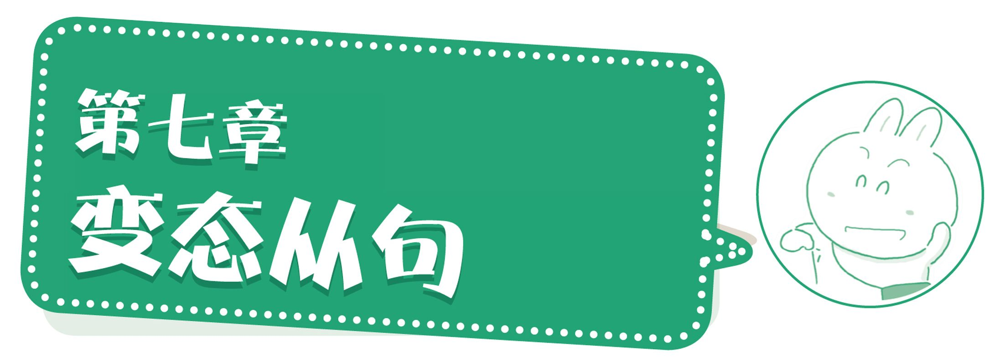
我按照Ben留的作业认真读了Animal Farm，并再一次找到了脱胎换骨的感觉。以前看英文书总觉得累，而现在的我已经受过特种训练，所以看哪个句子都熟——最差也是个“似曾相识”。这使我的注意力一下子从分裂的单词上转移到了整个句子和情节本身上。我喜欢这本书，原因很简单：它能吸引我一直看下去——虽说这是对一本好书最起码的要求。现在我呈现给你的《像高手一样学语法》，也是以“让人看得下去”为第一目标，然后才是尽可能多地传递知识。
我一见到Ben就向他表达了我对Animal Farm的“滔滔景仰”。Ben很高兴，问我看的时候是否有问题。
“跟看美剧也没什么区别，”我说，“就是从句太多——尤其是那种内含in which，to whom的句子，看着就恶心，想吃酸的。”
Ben笑道：“看来是恶心到一定程度了。”说着他站起身，“那我们出去走走吧。”
我知道Ben 可没时间陪我散步玩儿，他嘴里的“走走”就相当于户外教学了。我赶紧从包里掏出笔和本儿，一副准备随时蹲下来在马路牙子上抄笔记的架势。Ben从后面拍了拍我，说：“就是溜达一圈儿，别负重了。”我只好把“家伙”都放下，并开始后悔自己带的是圆珠笔而不是录音笔。
“万一一会儿有‘牛主席语录’要记怎么办？”我问。
“放心吧。我不但不会说新的语录，现在还要划掉其中一条。”
“哪条？！”我已经将这些语录记得滚瓜烂熟，要是有一条错的那不是白背了！
“第一条。还记得是什么吗？”
“哈哈，当然记得——Ben说的就是对的！为什么划掉？”
“这还用问——我怎么可能说的都是对的哪！这只是为了在授课前期树立自己的高大形象而已。”
“你这么好的老师还用得着这种小伎俩？”我学有所成，和Ben聊天也就无所顾忌了。
“当然。你知道老师给学生的第一印象有多重要吗？从我的教学经验来看：如果一个学生第一节课被你‘讲服了’，后面你说什么他都听你的；如果第一节课就不服，你后边说得再对也没用。所以我才拼命在第一节课给你留个好印象，哪怕说出像‘Ben说的就是对的’这么荒唐的话。你知道吗，真正的好老师都有做邪教教主的潜力。我的外教朋友在领教过我的课堂气氛之后，就曾经感叹：Ben, you don't have students. You have a cult（邪教组织）!”
我回想了一下，自己确实是第一次课就直接被Ben“讲服了”。其实以我的求学经历，见过的好老师绝对不在少数，但能“降”住我的真是寥寥无几。
“而且不但是我讲的，”Ben接着说，“你看的电影和美剧里的对话也不一定全对。你看看咱们国内电视剧就明白了——里面有大量的病句。所以从现在开始，如果你觉得一个套儿解着实在别扭，那就算了，不去学它——要有‘追求不完美的心态’嘛！不过，如果这个你觉得别扭的句型反复出现的话……”
我接着说：“那说明我的直觉不对，需要重点学这种句子——既然‘单词是混出来的’，那套儿也一样是‘混出来的’！”
“完全正确！”我和Ben相对大笑。
出了位于金融街的办公楼，不远处就是八中。Ben悠然神往地向这个学校望去，冷不丁用英文深情地说：“You know, Bob. I love this school!”
“How come?”我现在英文属于“全美式装备”，问“为什么”也敢不用why了。
“Because I graduated from this school. And I met my first girlfriend in this school. But I broke up with my first girlfriend.”Ben提到他的初恋女友时一脸幸福。
但我却一点儿都没能分享到这种幸福，因为这几句话说得实在太贫了！用得着在短短半分钟内把my first girlfriend说两遍，this school说三遍吗？用her和it指代不好吗？在这一刻我甚至产生了幻觉，觉得Ben的口语也不过如此——连个代词都不会用。
Ben好像能察觉到我的想法。他忽然自失地一笑，说：“一提到她我就语无伦次，话说得啰罗萝唆了。还是简单点吧——I graduated from this school in which I met my first girlfriend with whom I broke up.”
听了这个大长句子我脑袋“嗡”地一下，差点儿喊：“老师我晕！”原来他说这些不是跟我怀旧呢，而是又一次在我毫无防备的情况下切入正题。
Ben看到我崩溃的表情也觉得好笑，说：“半句半句来吧。whom专门指人，which专门指事物，这你也知道。去掉后半句‘找补’的部分，I graduated from this school in which I met my first girlfriend也是一个整句。它是由哪两句组成的？”
“由I graduated from this school和I met my first girlfriend in this school组成。”我这才明白Ben之所以把这几句话说得那么贫，是为了我造句方便。因为这次课不同于以往——我眼前看不到任何句子，只有靠听靠想。
“好，我们把第二句话的‘找补’部分放前面，就成了In this school, I met my first girlfriend.”
我明白了Ben的用意，接着他的话说：“所以把两句加起来就是：I graduated from this school, in this school, I met my first girlfriend.然后要做的是用which替换this school，就成了你说的那句I graduated from this school in which I met my first girlfriend.”
我眼神游离地又想了一下——“那其实倒过来说也行！把第一句的‘找补’部分放前面，变为From this school, I graduated.再把第二句放在它前边，就成了I met my first girlfriend in this school from which I graduated.”说完这些我有点惊讶——怎么又成了我自己给自己讲了？
“制造方法一清楚，句意也就一目了然了，不是吗？”Ben说，“语法就好像魔术。你在台下看，肯定觉得人生观都被改变了；可一旦你自己学会了它的技巧，神秘感就会一扫而空。你现在再把I met my first girlfriend in this school和I broke up with my first girlfriend拼起来。注意，这回说的是人，要用whom了。”
我轻车熟路地按刚才造which句子的方法说：“I met my first girlfriend with whom I broke up in this school.”
一路聊着，我们走入了八中校园。Ben指着大墙上其中一张照片说：“You see, Bob. There are a lot of students in this picture. One of them is me.”话都说到这份儿上了，我肯定不能再跟着他傻了吧唧地怀旧。我强迫自己进入造句状态，说：“There are a lot of students in this picture, one of whom is you.”
Ben看着我笑，说：“不错不错。”
我心念一动，又造了一个：“There are a lot of pictures, one of which includes you.”
Ben点头道：“很好！咱们刚才造的，已经是从句里所谓比较难的一种了。弄懂这个之后再去看where, when, what, that, how引导的这些从句，就会觉得跟小儿科没什么区别。而且以你现在的水平，以后碰到任何之前没有讲到的语法知识，都能轻而易举地收为己用了。”
Ben停顿了一下，转过身正对着太阳光，笑着眯起眼睛，说：“到这儿，我对你的承诺已经完成——该你履行自己的承诺了。这次回去以后不用写邮件，我只期待你的大作。”
语法居然学完了！
语法居然学完了！！
从第一次上课的时候，我就知道终有一天会完，但七次课实在是太快了！奇怪的是，在完成的一刹那，我并没有自己预想的那种激动不已的心情，而是在不经意间被一阵怅然若失之感袭击了。好在我还有很多语法之外的问题要向Ben请教——这意味着，今天还不会那么快结束。而且我直觉上知道，这些问题比语法本身更重要。
“Ben，为什么你要免费教我呢？”这确实一直是我心中的疑问。我明明知道：Ben教给我的这些知识很有价值，他也不会只因为我文章写得好就不收学费。我看过他的博客，文笔比我不遑多让，观点之犀利犹有过之，可是他并未选择自己动手。
“这个问题比较复杂，因为要涉及一些做人的基本原理。”
我一听“做人的基本原理”，脑子里就立刻冒出一堆泡泡，上面写着“诚实”、“谦虚”、“换位思考”等等……不过Ben说的却与这些无关：
“首先是‘边际收益递减’原理。你最喜欢吃什么？”
“冰激凌。”
“好，现在给你吃一小碗冰激凌，你会觉得很满足，对不对？”
“是。”
“那接着再给你吃第二碗。你觉得这一碗和第一碗哪个给你带来的满足大？”
“第一碗，因为新鲜感最强。”
“第三碗呢？”
“肯定又不如前两碗了。”
Ben接着问道：“第1000碗呢？”
我笑道：“那我早就吃死了！”
“没错。你吃得越多，获得的满足就越小。而且吃到一定程度时，冰激凌就只能给你带来‘负效用’了，这就是‘边际收益递减原理’。那现在假设你吃两碗冰激凌，第一碗的效用是6，第二碗是4。你获得的总效用是多少？”
“10。”
“如果你有个好朋友，也和你一样喜欢吃冰激凌，而你主动把本来要留给自己的第二碗给他了，那他获得的效用还是4吗？”
“不是。我的第二碗对他来说是第一碗，所以是6。”
“那你们获得的总效用是多少？”
“12——比我自己吃的总效用多了2！”我理解了Ben的意思，于是接着他的话说，“如果下次这个朋友有两个梨，他也不会好意思一个人独吞。假设吃第一个梨的效用还是6，那么我们俩获得的总效用又是12。如果把这两次分享——冰激凌和梨——综合起来考虑，我们每人都能获得12的效用。但假设我们从一开始就选择各自独吞，那每个人就只能获得10的效用了。”
Ben点头道：“所以说，主动、无条件地分享，并坚信自己的付出将来总会以某种形式回报回来，这就是你在人生中需要感悟的东西了。你分享的越多，就会发现自己生活得越幸福。另外，我选择免费教你，而不是其他人，是因为你本身就极其优秀，也就是说具备了分享的潜力——我尤其看中你的写作能力。你知道吗，这本书如果由我自己动笔，读者很难看清楚一个处于迷茫期的英语学习者，是如何通过短短七次课彻底搞定语法的。而当你以第一人称去写自己上课的经历时，就会让读者感同身受。这就是为什么我会选择自己写像词典一样的单词记忆法的书，而把需要写成‘对话形式’的语法书，留给我最好的学生去写。”
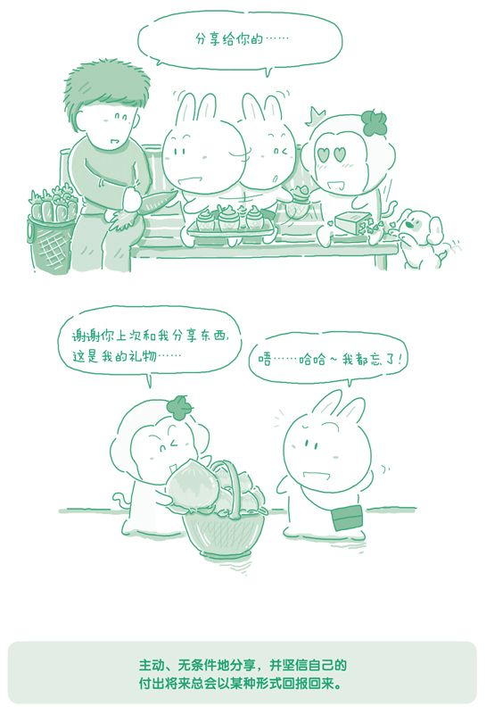
“最好的学生……”这对我来说是个仅次于Nobel Prize的荣誉！
“另外，Bob，你觉得我在讲课的时候动力比较大，还是写书的时候？”
“我觉得可能是讲课的时候动力大吧。因为你自己也说过，写书很耗精力；而你在教课时却会处于一种与平时完全不同的状态，动力会大一些。”
“其实你正好说反了——我写书的时候动力更大。这就是分享的效率问题了。我班里人数再多，每次也不会多于1000个。也就是说，我在单位时间内最多也就能与几百号人分享我的方法。可是，如果我们把书写好，想学英语的人就随时可以通过各种渠道看到这些书。那可就是在与成千上万的人分享了！”
“成千上万人！”我越发感到自己肩头的责任之重，“而且如果是英语老师看到这本书，并且愿意打开自己的思维，改进原有的教学模式，那影响的就是不计其数的学生了！”
“所以，还是那句话：和我分享这种方法的人越多，我就会越开心越幸福。并且，我也清楚地知道，这种高效的分享方式，将来总会以某种方式回报回来。”
我突然想到了一个严重的问题，说：“Ben，你在英语教学上的主要思想现在都有了着落——单词书你自己写，语法书我写，那你今后还会教课吗——如果你嫌这种分享方式太慢的话？”
Ben有些不舍地笑道：“你猜对了。一个月后，我就会离开现在的学校，去投身新的领域了。说不定还先去美国读个本科啥的，那样视野会拓宽许多。我相信，自己最终能找到像巴菲特说的那样一份事业——你每天早晨是从床上跳起来想去做它的。那时工作不会给你带来任何疲惫和厌烦，而只能带来兴奋和挑战！”
“离开学校？！”我张大了嘴，“那可是你一手创办的啊！舍得吗？”
Ben没有正面回答我的问题，只说了一句令我终生难忘的座右铭：“我是为了创造新事物而生的。当不得不重复旧事物以维持生计时，我要时刻记得自己的使命！”
我细细品味着他的话，似乎已经能看到它被载入未来的《名人名言录》。我自问：Ben找到了他的使命，我的使命又在哪儿呢？这可能是我不知多少年以后才能答上来的问题吧……
不过至少，我已经完成了自己人生的使命之一——把这本书，带给还在困惑的你。让英语真正成为我们获取知识与思想的工具。让我们为英语付出的代价——到此为止！
Bob
于2012年2月6日凌晨
请将下列成对的小分句组合成一个完整句子：
1．介词＋which
小分句
• This is a complex question. / There are many answers to the question.
• I can develop a condition. / I talk and talk and no one hears a word in the condition.
• Phoebe moves in the dressing room. / Charlie went out from the dressing room.
• It's just tiring having to figure out the age. / All my grandparents died at the age.
• He makes the transition from being focused on his problems at work to focusing on the many problems of the world. / He is not directly responsible for the problems.
组合句
• This is a complex question to which there are many answers.
• I can develop a condition in which I talk and talk and no one hears a word.
• Phoebe moves in the dressing room from which Charlie went out.
• It's just tiring having to figure out the age at which all my grandparents died.
• He makes the transition from being focused on his problems at work to focusing on the many problems of the world for which he is not directly responsible.
2．介词＋whom
小分句
• He is the one. / I live across the hall from the one.
• That's the guy. / You're trying to get away from the guy.
• Why do I have to take care of Penny? / I barely speak to Penny.
• I'm stuck here teaching a bunch of people. / Most of these people are too ugly to even be on TV.
• We are unable to admit an international candidate. / We are unable to provide aid for the candidate.
组合句
• He is the one from whom I live across the hall.
• That's the guy from whom you're trying to get away.
• Why do I have to take care of Penny to whom I barely speak?
• I'm stuck here teaching a bunch of people, most of whom are too ugly to even be on TV.
• We are unable to admit an international candidate for whom we are unable to provide aid.
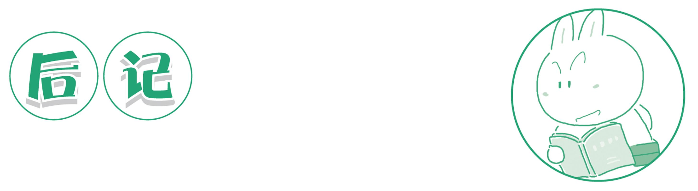
依我看，之所以有“后记”这么个东西存在，往往是因为作者心里还残存了很多想说的话，但如果把它们写在前面，就会或多或少地影响阅读效果，所以只好憋到现在这一步。我这篇后记也不例外。
《后记》的主要内容就四个部分——第一部分是“俺写这本书怎么怎么不容易”；第二部分是“俺用了什么伎俩让这本书看起来这么好”；第三部分是一些关于学习方面的分析和建议；第四部分是“获奖感言”，也就是“俺要感谢谁谁谁”。
一、写书不容易
现在让我回忆自己的写作过程已经很难了，因为人的遗忘速度是惊人的。有一本叫The Paradox of Choice: Why More Is Less的书里说：对于一件很久以前发生的事，人类一般只能记住两个部分：高潮和结尾。对我来说，高潮部分就是进入创作状态的那一段时间。我在这段时间里主要有两种感觉：一是兴奋，二是口渴。我发现当一个人疯狂地进行脑力劳动时，其效果和体力劳动差不多——都会口渴。所以，如果我发现自己某天的耗水量在4L以下，就可以判断自己当天没怎么动脑子。
不过可以确定的是：写书本身也是个思考的过程。很多东西说起来容易（讲课时语言不用特别讲究），但写起来就总觉得表达不清；或者即使表达清楚了，也失去了讲课时的精彩效果。幸运的是，完成这本书意味着我已将这些困难全部克服——效果虽然仍不及现场教学，但内容却比讲课更有条理。
另外，在实际教学中，老师根据班的不同，讲的内容也会有所不同——有时这种差异甚至是非常大的。但Ben和Bob共同完成的这些课，相当于我五年以来授课内容的精彩集锦。它对我来说是完美的，是面面俱到的。
读者应该享受到这种完美。
二、我写书时用到的技巧
读这本书时你会很容易发现，《像高手一样学语法》并没有写成提纲式的说教,而是通过导师与学生之间的对话完成的。我建议今后所有普及类的书都优先采用这种形式，因为它有两大好处：
第一，从学习者的角度提问很容易引起读者的共鸣，并能够引导他们一步一步地思考，而不是一上来就拍一个结论，剥夺读者所有领悟的乐趣；
第二，可以毫不脸红地通过学生的嘴赞扬自己。
一般来说，“对口相声”（两个人说的相声）比“单口相声”更好说，也更好听。这本书就好比“对口”——正因为有了“捧哏”（即学生）的存在，内容才得以更加流畅。当然，并不是每一本书都可以这么写——比如我过一段时间会出版的单词书就不适合。“对话”的写作方式只适用于“普及性读物”，而不适用于“百科全书式的著作”。
我领悟到这个技巧是从读《太傻十日谈》和《千万别学英语》开始的，后来又发现著名的哲学畅销书《苏菲的世界》也是主要以导师与学生之间的通信的形式完成的。再比如《论语》（这算是古代“畅销书”了——科举考试指定教材之一），也并非直接用“一二三”的方式阐述孔子的观点，而是记录孔子与其弟子的对话。
就为了这种写作形式，我不得不雇用了Ben和Bob做主角。之所以用“雇用”二字，是因为他俩从严格意义上来说不能算确有其人。
首先，Ben（也就是我）的资料虽然几乎完全真实，但我并没在金融街工作过。看到这儿你可能会问：“那你为什么非要把办公室写在金融街呢？”答案很简单——就那儿离八中近。如果是在真实的办公地点，想去八中溜达一趟至少得三个小时，最后一章就没法写了。
另外，我在写作的时候也很注意学生Bob的“硬件”——清华物理系毕业，大学英语六级竟然考到702分，Morgan Stanley的员工，文采出众，目标远大（去美国留学）——这无疑是我所教过的牛人之“大合体”。为什么要把Bob写得这么强呢？第一个原因是想让读者明白，即使再牛的同学，面对英语时也会和我们有相似的困惑，也就是说，单从这一门来讲，你并没有被别人“落下”多远，也没有什么人是你“难以望其项背”的；第二个原因更重要——Bob越牛，就能把Ben衬托得越牛！试想，如果这个Bob是个在各方面都不可救药的人，那给读者的感觉就成了：这老师也就能把这样的人“降”住，不算本事！正因如此，我才在Bob这个角色的设计上显得处心积虑——其实不过是为了达到效果的无奈之举……
我容易么我！
三、关于学习方面的分析和建议
虽然书中要求读者有“追求不完美”的心态，但这并不意味着你可以放松对“套儿”的使用要求。有很多人认为：“英语不过是一种语言，而语言都不完美——所以说话的时候少个字也没关系。”有这样想法的请看一个中文句子：“他让我上学。”你认为，它少个字可以吗？我们试试：
让我上学。
他我上学。
他让上学。
他让我学。
他让我上。
请看，上面这五句里哪句能表达原句的含义？所以说，语法需要严谨，别人使用的套儿你也要能一个词不落的使出来。千万不能这儿丢个in那儿多个is，还觉得自己天天向上。
而且，“追求不完美”的心态其实只适用于英语学习的初级阶段。为什么这么说呢？打个比方，你上幼儿园时，肯定不知道“销魂”是什么意思（如果知道这个词并且用得很好，多半还要挨揍）；但上了初中再不懂，肯定会被小伙伴嘲笑至死。也就是说，如果你把英语学到我这个水平，还“追求不完美”，还“不求甚解”，那就说不过去了。这时候一定要本着“斩尽杀绝”的精神，把那些边边角角的词消灭掉。换句话说，学到不同的阶段就需要你有不同的心态——这就像在不同的年龄要有不同的心态一样。比如，“处变不惊”是一种非常令人钦佩的素质，但如果一个孩子两岁的时候便拥有它，我们就只能说他傻。
再谈谈英语学习的另一心理障碍——“一眼望不到头”。说到这里我想起了英国戏剧理论家Martin Esslin曾经说过的话，大意是：如果你要通过一条完全陌生的路走到几英里以外的地方去，那么这个旅程在第一次可能会显得漫长无止境；但是在第二次，当你记住了旅途中的路标时，厌烦就会减轻，时间也就过得快多了。因为一件事物，如果没有形式上的、表示其内在联系的标志，它就会显得是无止境的。一旦我们了解到这个距离，那么朝着一个明确的、遥远的目标前进时就没有什么顾虑了。
学英语也是一样，大多数人进步缓慢的原因是：实在不知道下一步会发生什么，哪天才算个头。更糟糕的是，英语作为一门“平行学科”，其“路标”非常难以确定。它不像物理知识那样一环扣一环——你很难说哪些知识是另外一些知识的基础。这就像数学里Partially Ordered Set的概念一样让人没底。所以，如果你想摆脱这种心理上的不确定感，建议去准备个考试——IBT（首选），IELTS，SAT，TOEIC都可以成为你获得前进动力的“路标”。
四、我要衷心感谢的人
Daniel L. Schacter在The Seven Sins of Memory中说：“有时候，在书的封面上只出现一位作者的名字是很不公平的，因为有太多人都直接或间接地为这本书做出了贡献。”在试图列出“要感谢的人”时，我才更深切地体会到了这句话的含义。
即使作为一本颠覆性的著作，《像高手一样学语法》还是包含了太多前人的心血。例如，我在还无法用英语正常交流时，就有幸从李笑来老师那学到了“英语句子要具备的几个意识”，以及“语法位置等同”的规律。之后在写虚拟语气那一章时，又得益于Andrea DeCapua的著作Grammar for Teachers—A Guide to American English for Native and Non-Native Speakers。
身边的人也一直在不遗余力地帮助我，这些帮助使得本书内容有了本质上的飞跃。
首先要感谢的是我哥包括（他的名字就叫“包括”，断句别断错了）。看了本书的第一稿后，他在QQ上给我留了如下几段话：
“建议师祖（‘师祖’是我和我哥称呼对方的方式之一）还是要本着不那么专业的精神来写这个书……真正卖得好的，让人学得下去的，都是能把深入变成浅出的……一个终级建议，师祖你还是要在把书和论点变得更有趣和更让人读得下去上面大大努力啊！
“你越是能做到浅出，其实才证明你越深入。那些在人前显得无比高深、说话云山雾罩的人，99%（确实有1%是真不会说人话的达人来着）都是‘装B人士’，其实这也是种自卑，他生怕自己讲的被学生当堂听懂，学生问出问题来把他难住，那是多么丢人的一件事啊！！！更悲惨的是，这些人的职业正是让别人听明白他们所讲的知识，被捧臭脚的谓为魂儿的工程师。所以真正敢把东西讲得巨白如水生怕人听不懂的一般都是达人，如袁腾飞、李笑来……
“好，我个人观点，知识对你来说不成问题（或者说对N个写类似书的人绝对都不是问题），但你要把书写得更有意思，更切题，更浅出，更有个性，这才是王道……还是建议你在这方面多下点工夫，哪怕搞一点恶一点呢？谁又规定语法书不能写得又搞又恶了？”
正因为这些建议，本书的内容才得以让读者们耐着性子看完——以至于能读到这篇后记。
第二位要感谢的是我的好朋友赵萌。我能很快地完成这本书和他的鼓励是分不开的。他也读了本书的初稿，并且不辞辛苦地在Word文档里写下了整整三页的修改建议，并谦虚地将此文件命名为“对于《像高手一样学语法》的一些不靠谱儿的意见.doc”。事后证明，这些“不靠谱儿”的建议几乎全部被采用。和他的Word文档一起发过来的，还有留言：
“先躯体前空翻18天（两周半），以表极其恭谨的感谢。感谢不用花钱就能读到这么好的书：）……感觉更像是看电影，编剧是个天才。这种感觉在看完电影Saw, Fight Club和每集的Desperate Housewives之后才会有。
“给一本这么好的书提意见，真是比蜀道还要难。一来时间紧张，二来英语水平有限，所以只能勉强鸡蛋里挑骨头，提一些不靠谱儿的意见了——完全可以忽略的那种。这是一本我非常喜欢的书，读书时的感觉可以和读《把时间当作朋友》相比。为了减少篇幅，就不把我对此书的赞美一一写进来了。 这也是为什么文件只有短短三页多而不是三十多页的原因。”
我是个被人夸就找不着北的人，所以当时对着这些话乐了好几分钟。
我最最感谢的，是我的好朋友王硕。他的“资格”比上述两位都要老，因为他是本书真正的第一位读者（如果不算我自己的话）；同时，也是对我要求最严的读者——从始至终，他没对本书做过任何正面评价。他曾经对我说：
“我负责唱反调。人家都说不好的时候，我负责指出优点给你打气；人家都夸的时候，我就找毛病泼冷水让你不要沾沾自喜。他们看了说一万个好，不如我看了给你及时找出一个错误。”你们将来遇到这样的朋友，可一定“走过路过不要错过”。
他也确实为我找出了错误——是关于“过去时”的。恐怖的是，我到现在教龄是五年，可想而知在这个知识点上一共害了多少学生。在此，我要红着脸向那些受害者致歉。希望你们认真阅读本书第四章，里面和我之前上课所教有一处明显不同。
我在创作《像高手一样学语法》期间，基本上是写完一章就给他看一章。这让我想起了白居易。据说他的诗之所以通俗易懂，就是因为他每写完一首，都先念给一个不识字的老婆婆听，然后不断修改，直到对方听懂为止（要说这老婆婆文化程度可真不低——我第一次读白居易的《长恨歌》，至少三分之一没看明白）。
王硕就是那个“老婆婆”。